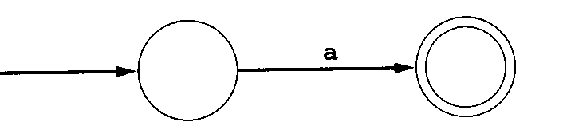

Dr. J's Compiler and Translator Design Lecture Notes
(C) Copyright 2011-2024 by Clinton Jeffery and/or original authors where
appropriate. For use in Dr. J's Compiler classes only. Lots of material
in these notes originated with Saumya Debray's Compiler course notes from
the University of Arizona, for which I owe him a debt of thanks. Various
portions of his notes were in turn inspired by the ASU red dragon book.
lecture #1 began here
Syllabus
Yes, go over the syllabus.
Announcements
Comments on Implementation Languages
- C is the recommended language for you to use in this course,
however there is a bit of wiggle room.
- The ideal language is: the one that you know best, that happens
to have a near-100%-compatible lex and yacc tool, and happens
to be on newlogin.cs.nmt.edu
- Examples of languages I've allowed students to attempt to use in past:
- C++
- OK, but not recommended. If calling flex/bison from C++ give you
trouble, that's on you.
- Python
- Vetoed. The main "lex and yacc for Python", PLY, is not lex and yacc
compatible enough. Past students whom I allowed to use this performed poorly.
- Java
- OK, but you have to agree to use jflex and byacc/j, and we might need
to do some setup for it to run as needed.
- Unicon
- My research language will be used
occasionally in examples this semester.
Unicon has a language level akin to Python but
syntax a bit more C/Pascal/Java-ish. Lex and yacc specifications
that are written carefully can be shared by Unicon and Java tools.
- If you wish to use something other than C, you must confer with Dr. J
and it must be approved, which may include demonstrating to me that it
runs on the computer named newlogin.cs.nmt.edu, and must have compiler
generation tools. NMT sysadmins might or
might not be able to install new things that you might need.
- If you wish to use compiler tools that are not near-100% compatible with
Lex/Yacc, you must confer with Dr. J and it must be approved. PLY and ANTLR
are examples of not-compatible-enough parser generator tools that have
pros and cons. For example some of the pros of ANTLR are highlighted at
Why you should not use (f)lex, yacc and bison, by G. Tomassetti. Just
because someone writes something does not make it un-biased or true. But
it does make some valid points and tell one side of the story.
What We Tried Last Year?
Last year in order to try to reduce the number of D's and F's in CSE 423
we tried various changes.
- Team focus
- (Even) a (toy) compiler is almost too big a job for one person
- We are going to run this class more like a software engineering course
- Larger emphasis on group teamwork
- Size and composition of teams is a Big Question
- In past software engineering courses, I have run team sizes
ranging from 2 (pairs) to ~40 (entire class) on
a team. Larger team size allows more specialization but makes bigger
communication and load-balancing challenges.
- Slackers, if there are any, tend to fail exams, but we also need
to mitigate risk to the teams. Not OK if the team fails due to some
team members' not being fully invested.
- Everyone still needs to learn the theory
- Everyone needs to be heavily involved in the code
- So: earn the right to team up and split labor,
via one or more mergers
after successful completion of assignments, starting after HW#2.
- Target Language we are implementing
- Last year: Java subset.
- This year: Python subset.
- Everyone will have to know, or learn, Python basics. If you
don't know Python you might start with
this
- We will define our Python subset as we go, starting from
this reference (still being
constructed/translated)
- Every team will have to sort out Python syntax and parsing,
including whitespace-based indentation (woot)
Some of this worked, some of it didn't. For 2024
- Target Language we are implementing: Rust (subset)
- Everyone will have to know, or learn, Rust basics. See HW#1
- We will define our Rust subset early and refine it as we go.
- Every team will have to sort out Rust syntax and parsing,
including whitespace-based indentation (woot)
- Semantics and runtime system for Rust likely to be a small subset
Reading!
-
Read the Thain text chapters 1-3. Within the Scanning chapter, there are
portions on the finite automata that should be CSE 342 review; you may
SKIM that material, unless you don't know it or don't remember it, in
which case you should READ in detail.
- If you have BYOPL, you may want to read the BYOPL text, chapters 1-3.
You can sort of skim chapter 1-2.
Chapter 3 is important for the next homework(s) #2+.
-
Read Sections 3-5 of the Flex manual,
Lexical Analysis With Flex.
- Read the class lecture notes
as fast as we manage to cover topics. Please ask questions about
whatever is not totally clear. You can Ask Questions in class or
via e-mail.
Although the whole course's lecture notes are ALL available to you
up front, I generally revise each lecture's notes, making additions,
corrections and adaptations to this year's homeworks, the night before each
lecture. The best time to print hard copies of the lecture notes, if you
choose to do that, is one
day at a time, right before the lecture is given. Or just read online.
Why study compilers?
Computer scientists study compiler construction for the
following reasons:
- Experience with large-scale
applications development. Your compiler may be the largest
program you write as a student. Experience working with really big
data structures and complex interactions between algorithms will
help you out on your next big programming project.
- A shining triumph of CS theory.
It demonstrates the value of theory over the impulse to just "hack up"
a solution.
- A basic element of programming language research.
Many language researchers write compilers for the languages they design.
- Many applications have similar properties to one or more phases of
a compiler, and compiler expertise and tools can help an application
programmer working on other projects besides compilers.
CSE 423 is labor intensive. This is a good thing: there is no way to
learn the skills necessary for writing big programs without this kind
of labor-intensive experience.
Some Tools we will use
Labs and lectures will discuss all of these, but if you do not know them
already, the sooner you go learn them, the better.
- C and "make".
- If you are not expert with these yet, you will be a lot closer
by the time you pass this class.
- lex and yacc
- These are compiler-writers tools, but they are useful for other
kinds of applications, almost anything with a complex file format
to read in can benefit from them.
- gdb and valgrind
- If you do not know a source-level like gdb debugger well, start learning.
You will need one to survive this class. If you have never used valgrind:
it can find some bugs that gdb misses!
- e-mail
- Regularly e-mailing your instructor is a crucial part of class
participation. If you aren't asking questions, you aren't doing
your job as a student.
- web
- This is where you get your lecture notes, homeworks, and labs,
and turnin all your work.
lecture #2 began here
Three Threads for Awhile
- Requirements Analysis
- Learn Rust, decide what our Rust subset consists of. BTW, what is
the name of our Rust subset?
- Oxide - oxc (the oxide compiler)
- Rus (or maybe even Ru)
- Your nomination here
- Book Lernin
- Learn about lexical analysis
- Flex
- Learn about the lexical analyzer generator
Rust of the Day
Tell me everything you've learned about Rust so far in like two minutes
or less:
fn f() { } is the function syntax
let v : type = val; is the variable declaration syntax; types often inferred
it uses semicolons ;-(
println! is a macro
...
How big is our Rust subset?
- certainly not: everything you see in Rust By Example
- ideally: big enough for a CS1 class (e.g. CSE 113) taught in Rust
- stuff that would be similar to C 113 content, but with Rust syntax
- practically: just a subset of even that
- no tuples if I can help it
- yes arrays, but no slices
Compilers - What Are They and What Kinds of Compilers are Out There?
The purpose of a compiler is: to translate a program in some language (the
source language) into a lower-level language (the target
language). The compiler itself is written in some language, called
the implementation language. To write a compiler you have to be
very good at programming in the implementation language, and have to
think about and understand the source language and target language.
There are several major kinds of compilers:
- Native Code Compiler
- Translates source code into hardware (assembly or machine code)
instructions. Example: gcc.
- Virtual Machine Compiler
- Translates source code into an abstract machine code, for execution
by a virtual machine interpreter. Example: javac.
- JIT Compiler
- Translates virtual machine code to native code. Operates within
a virtual machine. Example: Sun's HotSpot java machine.
- Preprocessor
- Translates source code into simpler or slightly lower level source code,
for compilation by another compiler. Examples: cpp, m4.
- Pure interpreter
- Executes source code on the fly, without generating machine code.
Example: Lisp.
OK, so a pure interpreter is not really a compiler. Here are some more tools,
by way of review, that compiler people might be directly concerned with, even
if they are not themselves compilers.
You should learn any of these terms that you don't already know.
- assembler
- a translator from human readable (ASCII text) files of machine
instructions into the actual binary code (object files) of a machine.
- linker
- a program that combines (multiple) object files to make an executable.
Converts names of variables and functions to numbers (machine addresses).
- loader
- Program to load code. On some systems, different executables start at
different base addresses, so the loader must patch the executable with
the actual base address of the executable.
- preprocessor
- Program that processes the source code before the compiler sees it.
Usually, it implements macro expansion, but it can do much more.
- editor
- Editors may operate on plain text, or they may be wired into the rest
of the compiler, highlighting syntax errors as you go, or allowing
you to insert or delete entire syntax constructs at a time.
- debugger
- Program to help you see what's going on when your program runs.
Can print the values of variables, show what procedure called what
procedure to get where you are, run up to a particular line, run
until a particular variable gets a special value, etc.
- profiler
- Program to help you see where your program is spending its time, so
you can tell where you need to speed it up.
Phases of a Compiler
|
|
- Lexical Analysis:
- Converts a sequence of characters into words, or tokens
- Syntax Analysis:
- Converts a sequence of tokens into a parse tree
- Semantic Analysis:
- Manipulates parse tree to verify symbol and type information
- Intermediate Code Generation:
- Converts parse tree into a sequence of intermediate code instructions
- Optimization:
- Manipulates intermediate code to produce a more efficient program
- Final Code Generation:
- Translates intermediate code into final (machine/assembly) code
|
Example of the Compilation Process
Consider the example statement; its translation to machine code
illustrates some of the issues involved in compiling.
position = initial + rate * 60
|
30 or so characters, from a single line of source code, are first
transformed by lexical analysis into a sequence of 7 tokens. Those
tokens are then used to build a tree of height 4 during syntax analysis.
Semantic analysis may transform the tree into one of height 5, that
includes a type conversion necessary for real addition on an integer
operand. Intermediate code generation uses a simple traversal
algorithm to linearize the tree back into
a sequence of machine-independent three-address-code instructions.
t1 = inttoreal(60)
t2 = id3 * t1
t3 = id2 + t2
id1 = t3 |
Optimization of the intermediate code allows the four instructions to
be reduced to two machine-independent instructions. Final code generation
might implement these two instructions using 5 machine instructions
in which the actual registers and addressing modes of the CPU are utilized
(left column). For comparison the right column shows the same computation
using a bytecode instruction set. Many bytecodes are stack-based and have
no registers.
| native | VM
|
|---|
MOVF id3, R2
MULF #60.0, R2
MOVF id2, R1
ADDF R2, R1
MOVF R1, id1
|
pnull # push space for a result
var 0 # load a reference to var slot 0 (position)
pnull # push space for a result
var 1 # load a reference to var slot 1 (initial)
pnull # push space for a result
var 2 # load a reference to var slot 2 (rate)
int 0 # load a reference to constant slot 0 (60)
mult # multiply top two references
plus # add top two references
asgn # assign value from top ref into next ref
|
Revision Controls Yes, Public Repositories No
It is sensible to use software engineering tools including revision control
systems such as git on a large project like writing a compiler. On the
other hand it is not OK to share your work with your classmates,
intentionally or through stupidity, except where
teams are explicitly approved or assigned.
If you use a revision control system,
figure out how to make it private and share access only with approved
team members. Various options:
- on github you setup private repositories, either for free or cheap
- you can use revision control with a local repository. setup is easy,
but if you do this, figure out how to back up your work.
- you can figure out how to do git through ssh onto a department unix
account
lecture #3 began here
Rust Reference
Have you found the
Rust Reference yet?
Overview of Lexical Analysis
A lexical analyzer, also called a scanner, typically has the
following functionality and characteristics.
A couple comments on the Lab for this course
- Labs start in earnest on Monday
- Generally they will run every Monday from 4-5pm after lecture
- Main purpose of the lab: auxiliary public Q & A and debugging help
for your project.
- Bring us your coredumps, your stack
overflows, your
huddled parse problems, yearning to breath free.
- Auxiliary purpose of the lab: extended practice with the
professional tools of the course.
- For some of you, this part will be review.
- Format of the Labs
- Usually a public Q & A followed by
a lab exercise.
- Grading of the Labs
- The Labs are to help you complete your real homework (project)
assignments and will be a miniscule portion of your grade, treated
comparable to quizzes. Let's say, the aggregate of all labs (and quizzes,
if any) will amount to 5%. A given lab might be 0.3-0.5% and is
likely to be graded on a boolean (you did it or not) scsale.
What is a "token" ?
In compilers, a "token" is:
- a single word of source code input (a.k.a. "lexeme")
- an integer code that refers to (the category of) a single word of input
- a set of lexical attributes computed from a single word of input
- a struct (or object) that holds all those attributes
Programmers think about all this in terms of #1. Syntax checking uses
#2. Error reporting, semantic analysis, and code generation require #3. In
a compiler written in C, for each token you allocate a C struct to store (3)
for each token.
Auxiliary data structures
You were presented with the phases of the compiler, from lexical and syntax
analysis, through semantic analysis, and intermediate and final code
generation. Each phase has an input and an output to the next phase.
But there are a few data structures
we will build that survive across multiple phases: the literal table,
the symbol table, and the error handler.
- lexeme table
- a table that stores lexeme values, such as strings and variable
names, that may occur in many places. Only one copy of each
unique string and name needs to be allocated in memory.
(This is an optional memory-saving device.)
- symbol tables
- symbol tables store the names defined (and visible within) each
particular scope. The most common scopes are: global, and procedure
(local).
Real languages have more scopes such as class (or record)
and package.
- error handlers
- errors in lexical, syntax, or semantic analysis need a common
reporting mechanism, that shows where the error occurred (filename,
line number, and maybe column number are useful). This may entail
helper functions, global variables, or entire data structures.
Regular Expressions
The notation we use to precisely capture all the variations that a given
category of token may take are called "regular expressions" (or, less
formally, "patterns". The word "pattern" is really vague and there are
lots of other notations for patterns besides regular expressions).
Regular expressions are a shorthand notation
for sets of strings. In order to even talk about "strings" you have
to first define an alphabet, the set of characters which can
appear.
- Epsilon (ε) is a regular expression denoting the set
containing the empty string
- Any letter in the alphabet is also a regular expression denoting
the set containing a one-letter string consisting of that letter.
- For regular expressions r and s,
r | s
is a regular expression denoting the union of r and s
- For regular expressions r and s,
r s
is a regular expression denoting the set of strings consisting of
a member of r followed by a member of s
- For regular expression r,
r*
is a regular expression denoting the set of strings consisting of
zero or more occurrences of r.
- You can parenthesize a regular expression to specify operator
precedence (otherwise, alternation is like plus, concatenation
is like times, and closure is like exponentiation)
Lex/Flex Extended Regular Expressions
Although the basic regular expression operators given earlier
are sufficient to describe all regular languages,
in practice everybody uses extensions:
- For regular expression r,
r+
is a regular expression denoting the set of strings consisting of
one or more occurrences of r. Equivalent to rr*
- For regular expression r,
r?
is a regular expression denoting the set of strings consisting of
zero or one occurrence of r. Equivalent to r|ε
- The notation [abc] is short for a|b|c. [a-z] is short for a|b|...|z.
[^abc] is short for: any character other than a, b, or c.
- The dot (.) operator matches any one char except newline. [^\n]
Lex has a Lot of extended regular expressions. I have listed the minimum
set that you are absolutely responsible for knowing. How many others do you
remember from reading the Flex manual?
Lex extended regular expressions
Here is an almost-complete list of Lex's regular expressions:
- c
- normal characters mean themselves
- \c
- backslash escapes remove the meaning from most operator characters.
Inside character sets and quotes, backslash performs C-style escapes.
- "s"
- Double quotes mean to match the C string given as itself.
This is particularly useful for multi-byte operators and may be
more readable than using backslash multiple times.
- [s]
- This character set operator matches any one character among those in s.
- [^s]
- A negated-set matches any one character not among those in s.
- .
- The dot operator matches any one character except newline: [^\n]
- r*
- match r 0 or more times.
- r+
- match r 1 or more times.
- r?
- match r 0 or 1 time.
- r{m,n}
- match r between m and n times.
- r1r2
- concatenation. match r1 followed by r2
- r1|r2
- alternation. match r1 or r2
- (r)
- parentheses specify precedence but do not match anything
- r1/r2
- lookahead. match r1 when r2 follows, without
consuming r2
- ^r
- match r only when it occurs at the beginning of a line
- r$
- match r only when it occurs at the end of a line
lecture #4 began here
Rust of the Day
Since last class,
- learned a bit about str vs. String types
- Rust is not object-oriented but...arguably it can be "object-based".
- Student response to Rust has ranged the full gamut from:
- students who are beside themselves with joy, to
- students who are disconsolate and despairing
That is OK. Maybe some of it is optimism vs. pessimism: is the glass
half-full, or half-empty?
There is some expectations management that we will need to do.
- No, you won't have to learn all of Rust, and you won't have to
implement most of Rust this semester. Learn what you can.
Implement what (the class determines) you must.
- Example: Rust macros are real exciting. I haven't learned all there
is to know about them. Does an Irony compiler need to implement anything
to do with macros? Maybe yes, it seems to me we need a strategy for
what we are going to do about
println! and format! and maybe 1-2 more. Does an Irony compiler need to
implement a proper Rust macro processor? No.
- should I have gone with a different name, besides Irony? e.g.
- Runt, because it will be small
- Ruse, because it only pretends to be like Rust
- ...
Avoid Common Regex Bugs
Usually when doing your homework, you figure out if you messed up and fix it,
but it can bite you on exams
- square bracket abuse
- trying to use regex operators inside square brackets; trying to use
square brackets as if they were parentheses
- good old fashioned operator precedence problems
- when in doubt, use parentheses
- writing a regular expression that is too loose
- be careful especially when using a regex that matches everything;
you can read the entire file with one match.
Some Regular Expression Examples
Regular expressions are the preferred notation for
specifying patterns of characters that define token categories. The best
way to get a feel for regular expressions is to see examples. Note that
regular expressions form the basis for pattern matching in many UNIX tools
such as grep, awk, perl, etc.
What is the regular expression for each of the different lexical items that
appear in C programs? How does this compare with another, possibly simpler
programming language such as BASIC? What are the corresponding rules for our
language this semester, are they the same as C?
| lexical category | Rust | BASIC | C |
| operators | | the characters themselves
such as + or -
| For operators that are regular expression operators we need mark them
with double quotes or backslashes to indicate you mean the character,
not the regular expression operator. Note several operators have a
common prefix. The lexical analyzer needs to look ahead to tell
whether an = is an assignment, or is followed by another = for example.
|
| reserved words | | the concatenation of characters; case insensitive |
Reserved words are also matched by the regular expression for identifiers,
so a disambiguating rule is needed.
|
| identifiers | | no _; $ at ends of some; 2 significant letters!?; case insensitive | [a-zA-Z_][a-zA-Z0-9_]*
|
| numbers | | ints and reals, starting with [0-9]+ | 0x[0-9a-fA-F]+ etc.
|
| comments | | REM.* | C's comments are tricky regexp's
|
| strings | | almost ".*"; no escapes | escaped quotes
|
| what else?
|
What are the Best Regular Expressions you can Write for Language X ?
What corrections/improvements/additions are needed in the following?
Note that the full ANSI C language would entail a lot of additions.
What additions are needed for the your compiler's subset language
this semester?
| Category | Regular Expression
|
| Variable names | [a-zA-Z_][a-zA-Z0-9_]*
|
| Integer constants | "-"?[0-9]+ | "0x"[0-9A-Fa-f]+
|
| Real # Constants | [0-9]*"."[0-9]+
|
| String Constants | \"([^"\n]|("\\\""))*\"
|
Lexing Reals
C float and double constants have to have at least one digit, either
before or after the required decimal. This is a pain:
([0-9]+.[0-9]* | [0-9]*.[0-9]+) ...
You might almost be happier if you wrote
([0-9]*.[0-9]*) { return (strcmp(yytext,".")) ? REAL : PERIOD; }
Starring: C's ternary operator e1 ? e2 : e3 is an if-then-else
expression, very slick. Note that if you have to support
scientific/exponential real numbers (JSON does), you'll need a bigger regex.
Lexical Attributes and Token Objects
Besides the token's category, the rest of the compiler may need several
pieces of information about a token in order to perform semantic analysis,
code generation, and error handling.
A lexical attribute is a piece of information about a token. These
typically include:
| category | an integer code used to check syntax
|
| lexeme | actual string contents of the token
|
| line, column, file | where the lexeme occurs in source code
|
| value | for literals, the binary data they represent
|
These are stored in an object instance of class Token, or in C, a struct.
The fields are generally something like:
struct token {
int category;
char *text;
int linenumber;
int column;
char *filename;
union literal value;
}
The union literal will hold computed values of integers, real numbers, and
strings. In your homework assignment, I am requiring you to compute
column #'s; not all compilers require them, but they are easy. Also: in
our compiler project we are not worrying about optimizing our use of memory,
so am not requiring you to use a union.
Comments
- Now, how about Python comments? Do we need anything more than:
"#".*
Observation
Of the 50-100 or so categories of things that appear in the source code of
most programming languages, maybe 90% of them are trivial and can be
achieved by just putting the exact lexeme in double quotes, such as "while"
or "<<". The remaining 10% are usually the identiers (variable names)
and various literal constants. But what are the exact rules for
those?
lecture #5 began here
We spent 1/26/24 going over HW#2
lecture #6 began here
Mailbag
-
I've gotten most of the rules for the lexer down, and everything that I've
tested so far seems to be working as expected, with one notable exception:
tokens that are not whitespace separated... I've noticed that (my) Flex
(scanner) seems to identify matches if and only if they are separated by
whitespace from other tokens; i.e., while `a + b` registers as
IDENT/PLUS/IDENT, its counterpart `a+b` is read as a single entity...
I must be missing something about the way flex's regex works which is
causing this behavior. Would you happen to have any ideas on what I could do
to address this?
-
No regular expression in Rust should allow the pattern a+b as a match.
Show me your regular expression that matches a+b and I will be happy
to debug it for you. But maybe, knowing that it should not match those
characters, you can debug it yourself.
- I spent some time attempting to add elements of HW#2 to my lab1 and I
ran into a problem when I tried to return the struct I created since yylex()
returns an int and not a struct(). Maybe I misinterpreted the homework
instructions but can we go over how we get yylex to return a struct in
class?
- yylex() returns an int. The token structure should be left in a
global variable for main to pick up. In HW2 it says to use a variable named
yytoken. Later we will leave it in a global variable dictated
to us by the bison parser generator.
Avoid These Common Bugs in Your Homeworks and Labs!
- yytext or yyinput were not declared global
- main() does not have its required argc, argv parameters!
- main() does not call yylex() in a loop or check its return value
- getc() EOF handling is missing or wrong! check EVERY all to getc() for EOF!
- opened files not (all) closed! file handle leak!
- end-of-comment code doesn't check for */
- yylex() is not doing the file reading
- yylex() does not skip multiple spaces, mishandles spaces at the front
of input, or requires certain spaces in order to function OK
- extra or bogus output not in assignment spec
- = instead of ==
What, again with the lex(1) and flex(1)?
These programs generally take a lexical specification given in a .l file
and create a corresponding C language lexical analyzer in a file named
lex.yy.c. The lexical analyzer is then linked with the rest
of your compiler.
The C code generated by lex has the following public interface. Note the
use of global variables instead of parameters, and the use of the prefix
yy to distinguish scanner names from your program names. This prefix is
also used in the YACC parser generator.
FILE *yyin; /* set this variable prior to calling yylex() */
int yylex(); /* call this function once for each token */
char yytext[]; /* yylex() writes the token's lexeme to an array */
/* note: with flex, I believe extern declarations must read
extern char *yytext;
*/
int yywrap(); /* called by lex when it hits end-of-file; see below */
The .l file format consists of a mixture of lex syntax and C code fragments.
The percent sign (%) is used to signify lex elements. The whole file is
divided into three sections separated by %%:
header
%%
body
%%
helper functions
The header consists of C code fragments enclosed in %{ and %} as well as
macro definitions consisting of a name and a regular expression denoted
by that name. lex macros are invoked explicitly by enclosing the
macro name in curly braces. Following are some example lex macros.
letter [a-zA-Z]
digit [0-9]
ident {letter}({letter}|{digit})*
A friendly warning: the UNIX/Linux/MacOS Flex tool is NOT
good at handling input files saved in MS-DOS/Windows format, with
carriage returns before each newline character. Some browsers,
copy/paste tools, and text editors might add these carriage returns
without you even seeing them, and then you might end up in Flex Hell
with cryptic error messages for no visible reason. Download with
care, edit with precision. If you need to get rid of carriage returns
there are lots of tools for that. You can even build them into your
makefile. The most classic UNIX tool for that task is tr(1), the
character translation utility
Flex Header Section syntax
-
%{ and %} mark off any C code
that is to be passed through into the top of the generated lex.yy.c
file.
- Flex might otherwise think you are defining a macro.
- Lex's
syntax is bluntly fast and loose and it will give you cryptic error
messages, or no error messages, if you take any liberties.
Flex Body Section
The body consists of a sequence of regular expressions for different
token categories and other lexical entities.
Actually, your semantic actions in a compiler will do more than just
return the category code.
- Helper functions can be called from the actions in a lex file
body section
- Helper functions typically compute lexical attributes,
such as the actual integer or string values denoted by literals.
- One helper function that is required is yywrap(), which is called when lex
hits end of file. If you just want lex to quit, have yywrap() return 1.
If your yywrap() switches yyin to a different file and you want lex to continue
processing, have yywrap() return 0.
- On some systems, a "lex library" or "flex library" (-ll or -lfl)
provides a default
yywrap() function that return a 1
- Flex has the directive
%option noyywrap which allows you to skip writing this function.
-
You can avoid a similar warning for an unused unput() function by saying
%option nounput.
Note: other platforms with working Flex installs (including
some versions of CENTOS)
do not have a flex library, neither -ll nor
-lfl. Use %option directives
or provide your own functions instead of expecting -lfl
to be present. Example:
%{
#include <stdio.h>
%}
%option noyywrap
%%
"abc" { printf("!!!"); }
%%
int main()
{
yyin = stdin;
return yylex();
}
Lexical Error Handling
- Really, two kinds of lexical errors: nonsense, and stuff in the base
language that's not in our subset of that language.
- Include file name and line number in your error messages.
- Avoid cascading error messages -- only print the first one you see
on a given line/function/source file.
- You can write regular expressions for common errors, in order
to give a better message than "lexical error" or "unrecognized character".
(This is how you should approach stuff in the base language but not our
subset.)
Welcome to the lecture that tests the hypothesis that Jeffery could teach
entire classes just by answering (current and past) students' questions.
Mailbag
- So do I (have to) count words, or not?
- Lab #1 asked you to adapt a word count program to turn it into a
mini-scanner. It asked you to count words. HW #2 asks you to finish the job
of writing a scanner. I don't think it asks you to count words any
more, but it asks you to count lines and store line numbers in each token.
- What should the lexical analyzer look like? where do I start?
- In Homework #2 you learn to use a declarative language called
Flex which does almost all the work for you. The only design
issue is how does it interact with the rest of the compiler, i.e.
its public interface. This is mostly hardwired/designed for you
by Flex. Your only customization option is in what form to make token
information available to the later phases of the compiler.
- How should our output be visible?
- One human readable output line, per token, as shown in hw2.html
Build the linked list first, then walk it (visit all nodes) to
print the output. Figure out how to do this so output is in the
correct order and not reversed!
- You mention storing the int and double as binary. That just means
storing them in int and double variables, correct?
- It means for constants you have to convert from the lexeme string
that actually appears in the source code to the value (int, double)
and then store the result in the corresponding lexical attribute
variable.
- When do you use
extern and when do you use
#include in C programming?
-
extern can be done without an #include,
to tell one module
about global variables defined in another module. But if you are
going to share that extern with multiple modules, it
is best to put it in an #include.
More generally, use #include in order to share types,
externs, function prototypes,
and symbolic #define's across multiple files. That is all.
No code, which is to say, no function bodies.
- Can I add parameters to
yylex()?
- No, you can't add your own parameters,
yylex() is a
public interface.
You might be tempted to
add some parameters to tell it what filename it is reading from, or
other such stuff.
But you can't. Leave yylex()'s interface alone,
the parser will call it with its current interface.
- Can I change yylex()'s return type to return a
struct token *?
- No, you can't change yylex()'s return type,
yylex() is
a public interface.
You might be tempted to return a token structure pointer. Heck, the
Jflex that we use wants yylex() to return a class
instance by default. But this isn't about what you or JFlex wants.
It is about what the parser wants. The parser wants an integer
category, which it interprets as a Terminal Symbol in
its grammar. Give the parser what it wants.
- There are bugs in your ironyref.html file
- Please report issues. Also, think of the specification document as
a negotiable contract. If it is missing something that you did well in
HW#1, has something that shouldn't be there, or needs corrections or
clarifications, ask for them. English is notoriously ambiguous, and I
am on a tight time budget. Especially when it comes to Level Two and
Level Three, I may be missing or inconsistent or we may need to
negotiate, because I haven't traditionally run my compiler classes as
team projects like I do with my software engineering courses.
- Do you want us to have a .h file for enumerating all the different
kind of tokens for HW 2? I was looking into flex and bison and it
looks like bison creates a tab.h file that does this automatically.
- Yes. In HW2 it would be best if you create a .h file for these
#defines; plan to throw it
away in favor of the one Bison creates for you in HW#3.
- Will you always call "make" on our submissions?
- Yes. I expect you to use make and provide a makefile in each
homework. Turn in the whole source, not just "changed" or
"new" files for some assignments. My script will
unpack your .zip file by saying "unzip" in some new test directory
and then run "make" and then run your executable. If
anything goes wrong (say, you unzipping into a subdirectory the script
does not know the name of) you will lose a few points.
On the other hand, I do not want the tool-generated files
(lex.yy.c, cgram.tab.c) or .o or executables. The makefile should
contain correct dependencies to rerun flex (and later, bison) and
generate these files whenever source (.l, .y , etc.) files are changed.
-
When creating the linked list I see that you have a struct token and a
struct tokenlist. Should I create my linked list this way or can I eliminate
the struct tokenlist and add a next pointer inside struct token(struct token
*next) and use that to connect my linked list?
-
The organization I specified - with two separate structs - was very
intentional. Next homework, we need the struct tokens that we allocate from
inside yylex(), but not the struct tokenlist that you allocate from outside
yylex(). You can do anything you want with the linked list structure, but
the struct token must be kept more-or-less as-is, and allocated inside
yylex() before it returns each time.
- I was wondering if we should have a different code for each keyword or just have a 'validkeyword' code and an 'invalidkeyword' code.
- Generally, you need a different code for two keywords if and when they are used in different positions in the syntax. For example, int and float are type names and are used in the same situations, but the keywords func and if, denoting the beginning of a function and the beginning of a conditional expression, have different syntax rules and need different integer codes.
- In the specification for assignment 1 it says that
if there is no extension given, we should add the required extension
to the filename.
Should we still accept and run our compiler on other file extensions
that could be provided or should we return an error of some sort?
- Accept no other extensions. If any file has an illegal extension,
you can stop with a message like: "Usage: fec [options] filename[.rs] ..."
- how am i supposed to import the lexer into my main.c file?
- Do not
import or #include your lexer.
Instead,
link your lexer into the executable, and tell main()
how to call it, by providing a prototype for yylex().
If yylex()
sets any global variables (it does), you'd declare those as
extern. You can do prototypes and externs in main.c,
but these things are exactly what header (.h) files were invented for.
- Is the
struct token supposed to be in our
main()? Do we use yylex()
along with other variables within lex.yy.c to fill the "struct token" with
the required information?
- Rather than overwriting a global struct each time, a pointer
to a struct token should be in
main().
Function yylex() should allocate a struct token, fill it,
and make it visible to main(), probably by assigning its
address to some global pointer variable. Function main()
should build the linked list in a loop, calling yylex() each
time through the loop. It should then print the output by looping through
the linked list.
- When I compile my homework, my executable is named a.out, not what
our compiler is supposed to be named! What do I do?
- Some of you who are less familiar with Linux should read the
"manual pages" for gcc, make, etc. gcc has a -o option, that would work.
Or in your makefile you could rename the file after building it.
- Can I use flex start conditions?
- Yes, if you need to, feel free.
- Can I have an extension?
- Yeah, but the further you fall behind, the more zeroes you end up with
for assignments that you don't do.
Late homeworks are accepted with a penalty per day (includes
weekend days) except in the case of a valid excused absence.
The penalty starts at 10% per day (HW#2), and reduces by 2% per
assignment (8%/day for HW#3, 6%/day for HW#4, 4%/day for HW#5,
and 2%/day for HW#6). I reserve the right to underpenalize.
- Do you accept and regrade resubmissions?
- Submissions are normally graded by a script in a batch.
Generally, if an initial submission was a fail, I might accept a
resubmission for partial credit up to a passing (D) grade. If a
submission fails for a trivial reason such as a missing file, I might
ask you to resubmit with a lighter penalty.
- I have not been able to figure out how sscanf() will help me. Could you
point me to an example or documentation.
- Yes. Note that sscanf'ing into a double calls
for a %lg.
- What is wrong with my commandline argument code.
- If it is not that you are overwriting the existing arrays with strcat()
instead of allocating new larger arrays in order to hold new longer
strings, then it is probably that you are using sizeof() instead of
strlen().
- Can you go over using the %array vs. the standard %pointer option
and if there are any potential benefits of using %array?
I was curious to see if you could use YYLMAX in junction
with %array to limit the size of identifiers, but there is
a probably a better way.
- After yylex() returns,
the actual input characters matched are available as a string named
yytext, and the number of input symbols matched are in yyleng. But is
yytext a char * or an array of char? Usually it doesn't matter in C,
but I personally have worked on a compiler where declaring an extern
for yytext in my other modules, and using the wrong one, caused a crash.
Flex has both pointer and array implementations available via %array
and %pointer declarations, so your compiler can use either. YYLMAX
is not a Flex thing, sorry. How do you think you should limit
the length of identifiers? Incidentally: I am astonished, to read
claims that the Flex scanner buffer doesn't automatically increase
in size as needed, and might be limited by default to 8K or so regexes.
If you write open-ended regular expressions, but might be advisable
in this day of big memory to say something like
i=stat(filename,&st);
yyin=fopen(filename,"r");
yy_current_buffer = yy_create_buffer(yyin, st.st_size);
to set flex so that it cannot experience buffer overrun. By the way,
Be sure to
check ALL your C library calls for error returns in this class!
- Are we free to explore non-optimal solutions?
- I do not want to read lots of extra pages of junk code, but you are free
to explore alternatives and submit the most elegant solution you come
up with, regardless of its optimality. Note that there are some parts
of the implementation that I might mandate. For example, the symbol table
is best done as a hash table. You could use some other fancy data
structure that you love, but if you give me a linked list I will be
disappointed. Then again, a working linked list implementation would get
more points than a failed complicated implementation.
- Is it OK to allocate a token structure inside main() after yylex()
returns the token?
- No. In the next phase of your compiler, you will not call
yylex(), the Bison-generated parser will call
yylex(). There is a way for
the parser to grab your token if you've stored it in a global variable,
but there is not a way for the parser to build the token structure itself.
However you are expected to allocate the linked list nodes in main(), and
in the next homework that linked list will be discarded. Don't get attached.
- My tokens' "text" field in my linked list are all messed up when I go
back through the list at the end. What do I do?
- Remember to make a physical copy of
yytext each token,
because it overwrites itself each time it matches a regular expression
in yylex(). Typically a physical copy of a C string is
made using strdup(), which is a malloc()
followed by strcpy().
- How do I handle escapes in svals? Do I need to worry about more than
\n \t \\ and \r?
-
You replace the two-or-more characters with a single, encoded character.
'\\' followed by 'n' become a control-J character. We need
\n \t \\ and \" -- these are ubiquitous.
You can do additional ones like \r but they are not required and
will not be tested.
lecture #7 began here
Questions about Flex HW
- Your HW is due When, again? FEBRUARY 6 11:59pm
- Do you have any questions?
Irony naming
Boy am I glad we didn't try to name ourselves "Oxide",
because
these blokes already took that name.
Brief Comments about Lab #1 Grading
- Labs are almost credit/no-credit
- Smallest Lab #1 zip was 2,610 bytes; the largest was a 2,740,188 byte
.zip file.
- I do not want your .git/ or .vs/ junk in your lab submission.
So from lab #2 forward, if you include extraneous files, I'll dock a point.
-
If you are in doubt about whether to include a file, ask.
Mailbag
- Can you explain ival/dval/sval again? What should the output look like?
- Source code is strings of characters from some source file.
ival/dval/sval are lexical attributes that contain the values
denoted by corresponding literal constants. For literal constants
ONLY, you compute an ival, dval, or sval (or cval). Mostly it
means converting from the string to what the string means. For
an ival it might be a call to atoi(). For dval perhaps something
similar. For sval, I think you have to go character by character
through the string and "de-escape" it.
The output for ival should look like the yytext did. The output
for dval should look like a real number that is really close to
the input, but is often off by .000001 or whatever. The output
for sval has the double quotes removed and any escape characters
have become their true selves, which are usually some non-printing
control character that affects output appearance.
- Reserved words were not in your list of tokens on hw2.html, do we
have to implement integer categories for them.
- Yes. Except for ones that are not in PunY, maybe.
- You mentioned that the next homework assignment, we won't be calling
yylex() from main() (which is why you previously
mentioned you cannot allocate the token structure in main()).
I have followed that rule,
but I question how will linked lists be set up in the next homework then?
- In the next HW, the linked list will be subsumed/replaced by you
building a tree data
structure. If you built a linked list inside
yylex(), that
would be a harmless waste of time and space and could be left in place.
If you malloc'ed the token structs inside yylex() but
built the linked list in your main(), your linked list
will just go away in the next HW when we modify main() to call
the Bison parser function yyparse() instead of the loop
that repeatedly calls yylex().
- Can you test my scanner and see if I get an "A"?
- No.
- Can you post tests so I can see if my scanner gets an "A"?
- If you share tests that you devise, for example
when you have questions, I will add them to a public collection
for use by the class. BTW, test cases are a great example of
something that one might find on the internet, and use with proper
citation. Compilers often have validation test suites, a public one
might exist for Rust. I started googling things like
"Rust compiler" lexical test suite
and maybe there is something in there. Tests of some kind.
CITE anything you find and use.
Did you see the Rust Compiler Development Guide's section on Lexing and Parsing?
- So if I run OK on a few sample files, do I get an "A"?
- Maybe.
You should devise coverage tests to hit all described features.
-
Are we required to be using a lexical analysis error function lexerr()?
-
-
Whether you have a helper function with that particular name is up to you.
- You should report lexical errors in a manner that is helpful to the user.
Include line #, filename, and nature of the error if possible.
- Many lexical errors could consist of "token Y is not legal in language X".
- You are allowed to stop with an error exit status when you find an error.
-
The HW Specification says we are to use at least 2 separately compiled
.c files. Does Flex's generated lex.yy.c count as one of them,
or are you looking for yet another .c file, aside from lex.yy.c?
-
lex.yy.c counts. You may have more, but you should at least have a lex.yy.c
or other lex-compatible module, and a main function in a separate .c file
- For numbers, should we care about their size? What if an integer in
the source file is greater than 2^64 ?
- We could ask: what do production compilers do? Or we could just say:
good catch, your compiler would ideally range check and emit an error
if a value that doesn't fit into 64-bits occurs, for either the integer
or (less likely) float64 literals. Any ideas on how to detect an out
of range literal?
FYI here is what the Rust compiler does:
% rustc hello.rs
error: literal out of range for `i64`
--> hello.rs:2:45
|
2 | ...", &(f("golly", 121212121212121212121212121212121212))[..]);
| ^^^^^^^^^^^^^^^^^^^^^^^^^^^^^^^^^^^^
|
= note: the literal `121212121212121212121212121212121212` does not fit into the type `i64` whose range is `-9223372036854775808..=9223372036854775807`
= help: consider using the type `i128` instead
= note: `#[deny(overflowing_literals)]` on by default
error: aborting due to previous error
- I was using valgrind to test memory leaks and saw that there is a
leak-check=full option. Should I be testing that as well, or
just standard valgrind output with no options?
- You are welcome to use valgrind's memory-leak-finding capabilities, but
you are only being graded on whether your compiler performs illegal reads or
writes, including reads from uninitialized memory.
- My C compiles say "implicit declaration of function"
- The C compiler requires a prototype (or actual function definition)
before it sees any calls to each function, in order to generate
correct code. On 64-bit platforms, treat this warning as an error, i.e.
you really should fix it.
- For built-in library symbols (functions/methods etc.)
that we need to reference, what
should our compiler be doing and what will we need for this homework?
-
Good question. These items are processed normally in the lexical and syntax analysis phases*. For semantic analysis, we will need a strategy for
pre-initializing the symbol table based on what's been included/imported.
*predefined type names such as system-introduced typedef's affect
syntax analysis on some common language grammars.
- What does this example have that you might use in your HW?
- What does the HW require that needs to be different?
/* scanner for a toy Pascal-like language */
%{
#include <stdio.h>
/* need this for the call to atof() below */
#include <math.h>
%}
DIGIT [0-9]
ID [a-z][a-z0-9]*
%%
{DIGIT}+ {
printf( "An integer: %s (%d)\n", yytext,
atoi( yytext ) );
}
{DIGIT}+"."{DIGIT}* {
printf( "A float: %s (%g)\n", yytext,
atof( yytext ) );
}
if|then|begin|end|procedure|function {
printf( "A keyword: %s\n", yytext );
}
{ID} { printf( "An identifier: %s\n", yytext ); }
"+"|"-"|"*"|"/" { printf( "An operator: %s\n", yytext ); }
"{"[^}\n]*"}" { /* eat up one-line comments */ }
[ \t\n]+ { /* eat up whitespace */ }
. { printf( "Unrecognized character: %s\n", yytext ); }
%%
int main(int argc, char **argv )
{
++argv, --argc; /* skip over program name */
if ( argc > 0 )
yyin = fopen( argv[0], "r" );
else
yyin = stdin;
yylex();
}
Using character sets (square brackets) in Flex
A student once sent me an example regular expression for comments that read:
COMMENT [/*][[^*/]*[*]*]]*[*/]
One problem here is that square brackets are not parentheses, they do not nest,
they do not support concatenation or other regular expression operators. They
mean exactly: "match any one of these characters" or for ^: "match any one
character that is not one of these characters". Note also that you
can't use ^ as a "not" operator outside of square brackets: you
can't write the expression for "stuff that isn't */" by saying (^ "*/")
Finite Automata
Efficiency in lexical analyzers based on regular expressions is all about
how to best implement those wonders of CS Theory: the finite automata. Today
we briefly review some highlights from theory of computation with an eye
towards implementation.
A finite automaton (FA) is an abstract, mathematical machine, also known as a
finite state machine, with the following components:
- A set of states S
- A set of input symbols E (the alphabet)
- A transition function move(state, symbol) : new state(s)
- A start state S0
- A set of final states F
Implementing Finite Automata
- We aren't going to study Flex's implementation in detail; I am sure
you could have a lot of fun with that.
- The word finite refers to the set of states: there is a fixed
size to this machine. No "stacks", no "virtual memory", just a known
number of states.
- The word automaton refers to the execution mode: there is
no brain, not so much as a instruction set and sequence of instructions.
dfa v1
The basic logic is almost a hardwired short loop like this:
while ((c=getchar()) != EOF) S := move(S, c);
The move() function, which handles transitions from state to state,
might be some kind of table (2D array) lookup.
What this "finite automaton algorithm" lacks in flexibility,
it makes up in speed.
dfa v2
In real-life, there are some side effects
or semantic action code associated with certain states,
or it is not very useful.
while ((c=getchar()) != EOF) { S := move(S, c); switch(S) { ... } }
To go faster than this, you can stop representing the current
state in some variable S, and instead make the state an implicit property of
the instruction/program counter register.
lecture #8 began here
Questions
- Do we have to do augmented operations?
- Our guiding principle is: does an intro course use it?
An intro course usually uses += and -=.
Let's go ahead and include those two. Not so much *=, /=, etc.
DFAs
The type of finite automata that is easiest to understand and simplest to
implement is called a deterministic finite
automaton (DFA). The word deterministic here refers to the return
value of
function move(state, symbol), which goes to at most one state.
Example:
S = {s0, s1, s2}
E = {a, b, c}
move = { (s0,a):s1; (s1,b):s2; (s2,c):s2 }
S0 = s0
F = {s2}
Finite automata correspond in a 1:1 relationship to transition diagrams;
from any transition diagram one can write down the formal automaton in
terms of items #1-#5 above, and vice versa. To draw the transition diagram
for a finite automaton:
- draw a circle for each state s in S; put a label inside the circles
to identify each state by number or name
- draw an arrow between Si and Sj, labeled with x
whenever the transition says to move(Si, x) : Sj
- draw a "wedgie" into the start state S0 to identify it
- draw a second circle inside each of the final states in F
The Automaton Game
If I give you a transition diagram of a finite automaton, you can hand-simulate
the operation of that automaton on any input I give you.
DFA Implementation
The nice part about DFA's is that they are efficiently implemented
on computers. What DFA does the following code correspond to? What
is the corresponding regular expression? You can speed this code
fragment up even further if you are willing to use goto's or write
it in assembler.
state := S0
for(;;)
switch (state) {
case 0:
switch (input) {
'a': state = 1; input = getchar(); break;
'b': input = getchar(); break;
default: printf("dfa error\n"); exit(1);
}
case 1:
switch (input) {
EOF: printf("accept\n"); exit(0);
default: printf("dfa error\n"); exit(1);
}
}
Flex has extra complications. It accepts multiple regular expressions, runs
them all in parallel in one big DFA, and adds semantics to break ties. These
extra complications might be viewed as "breaking" the strict rules of DFA's,
but they don't really mess up the fast DFA implementation.
Deterministic Finite Automata Examples
A lexical analyzer might associate different final states with different
token categories. In this fragment, the final states are marked by
"return" statements that say what category to return. What is incomplete
or wrong here?
C Comments:
Nondeterministic Finite Automata (NFA's)
Notational convenience motivates more flexible machines in which function
move() can go to more than one state on a given input symbol, and some
states can move to other states even without consuming an input symbol
(ε-transitions).
Fortunately, one can prove that for any NFA, there is an equivalent DFA.
They are just a notational convenience. So, finite automata help us get
from a set of regular expressions to a computer program that recognizes
them efficiently.
NFA Examples
ε-transitions make it simpler to merge automata:
multiple transitions on the same symbol handle common prefixes:
factoring may optimize the number of states. Is this picture OK/correct?
NFA examples - from regular expressions
Can you draw an NFA corresponding to the following?
(a|c)*b(a|c)*
(a|c)*|(a|c)*b(a|c)*
(a|c)*(b|ε)(a|c)*
Regular expressions can be converted automatically to NFA's
Each rule in the definition of regular expressions has a corresponding
NFA; NFA's are composed using ε transitions. This is called
"Thompson's construction" ).
We will work
examples such as (a|b)*abb in class and during lab.
- For ε, draw two states with a single ε transition.
- For any letter in the alphabet,
draw two states with a single transition labeled with that letter.

- For regular expressions r and s, draw r | s
by adding a new start state with ε transitions to the start
states of r and s, and a new final state with ε transitions
from each final state in r and s.
- For regular expressions r and s, draw rs
by adding ε transitions from the final states of r to the
start state of s.
- For regular expression r, draw r*
by adding new start and final states, and ε transitions
- from the start state to the final state,
- from the final state back to the start state,
- from the new start to the old start and from the old final
states to the new final state.
- For parenthesized regular expression (r) you can use the NFA for r.
NFA's can be converted automatically to DFA's
In: NFA N
Out: DFA D
Method: Construct transition table Dtran (a.k.a. the "move function").
Each DFA state is a set of
NFA states. Dtran simulates in parallel all possible moves N can make
on a given string.
Operations to keep track of sets of NFA states:
- ε_closure(s)
- set of states reachable from state s via ε
- ε_closure(T)
- set of states reachable from any state in set T via ε
- move(T,a)
- set of states to which there is an NFA transition from states in T on symbol a
NFA to DFA Algorithm:
Dstates := {ε_closure(start_state)}
while T := unmarked_member(Dstates) do {
mark(T)
for each input symbol a do {
U := ε_closure(move(T,a))
if not member(Dstates, U) then
insert(Dstates, U)
Dtran[T,a] := U
}
}
Practice converting NFA to DFA
OK, you've seen the algorithm, now can you use it?
...
...did you get:

OK, how about this one:
lecture #9 began here
HW#3
Mailbag
Let's start with any new questions and then look at some old ones.
- Integer literal values include 0. Since integer literal contains
integer value, should we consider negative sign/value in our
integer-literal RE or just the positive values including 0?
- In some languages the minus sign in -123 is not part of the
integer literal, it is
an application of the unary negation operator. So that's two tokens,
two calls to yylex() and two codes returned. And all integer literals
are non-negative. However I agree that my intuition begs -123 to be a
single token.
- When there is a lexical error, should the scanner terminate with an
error message in stdout and stop scanning or just output an error message
and keep scanning the rest of the input(s) and at the end return with 1.
I think it should output errors with error count and keep reading to find
out all the errors and at the end return 1 if error count is more than 0.
I just want to make sure about the HW requirement.
- Thank you for your opinion. A production compiler would probably try to
recover from a lexical error and continue. You are not required or expected
to do so. If a lexical error occurs, you are allowed to print an error
message and then terminate with the error exit code.
- In section 2.3 Operators the comma operator , -- An error is reported
but in Section 2.5 Punctuation, comma , is a valid lexeme.
- Good observation. A comma is a legal token. The comment about it
not being a legal operator in c113c will be addressed in the syntax/grammar.
- since Operators and Punctuations all are one character symbols,
why are we dividing in two groups? When we parse using Flex, we
are going to assign different token values for each of those
allowed symbols? Just to understand it better, whether in HW,
should we consider a special case besides just RE match?
- In lexical analysis the distinction of operators and punctuation
as two groups
is unnecessary. It is more of a syntax and semantics differentiation,
and even there, since they all return different integer codes, the
distinct groups just inform the organization of the document.
- The language requires zero or more characters enclosed in apostrophes. i. e. '' ' ' 'a' 'abc' are valid string literal, right?
- Apostrophes are for character literals, which must always be of length 1.
- Do we want apostrophes (') or double quotes (“)
to represent string literal?
- String literals are always and only enclosed in double quotes.
- What do you mean, for ival/dval/sval, by telling us to
"store binary value here"
- A binary value is the actual native representation that corresponds to
the string of ASCII codes that is the lexeme, for example what you get when
you call atoi("1234") for the token "1234".
- I am getting a lot of "unrecognized rule" errors in my .l file
- Look for problems with regular expressions or semantic actions prior to
the first reported error. If you need better diagnosis, find a way to
show me your code. One student saw these errors because they omitted
the required space between their regular expressions and their C semantic
actions.
- Do you have any cool tips to share regarding the un-escaping of special
characters?
- Copy character-by-character from the yytext into
a newly allocated array. Every escape sequence of multiple characters in yytext
represents a single character in
sval. Inside your loop copying characters from yytext into sval,
if you see a backslash in yytext, skip it and use a switch statement
on the next character. See below for additional discussion.
-
Is a function name also an identifier?
-
Yes.
C Pointers, malloc, and your future
For many of you success as a computer scientist may boil down to what it
will take for you to master the concept of dynamically allocated memory,
and whether you are willing to do that. In C this means pointers and the
malloc() family of functions. Here are some tips:
- Draw "memory box" pictures of your variables. Pencil and paper
understanding of memory leads to correct running programs.
- Always initialize local pointer variables. Consider this code:
void f() {
int i = 0;
struct tokenlist *current, *head;
...
foo(current)
}
Here, current is passed in as a parameter to foo, but it is a
pointer that hasn't been pointed at anything. I cannot tell you how many
times I personally have written bugs myself or fixed bugs in student code,
caused by reading or writing to pointers that weren't pointing at anything
in particular. Local variables that weren't initialized point at random
garbage. If you are lucky this is a coredump, but you might not be lucky,
you might not find out where the mistake was, you might just get a wrong answer.
This can all be fixed by
struct tokenlist *current = NULL, *head = NULL;
- Avoid this common C bug:
struct token *t = (struct token *)malloc(sizeof(struct token *)));
This compiles, but causes coredumps during program execution. Why?
- Check your
malloc() return value to be sure it is not
NULL. Sure, modern programs have big memories so you think they will "never
run out of memory". Wrong. malloc() can return NULL even on
big machines. Operating systems often place limits on memory far beneath
the hardware capabilities. wormulon (or cs-course42) is likely a conspicuous
example. Machine shared across 40 users? You may have a lower memory
limit than you think.
HW Tips
These comments are based on historical solutions. I learned a lot from my
older siblings when I was young. Consider this your opportunity to learn
from your forebears' mistakes.
- better solutions' lexer actions looked like
...regex... { return token(TERMSYM); }
-
where token() allocates a token structure, sets a global variable to
point to it, and returns the same integer category that it is passed
from yylex(), so yylex() in turn returns this value.
- Put in enough line breaks.
-
Use <= 80 columns in your code, so that it prints readably.
- Comment non-trivial helper functions. Comment non-trivial code.
- Comment appropriate for a CS professional reader, not a newbie tutorial.
I know what i++ does, you do not have to tell me.
- Do not leave in commented-out debugging code or whatever.
- I might miss, and misgrade, your good output if I can't see it.
- Fancier formatting might calculate field widths from actual data
and use a variable to specify field widths in the printf.
- You don't
have to do this, but if you want to it is not that hard.
- Remind yourself of the difference between NULL and '\0' and 0
- NULL is used for pointers. The NUL byte '\0' terminates strings. 0
is a different size from NULL on many 64-bit compilers. Beware.
- Avoid O(n2) or worse, if at all possible
- It is possible to write bad algorithms that work, but it is better
to write good algorithms that work.
- Avoid big quantities of duplicate code
- You will have to use and possibly extend this code all semester.
- Use a switch when appropriate instead of long chain of if-statements
- Long chains of if statements are actually slow and less readable.
- On strings, allocate one byte extra for NUL.
- This common problem causes valgrind trouble, memory violations etc.
- On all pointers, don't allocate and then just point the pointer
someplace else
- This common student error results in, at least, a memory leak.
- Don't allocate the same thing over and over unless copies may need
to be modified.
- This is often a performance problem.
- Check all allocations and fopen() calls for NULL return (good to have helper functions).
- C library functions can fail. Expect and check for that.
- Beware losing the base pointer that you allocated.
- You can only free()
if you still know where the start of what you allocated was.
- Avoid duplicate calls to strlen()
- especially in a loop! (Its O(n2))
- Use strcpy() instead of strncpy()
- unless you are really copying only part of a string, or
copying a string into a limited-length buffer.
- You can't
malloc() in a global initializer
-
malloc() is a runtime allocation from a memory
region that does not
exist at compile or link time. Globals can be initialized, but not to
point at memory regions that do not exist until runtime.
- Don't use raw constants like 260
- use symbolic names, like LEFTPARENTHESIS or LP
- The vertical bar (|) means nothing inside square brackets!
- Square brackets are an implicit shortcut for a whole lot of ORs
- If you don't allocate your token inside yylex() actions...
- You'll have to go back and do it, you need it for HW#2.
- If your regex's were broken
- If you know it, and were lazy, then fix it. If you don't know it,
then good luck on the midterm and/or final, you need to learn these,
and devise some (hard) tests!
On resizing arrays in C
The sval attribute in the homework is a perfect example of a problem which a
Business (MIS) major might not be expected to solve well, but a CS major
should be able to do by the time they graduate. This is not to encourage
any of you to consider MIS, but rather, to encourage you to learn how to
solve problems like these.
The problem can be summarized as: step through yytext, copying each character
out to sval,
looking for escape sequences.
Space allocated with malloc() can be increased in size by realloc().
realloc() is awesome. But, it COPIES and MOVES the old chunk of
space you had to the new, resized chunk of space, and frees the old
space, so you had better not have any other pointers pointing at
that space if you realloc(), and you have to update your pointer to
point at the new location realloc() returns.
There is one more problem: how do we allocate memory for sval, and how big
should it be?
- Solution #1: sval = malloc(strlen(yytext)+1) is very safe, but wastes
space.
- Solution #2: you could malloc a small amount and grow the array as
needed.
sval = strdup("");
...
sval = appendstring(sval, yytext[i]); /* instead of sval[j++] = yytext[i] */
where the function appendstring could be:
char *appendstring(char *s, char c)
{
i = strlen(s);
s = realloc(s, i+2);
s[i] = c;
s[i+1] = '\0';
return s;
}
Note: it is very inefficient to grow your array one character at
a time; in real life people grow arrays in large chunks at a time.
- Solution #3: use solution one and then shrink your array when you
find out how big it actually needs to be.
sval = malloc(strlen(yytext)+1);
/* ... do the code copying into sval; be sure to NUL-terminate */
sval = realloc(sval, strlen(sval)+1);
Reading Assignment
Clarifying the reading assignment from last lecture:
- Read
Thain Chapters 4-6
- Read Flex+Bison optional book chapters on
Bison or alternatively, you may read sections
1, 3, 4, 5 and 6 of the Bison Manual
lecture #10 began here
Parsing is the act of performing syntax analysis to verify an input
program's compliance with the source language. A by-product of this process
is typically a tree that represents the structure of the program.
Context Free Grammars
A context free grammar G has:
- A set of terminal symbols, T
- A set of nonterminal symbols, N
- A start symbol, s, which is a member of N
- A set of production rules of the form A -> ω,
where A is a nonterminal and ω is a string of terminal and
nonterminal symbols.
Example CFG
Gonna use Bison syntax, not CSE 342 syntax. Arrows become colons.
OR bars denote additional production rules. Semi-colons are superfluous.
nt1 : nt2 nt3 nt4 ;
nt2 : OPEN ;
nt3 : nt3 X | nt3 ;
nt4 : CLOSE ;
Derivation
A context free grammar can be used to generate strings in the
corresponding language as follows:
let X = the start symbol s
while there is some nonterminal Y in X do
apply any one production rule using Y, e.g. Y -> ω
When X consists only of terminal symbols, it is a string of the language
denoted by the grammar. Each iteration of the loop is a
derivation step. If an iteration has several nonterminals
to choose from at some point, the rules of derviation would allow any of these
to be applied. In practice, parsing algorithms tend to always choose the
leftmost nonterminal, or the rightmost nonterminal, resulting in strings
that are leftmost derivations or rightmost derivations.
C Context Free Grammar Example
Well, OK, so how much of the C language grammar can we come up
with in class today? Start with expressions, work on up to statements, and
work there up to entire functions, and programs.
insert your CFG ideas here
...
then cross reference them against cgram.y
Context Free Grammar Example (from BASIC)
How many terminals and non-terminals does the grammar below use?
Compared to the little grammar we started last time, how does this rate?
What parts make sense, and what parts seem bogus?
Program : Lines
Lines : Lines Line
Lines : Line
Line : INTEGER StatementList
StatementList : Statement COLON StatementList
StatementList : Statement
Statement: AssignmentStatement
Statement: IfStatement
REMark: ... BASIC has many other statement types
AssignmentStatement : Variable ASSIGN Expression
Variable : IDENTIFIER
REMark: ... BASIC has at least one more Variable type: arrays
IfStatement: IF BooleanExpression THEN Statement
IfStatement: IF BooleanExpression THEN Statement ELSE Statement
Expression: Expression PLUS Term
Expression: Term
Term : Term TIMES Factor
Term : Factor
Factor : IDENTIFIER
Factor : LEFTPAREN Expression RIGHTPAREN
REMark: ... BASIC has more expressions
Grammar Ambiguity
The grammar
E -> E + E
E -> E * E
E -> ( E )
E -> ident
allows two different derivations for strings such as "x + y * z".
The grammar is ambiguous, but the semantics of the language dictate
a particular operator precedence that should be used. One way to
eliminate such ambiguity is to rewrite the grammar. For example,
we can force the precedence we want by adding some nonterminals and
production rules.
E -> E + T
E -> T
T -> T * F
T -> F
F -> ( E )
F -> ident
Given the arithmetic expression grammar from last lecture:
How can a program figure that x + y * z is legal?
How can a program figure out that x + y (* z) is illegal?
YACC ("yet another compiler compiler") is a popular tool which originated at
AT&T Bell Labs. YACC takes a context free grammar as input, and generates a
parser as output. Several independent, compatible implementations (AT&T
yacc, Berkeley yacc, GNU Bison) for C exist, as well as many implementations
for other popular languages. There also exist other more "modern" parser
generators, but they are often less portable and are
heavily inspired/influenced by YACC so it is what we will study.
YACC files end in .y and take the form
declarations
%%
grammar
%%
subroutines
The declarations section defines the terminal symbols (tokens) and
nonterminal symbols. The most useful declarations are:
- %token a
- declares terminal symbol a; YACC can generate a set of #define's
that map these symbols onto integers, in a y.tab.h file. Note: don't
#include your y.tab.h file from your grammar .y file, YACC generates the
same definitions and declarations directly in the .c file, and including
the .tab.h file will cause duplication errors.
- %start A
- specifies the start symbol for the grammar (defaults to nonterminal
on left side of the first production rule).
The grammar gives the production rules, interspersed with program code
fragments called semantic actions that let the programmer do what's
desired when the grammar productions are reduced. They follow the
syntax
A : body ;
Where body is a sequence of 0 or more terminals, nonterminals, or semantic
actions (code, in curly braces) separated by spaces. As a notational
convenience, multiple production rules may be grouped together using the
vertical bar (|).
Bottom Up Parsing (How Does Bison's yyparse() Work?)
Bottom up parsers start from the sequence of terminal symbols and work
their way back up to the start symbol by repeatedly replacing grammar
rules' right hand sides by the corresponding non-terminal. This is
the reverse of the derivation process, and is called "reduction".
Example. For the grammar
(1) S->aABe
(2) A->Abc
(3) A->b
(4) B->d
the string "abbcde" can be parsed bottom-up by the following reduction
steps:
abbcde
aAbcde
aAde
aABe
S
Handles
Definition: a handle is a substring that
- matches a right hand side of a production rule in the grammar and
- whose reduction to the nonterminal on the left hand side of that
grammar rule is a step along the reverse of a rightmost derivation.
lecture #11 began here
Comments on HW#2
- I have run some tests on everyone's HW#2 submission. If you didn't "make" you got a fix-and-resubmit e-mail
- Still in process of grading. Maybe by Monday;
due to other obligations, probably not.
- Testing is for basic functionality
- Testing will get more elaborate in later HW's
- The executable is to be named puny and not anything else
- In a Makefile, CFLAGS is for -c compile steps, LDFLAGS is for link steps
- Typical to define CFLAGS in this class to be -c -g -Wall.
- Do not mix compile lines with link lines.
- The link line should link together .o files. The larger the program,
the more important it is to not recompile all files whenever one changes.
- Did I learn anything from the preliminary build checks yesterday?
- I am reminded that
-> is used in type hinting. Punyref
Mailbag
Thank you to all of you who are sending me juicy questions
by e-mail.
- I am trying to get a better picture of the communication that
happens between Flex and Bison. From my understanding:
main() calls yyparse()
yyparse() calls yylex()
yylex() returns tokens from the input
as integer values which are enumerated to text for readability
to the .y file
-
yyparse() tries to match these integers against
rules of our grammar.
(if it is unsuccessful, it errors (shift/reduce, reduce/reduce, unable to parse))
Is this correct?
-
- 1-3 are correct.
- 3 also includes: yylex() sets a global variable
so that yyparse() can pickup the lexical attributes, e.g. a pointer to
struct token.
- 4 is correct except that shift/reduce and reduce/reduce conflicts are
warnings that are found/reported
at bison time, not at yyparse() runtime. But yes yyparse() can find syntax
errors and we have to report them meaningfully.
- Does
yylval have any use to us? I read that
it is used to bring the value of the token into the parser.
- Yes,
yylval is how yyparse() picks up lexical
attributes. We will talk about it more in class.
- How would we add artificial tokens, such as to insert a token, perhaps an INDENT token,
, without skipping real tokens when we return?
- Save the real, found token in a global or static, or figure out a way to
push it back onto the input stream. Easiest is a one-token saved (pointer to
a) token struct. One could build a whole stack of saved tokens if one wished.
In a previous Lab #2 and its aftermath, we worked out how to generate the sequence of integer codes
that were needed. This question gets more interesting once the token structures in
(formerly yyoken and now) yylval must be considered.
- How can I make Bison use a different yylex() in order to allow for
token insertion?
- Two possibilities come to mind:
- Modify output of bison to replace the call to yylex() with myyylex(),
- Modify output of flex to change its declaration of yylex to realyylex()
A traditional Linux tool for sneaky stuff like this is
sed(1), which could be invoked from your makefile.
- Does our language support empty statements?
- Most mainstream languages allow these. Did they get used in CSE 107 class?
Unlikely. Occasionally I find them handy IRL. I would say they are optional in PunY.
- In the previous HW, I created one token to handle all cases of
unsupported reserved words. Is there any reason I should keep the
individual tokens for the unsupported reserved words in the .y file? Or can I
just use my catch all token. Same goes for unsupported operators/punctuations.
- You can use your catch-all token. If your lexical analyzer
stops with a good error message (filename, linenumber, what's strong),
you don't have to have grammar rules for the things not our language. This is
why I am not making you "recover" from lexical errors; so your grammar
can become smaller and you'll have less tree constructing to do in HW#3.
- How would you recommend "de-escaping" strings?
-
I recommend the following algorithm:
outputstring gets the empty string
for every character inside the double quotes
if the character is backslash then
do a big switch statement on the next character
(backslash followed by t, for example, means outputstring gets a '\t' appended to it
else the character was not a backslash, so just append it to the outputstring
It can look humorous, and very meta, to be switching on case 't' outputting
a '\t', on case 'n' outputting a '\n' etc.
- Part 2, Step 6 of Lab 3 says:
"Modify your HW2 main() function to call yyparse() one time in place
of the while loop that called yylex() over and over again."
In HW2, we used each call to yylex() to fill each node of our linked list.
For Lab 3, are we supposed to keep the linked list?
- You don't need to build a linked list in Lab 3. If you did, you'd
have to build it entirely inside yylex(), but instead for Lab 3 you are
probably just ignoring the tokens. In Lab 4 we are going to
be building tree nodes and putting the struct token * allocated in
yylex() into the tree instead of into a linked list.
- I read we could use '{' and such as terminal symbols in the grammar,
instead of names like LCURLY. What are the pros and cons. I know in C,
'{' is just a small integer.
- I used to dislike grammars using character constants for their
one-letter terminal symbols, instead of names. I found the mixture
of character literals and name to be jarring, and found consistency
to be comforting in my newbieness. But Bison starts named terminals
above 256 for a reason. When a terminal is only one character long,
using its ASCII code is the shortest, most human readable way to
identify it.
So I have taken to preferring that.
- What about no-op statements like 2+2?
- It is OK to not allow no-op statements like 2+2. You have to use
the value somehow, like by writing it out or assigning it to a variable.
- The grammar you gave us has many symbols that have not been mentioned.
Should we support them, or not? If we don't
have to support them does that mean we don't have to include all the
grammar rules that use them?
- Feel free to ask about specifics.
The supplied grammar is for the whole language not our subset. You
would need to delete from it en masse to get down to our subset.
While that might be helpful from a code-management perspective,
it would also leave you saying a more vague "parse error" message
for many legal constructs for which a more helpful message is
"this feature is not supported by XXX", where XXX is our language.
- How about a tool that would generate #define numbers for grammar rules
automatically from our .y files?
- I wrote a cheap hack version 0
of such a tool awhile back. I have not tested it on our .y, it might be buggy.
- Will we get marked off for any reduce/reduce conflicts we have?
- Yes you will lose points if you turn in a HW#2 with reduce/reduce
conflicts.
- How are we supposed to integrate the token names we created in the
lexer with those token names in the Bison .y file?
- Any which way you can. Probably, you
either rename yours to use their names, or rename theirs to
use your names.
- what action should be taken in the case of epsilon statements
- HW#2 spec says to use $$=NULL. I could also imagine using
$$=alctree(EPSILON, 0) to build an explicit epsilon leaf,
for people who don't like to have to check for NULL everywhere.
- Will I be setting myself up for failure if I attempt to write
my own grammar from scratch?
- Go right ahead and ignore the provided grammar if you want; feel free to
instead derive your grammar from the reference manual.
Shift Reduce Parsing
A shift-reduce parser performs its parsing using the following structure
Stack Input
$ ω$
At each step, the parser performs one of the following actions.
- Shift one symbol from the input onto the parse stack
- Reduce one handle on the top of the parse stack. The symbols
from the right hand side of a grammar rule are popped off the
stack, and the nonterminal symbol is pushed on the stack in their place.
- Accept is the operation performed when the start symbol is alone
on the parse stack and the input is empty.
- Error actions occur when no successful parse is possible.
Type Names
"Type names" include typedef names (C/C++), enumeration constants (C/C++/Java),
and in OO languages, class names too.
Type names are an example where in some languages if we are not careful,
all the beautiful CFG parsing theory we've used up to this point breaks down
and flex/bison compilers tend to cheat a little.
- Once a typedef is introduced (which can first be recognized at the syntax level),
certain identifiers should be legal type names in addition or instead of being
identifiers.
- The lexical analyzer may have
to know whether the syntactic context needs a type name or an
identifier at each point in which it runs into one of these names.
- Feedback from syntax or semantic analysis back into lexical
analysis is not un-doable but it requires extensions added by hand to
the machine generated lexical and syntax analyzer code.
typedef int foo;
foo x; /* a normal use of typedef... */
foo foo; /* try this on gcc! is it a legal global? */
void main() { foo foo; } /* what about this ? */
On the other hand, some languages' grammars (yay Golang!) avoid this problem entirely.
What CSE 423 Should do About Type Names This Semester
We will do nothing special unless our careful reading of the Python Grammar determines that something is necessary.
Midterm Exam Date Discussion
We will need to have a midterm. It will be an in-class
(or in Student Access Services) midterm.
The YACC Value Stack
- YACC's parse stack contains only "states"
- YACC maintains a parallel set of values
- $ is used in semantic actions to name elements on the value stack
- $$ denotes the value associated with the LHS (nonterminal) symbol
- $n denotes the value associated with RHS symbol at position n.
- Value stack typically used to construct the parse tree
- Typical rule with semantic action: A : b C d { $$ = tree(R,3,$1,$2,$3); }
YACC Value Stack's Element Type: YYSTYPE
- The default value stack is an array of integers
- The value stack can hold arbitrary values in an array of unions
- The union type is declared with %union and is named YYSTYPE
lecture #12 began here
Midterm Exam Date Discussion
It will be an in-class (or in Student Access Services) midterm.
We voted for:
HW#2 Grading Status
- I am making progress grading the first batch of HW#2 submissions
- I will probably post most of the grades before Wednesday's class
- Grading mistakes happen. Feel free to explain your circumstances,
especially if your
program met the specifications exactly
but didn't receive the grade it should.
- If you have a late submit/resubmit/regrade,
I will try to do all of those after HW#2 grades are posted.
Old Mailbag
- During my "make" the linker complains about redefinition of yyparse()
and missing main(). What's going on?
- If your main() function is in puny.c, you had better not rename
cgram.y as puny.y, or be careful if you do -- on at least some
platforms (probably this refers to Linux and GNU make) the "make"
program has default rules that assume if a .c file has the same name
as a .y file, it is supposed to build the .c from the .y by running
yacc and renaming the foo.tab.c as foo.c!
- What is
%prec about? What about %left and %right?
- Great question. %prec TERM directs Bison to apply the
current grammar rule with the precedence of TERM. In a .y file,
fake terminal symbols (like THEN) can be introduced to avoid
shift/reduce conflicts.
Note that neither %prec nor TERM are symbols on the righthand side of
whatever production rule is being given -- if there aren't any other
symbols then that precedence is being applied to an epsilon rule.
%prec is used to apply some precedence rules specified via %left,
%right etc. to production rules in the Bison grammar where there is
not a symbol that can be declared as %left or %right. %left and
%right are in turn, Bison's way of tie-breaking ambiguous grammar
rules that would otherwise generate shift/reduce or reduce/reduce
conflicts.
- I am working on the tree but I am confused as to how to approach
it. For example package has the following rule:
package: LPACKAGE sym ';'
The tree struct shown on the HW assignment sheet has kids which
are of type struct tree and a leaf which is of
struct token. Since package
has two tokens the LPACKAGE and ';' how should I approach saving this
to the tree struct. Should everything be saved under kids? With how I have
my %union right now, LPACKAGE and ';' are tokens and sym is struct tree.
- The example tree type in the HW spec, which you are not required
to follow, illustrates
one possible way to incorporate terminal symbols as leaves. If you follow
it, separate from your struct token for each leaf you allocate a struct tree,
with 0 children, whose prodrule is the token's terminal symbol #, and for
a treenode with 0 children and a terminal symbol as a prodrule, the code that
goes back through the tree afterwards would know to not visit the children
array, but instead look at the leaf field for a token.
To do all this with your current %union with pointer to struct token on the
tree for terminal symbols, every time you are about to insert a tree node
with terminal symbols, you would allocate a leaf node to hold the token *.
So your rule for a package would allocate three tree nodes total, one for
the parent and two for the two terminal symbols being placed into leaves.
There are other ways that one can get it done, but this would work.
Getting Lex and Yacc to talk
- YACC uses a global variable named
yylval, of type YYSTYPE,
to receive lexical information from the scanner.
- Whatever is in this variable
yylval gets copied onto the
top of the value stack each time yylex() returns to the parser
Options:
- Declare that struct token may appear in the %union.
In that case the value stack is a mixture of struct node
and struct token. You still have to have a mechanism for
how do tokens get wired into your tree. Are all children
of type union YYSTYPE, and you use the prodrule R
to tell which are which?
- For each terminal symbol, allocate a "leaf" tree node with 0 children
and point its "leaf" field at your struct token. 0 children implies
"don't use the kids field" and "a non-null leaf might be present"
- declare a tree type that allows tokens to include
their lexical information directly in the tree nodes, perhaps tree nodes
contain a union that provides EITHER an array of kids OR a struct token.
If you have more than one %union type possible, be prepared to see type
conflicts and to declare the types of all your nonterminals.
Getting all this straight takes some time; you can plan on it. Your best
bet is to draw pictures of how you want the trees to look, and then make the
code match the pictures. Given pictures, I can help you make the code do
what the pictures say. No pictures == "Dr. J will ask to see your
pictures and not be able to help if you can't describe your trees."
Declaring value stack types for terminal and nonterminal symbols
Unless you are going to use the default (integer) value stack, you will
have to declare the types of the elements on the value stack. Actually,
you do this by declaring which
union member is to be used for each terminal and nonterminal in the
grammar.
Example: in the cocogram.y that I gave you we could add a %union declaration
with a union member named treenode:
%union {
nodeptr treenode;
}
This will produce a compile error if you haven't declared a nodeptr type
using a typedef, but that is another story. To declare that a nonterminal
uses this union member, write something like:
%type < treenode > function_definition
Terminal symbols use %token to perform the corresponding declaration.
If you had a second %union member (say struct token *tokenptr) you
might write:
%token < tokenptr > SEMICOL
Examples
Chapter 5 of Building Your Own PL
Mailbag
- My compiler is complaining about strdup being missing. What up?
- It turns out -std=c99 removes strdup() because it is not part of that
standard. Possibly solutions include: not using -std=c99 when compiling
files that call strdup(), or writing/providing your own strdup().
- When I compile my .y file, bison complains spitting out a bunch of
warnings about useless nonterminals and rules. how much attention
should I pay to this?
- "Useless" warnings sound innocuous, but they mean what they say.
You probably have something wrong that will have to be fixed.
Everything but shift/reduce conflicts is potentially serious, until
you determine otherwise. If you can't figure out what some Bison error
is after giving it the reasonable college try, send it to me by e-mail
or schedule an appointment. If I am not available or you are remote,
we may schedule a Zoom meeting. You might have to learn some Zoom.
I might have to setup a camera on my many machines, and remember my
Zoom credentials.
- I've been trying to implement implicit concatenation in the grammar
and I'm getting reduce/reduce errors. Do you have any tips for
implementing implicit concatenation? Should I make specific rules
for concatenating strings and lists and stop trying to integrate
it into my expression syntax?
- If you can't get implicit concatenation working, you might resort
to explicit concatenation via (perhaps) the + operator. Tips to avoid
reduce/reduce errors include: avoid epsilon rules. MERGE rules that
look like the same thing (in Ada, functions and arrays both used the
same syntax! sad!). Incidentally, neither Unicon nor Java have
implicit concatenation, so in g0 it is a "can we do it?" question.
I would be happy to consult with folks on your grammarly endeavors
in office hours and additional appointments.
- It seems we soon will have to implement a hash table.
If this is the case, what would be a reasonable size (# buckets) of
the table? n=20?
- Fixed-size tables should use a prime. For the size of inputs
I will ever manage in this class, probably a prime less than 100 would do.
How about n=41 ?
Top Issues w/ HW#2
- you can't just strcat() onto the end of argv[i]
int main(int argc, char *argv[]) {
for(i=1;i<argc;i++) {
char *filename = argv[i];
int len = strlen(filename);
if ((len < 5) || strcmp(filename+len-5, ".java"))
strcat(filename, ".java");
yyin = fopen(filename, "r");
/* ... rest of compiler */
}
}
- Java compiler writers, you need to include a puny executable such as
#!/bin/sh
java puny $*
Mailbag
- My syntax checker seems to be having some issues on control words such as for, while etc.. Interestingly enough if I replace the return type of these statements in my .l file with an integer return type then the error goes away.
- return type of yylex() definitely must be int and the integers returned
definitely must be those yyparse() #define's in a .tab.h file generated
by running "bison -d" on the .y file. To check if lexer and parser are
talking OK, turn on global variable yydebug=1 in main() before calling
yyparse() (and turn on YYDEBUG in the .y file if its not on already).
- My HW didn't get all the points. Can I resubmit with fixes?
- In many cases you need the fixes for use in your compiler the rest
of the semester.
Generally, if an initial submission was fail, I accept a
resubmission for partial credit up to a passing grade. If a
submission fails for a trivial reason such as a missing file, I might
ask you to resubmit with a lighter penalty.
As a reminder, I do Not grade on a 90/80/70/60 scale.
lecture #13 began here
How to interpret your HW#2 Grade
- This was our "getting more acquainted with Dr. J" homework
- Later homeworks will be weighted heavier
- What was tested is not a complete representation of your work
- I do not grade on a curve
- I do grade you relative to your peers
- I do correct grades when mistakes happen
- ... catch up, persevere, and/or seek more help as needed
Old Mailbag
- In the example
A : b C d {$$ = tree(R,3,$1,$2,$3);} ;
Suppose C is a terminal and b and d are non-terminals. Then $2 will be
OK, but when will I be able to get the data that $1 and $3 need to
be set to?
- Bison parsers are bottom up. You don't reduce this grammar rule
or execute this code until sometime after the handle
b C d
has already been parsed, and in that process the production rules for
b and d have already executed, just as surely as the shift of C which
placed whatever yylval held at that time onto the value stack in $2.
If the rules for b and d had actions that said {$$=...} at that point
in the past, then $1 and $3 now will be holding what was assigned to $$
back in those rules' semantic actions.
- In the example
A : b C d {$$ = tree(R,3,$1,$2,$3);} ;
to what doth R refer?
- R was intended to be an integer code that allows you to tell, when
walking through the tree later on, what production rule built that node.
I would typically do a code for each nonterminal, gapped large enough
that R can be (nonterminal+rule#forthatnonterminal). Suppose this was
the first of three production rules that build an A. The integer might
be (__A__ + 1) to denote the first A rule.
- I'm considering having some sort of stack that keeps track of the parent
you should currently be attaching children to.
- You can do anything you want, but bison's value stack is that stack and
and at each level you should allocate a node for $$ and attach all of its
children. That is it.
- Should we be defining our own integer codes for token types or just use
the ones in our *.tab.h file from HW#1?
- You can't define your own codes, you have to use the codes that bison
generates. You'll have to modify your lexer to use bison's integers, or your
flex and bison will not work together.
- Are yylval's types defined in the %union?
- Yes, yylval is of type YYSTYPE, the type bison generates for the %union.
- What is the actual value of a $n variable?
- Before your bison grammar's semantic action code triggers, $1, $2, ...
etc. will be holding either (A) whatever you put in yylval if the
corresponding symbol is a terminal, or (B) whatever you put in $$
for its rule if the symbol is a non-terminal.
- What is required of a for-statement?
- You don't have to do a declaration of a variable in a for initializer.
Saying
for(int i=1; ...) was a C++ thing.
- I have spent 30 hours and am not close to finishing adding the
hundreds of grammar rules and tree construction semantic actions
required for HW#2!
- As a professional programmer, you should invest time to master
a powerful programmer's editor with a key-memorizing macro facility
that can let you insert semantic actions (for example)
very rapidly. If you've been typing them in by hand, ouch!
Paste the right thing 500 times and then just tweak. Or paste all
the constructors with the same number of children in batches, so
you have less to tweak because you already pasted in the right number
of kids.
- Do I need to add
%type <treeptr> nonterm for every
non-terminal symbol in the grammar in order to have everything work
- yes. If you are lucky, the %type's are in there in a comment, and all
you have to do is uncomment them and add the
<treeptr>
(or whatever) part.
- Are we supporting (syntactically) nested classes/structs?
- no
- What do I do with epsilon rules? Empty tree nodes?
- I previously said to use either $$ = NULL or
$$ = alctree(RULE, 0).
Whether the latter is preferable depends on what will make your
tree traversals easier later on, in HW#3, and maybe whether the
encoding of an empty leaf with RULE would help you in reading the
tree and knowing what to do with it. Saying $$=NULL
implies you will have to check children to see if they are NULL
before you try to visit them. Never setting $$ to NULL means you
can "blindly" traverse child pointers if a parent has nkids > 0.
-
All of the leaves in the tree structure are/can be made of lex tokens. To
that point then, what are the non-leaves supposed to be? I think I may have
over thought this point so I am not quite sure.
- Non-leaves (i.e. internal nodes) correspond to non-terminal symbols,
built from particular production rules.
- For the structure of the tree, HW#2 provides a possible "setup".
struct tree {
int prodrule;
int nkids;
struct tree *kids[9];
struct token *leaf;
}
While I understand nkids (number of kids this node has), *kids[9] (a pointer
array to up to 9 kids), and leaf (the lex token), what exactly is the
prodrule? I am fairly certain that this is the production rule, but I am
not exactly sure what it associates with.
- The prodrule integer encodes what production rule was used
to build this node, which includes (of course) what non-terminal it represents,
and what syntactic role its children played. By the way, *kids[9] is
an array of 9 pointers to kids, not a pointer to an array of nine kids.
-
What exactly is in $1 or $2 or ... when I am at a reduction building a
tree node in $$ for some non-terminal?
-
- If the rule's first righthandside symbol is a terminal, what is in
$1 is whatever you assigned to yylval when that terminal was matched in yylex.
- If the rule's first righthandside symbol is a non-terminal, what
is in $1 is whatever you assigned to $$ when that non-terminal was reduced.
-
I was wondering if it is ok to have a linked list of syntax trees, where the
syntax tree for the current source file be inserted into a linked list (of
syntax trees), then at the end of main(), after generating syntax trees for
each file in command line argument, walk through the linked list and print
out each syntax tree.
-
What is expected is that for each file, you build the tree,
return to main(), print it out, and then move on to the next filename. But
building a linked list of trees and looping again over that to print things
out would be fine. The main thing between each file on the command line is to
clear out the type name table; each file is being compiled independently of
whatever came before them during that compilation process.
Conflicts in Shift-Reduce Parsing
"Conflicts" occur when an ambiguity in the grammar creates a situation
where the parser does not know which step to perform at a given point
during parsing. There are two kinds of conflicts that occur.
- shift-reduce
- a shift reduce conflict occurs when the grammar indicates that
different successful parses might occur with either a shift or a reduce
at a given point during parsing. The vast majority of situations where
this conflict occurs can be correctly resolved by shifting.
- reduce-reduce
- a reduce reduce conflict occurs when the parser has two or more
handles at the same time on the top of the stack. Whatever choice
the parser makes is just as likely to be wrong as not. In this case
it is usually best to rewrite the grammar to eliminate the conflict,
possibly by factoring.
Example shift reduce conflict:
S->if E then S
S->if E then S else S
In many languages two nested "if" statements produce a situation where
an "else" clause could legally belong to either "if". The usual rule
(to shift) attaches the else to the nearest (i.e. inner) if statement.
Mailbag
- I don't get how to start tree traversal. Lab #4
at the bottom seems
to be about that but I can't just paste that into my code.
- yyparse() should build a syntax tree, but it returns an integer that
indicates whether there were parse errors. You either traverse your
tree inside yyparse() before it returns (a bit weird) or you traverse
your tree outside yyparse() after it returns...by assigning the tree to
a global variable.
- I have mysterious syntax errors, what do I do?
-
- make sure that your lexer is including the .tab.h that corresponds to
your bison file
- #define YYDEBUG and set yydebug=1 and read the glorious output, especially
the last couple shifts or reduces before the syntax error.
- implement semi-colon insertion
- I can't fix some of the shift/reduce conflicts, what do I do?
- Nothing. You do not have to fix shift/reduce conflicts.
- I can't fix some of the reduce/reduce conflicts, what do I do?
- These generally reflect a real bug and will cost you a few points on HW,
but they mighty or might not cost you more points on test cases.
It is only
a deal breaker and has to be fixed if it prevents us from parsing
correctly and building our tree. Sometimes epsilon
rules can be removed successfully by adding grammar rules in a
parent non-terminal that omit an epsilon-deriving child, and then
modifying the child to not derive epsilon. This might or might not
help reduce your number of reduce/reduce conflicts.
- With the default error handling, I am getting an error on the last line of
the file: syntax error before '' token. It looks like an EOF error, but I
cannot figure out how to fix it, as when I add an <<EOF>> rule to my lexer,
it just hangs there, and still produces this error.
- Error on EOF might be because the grammar expects one more semi-colon,
maybe your EOF regex should return one the first time it hits in each
file. By the way, I usually don't have to write a <<EOF>>
regex, yylex() returns the value on EOF that yyparse() expects.
If you enable YYDEBUG and turn on yydebug you will get a detailed
explanation of the parse and where it is failing when you run your
parser, which may help you. Feel free to schedule a Zoom session.
Example reduce reduce conflict:
(1) S -> id LP plist RP
(2) S -> E GETS E
(3) plist -> plist, p
(4) plist -> p
(5) p -> id
(6) E -> id LP elist RP
(7) E -> id
(8) elist -> elist, E
(9) elist -> E
By the point the stack holds ...id LP id
the parser will not know which rule to use to reduce the id: (5) or (7).
Another Example Reduce Reduce Conflict
The following grammar, based loosely on an expression grammar,
illustrates a reduce reduce conflict, and how you have to
exercise care when using epsilon productions. Epsilon productions
were helpful for some of the grammar rewriting methods, such as removing
left recursion, but used indiscriminately, they can cause much trouble.
T : F | F T2 ;
T2 : p F T2 | ;
F : l T r | v ;
The reduce-reduce conflict occurs after you have seen an F. If the next
symbol is a p there is no question of what to do, but if the next symbol
is the end of file, do you reduce by rule #1 or #4 ?
Another Example Shift Reduce Conflict
A slightly different grammar is needed to demonstrate a shift-reduce conflict:
T : F g;
T : F T2 g;
T2 : t F T2 ;
T2 : ;
F : l T r ;
F : v ;
This grammar is not much different than before, and has the same problem,
but the surrounding context (the "calling environments") of F cause the
grammar to have a shift-reduce instead of reduce-reduce. Once again,
the trouble is after you have seen an F and dwells on the question of
whether to reduce the epsilon production, or instead to shift, upon
seeing a token g.
The .output file generated by "bison -v" explains these conflicts in
considerable detail. Part of what you need to interpret them are the
concepts of "items" and "sets of items" discussed below.
lecture #14 began here
Puny Language Clarification: For-Loops
I talked with our CSE 107 instructor about what kinds of loops PunY has to
support. He said we have to do while loops, plus the following kinds of for-loops.
- for v in range(stop)
- loop some variable from 0 to stop-1
- for v in range(start,stop)
- loop some variable from start to stop-1
- for v in range(start,stop,step)
- loop some variable from stop to stop-1, changing value by step each
time
- for v in x:
- loop some variable through values in list or tuple x
So far, I have been hoping for PunY that we'd just get by with lists and not
bother with tuples. How realistic is that for basic Python programming?
How To Make Labs More Useful and Productive
- Our Wednesday Lab Hour exists in order to help you do homeworks
- I would like to hear any ideas you have about
how to make that time more useful for you.
YACC headers can specify precedence and associativity rules for otherwise
heavily ambiguous grammars. Precedence is determined by increasing order
of these declarations. Example:
%right ASSIGN
%left PLUS MINUS
%left TIMES DIVIDE
%right POWER
%%
expr: expr ASSIGN expr
| expr PLUS expr
| expr MINUS expr
| expr TIMES expr
| expr DIVIDE expr
| expr POWER expr
| IDENT
;
YACC error handling and recovery
- Use a special predefined token
error where errors expected
- On an error, the parser pops states until it enters one that has an
action on the error token. Then it discards input symbols until what
follows the error token would be legal.
- For example: statement: error ';' ;
- The parser must see 3 good tokens before it decides it has recovered.
- yyerrok tells parser to skip the 3 token recovery rule
- yyclearin throws away the current (error-causing?) token
- yyerror(s) is called when a syntax error occurs (s is the error message)
Improving (YACC, Bison) Syntax Error Reporting
yyerror(s) overrides the default error message, which usually
just says either "syntax error" or "parse error", or "stack overflow".
You can easily add information in your own yyerror() function.
For example, for decades GCC emitted messages that look like:
goof.c:1: parse error before '}' token
You can do at least that good using a yyerror()
function that looks like
void yyerror(char *s)
{
fprintf(stderr, "%s:%d: %s before '%s' token\n",
yyfilename, yylineno, s, yytext);
}
Reminders:
-
yytext is provided by yylex()
but only good for the current token.
- The
s passed into
yyerror() is not very specific and we might like to do better.
- Flex can generate a line number for you if you give it the right option,
but once again it is only good for the latest/current token.
-
yyfilename is something you would have to
declare and maintain yourself.
You could instead, use the error recovery mechanism to produce better messages.
For example
lbrace : LBRACE | { error_code=MISSING_LBRACE; } error ;
Where LBRACE is an expected token {
This uses a global variable error_code to pass parse information to yyerror().
Another related option is to call yyerror() explicitly with a better message
string, and tell the parser to recover explicitly:
package_declaration: PACKAGE_TK error
{ yyerror("Missing name"); yyerrok; } ;
But, using error recovery to perform better error reporting runs against
conventional wisdom that you should use error tokens very sparingly.
What information from the parser determined we had an error in the first
place? Can we use that information to produce a better error message?
lecture #15 began here
Mailbag
- You dinged me a point. You should give it back.
- If I was incorrect about a grade I will gladly look into it.
You may want to post a message on Canvas so it doesn't slip through
our fingers.
- You didn't test everything that I did! I worked hard!
- My tests will generally be the most obvious CSE 107-type programs I can
think of, a pretty tiny sampling of the infinite range of possibilities.
If PunY were a research or development project that we planned to release,
we'd have to write a lot more tests. In fact, one or more of you has
indicated that you've written more tests, and if you care to share them,
I may add them to a standard suite that gets run on each subsequent homework.
-
What do we do with TYPE_COMMENT, and some other Python-not-Puny keyword
statements (for example ASYNC, IS NOT, NOT IN)? Are we just remove them
completely from the grammar?
-
If they result in error-exits in the lexical analyzer, it may be possible to
remove them entirely from the grammar. My only hesitation on this point is
that removing them from the grammar may in some circumstances cause the
parser to report a syntax error before it even gets to the illegal token,
causing confusing or misleading syntax error messages for some
Python-not-Puny constructs. I'd advise removing such rules from the grammar,
but saving them somewhere and restoring them if it turns out that the
misleading premature syntax error messages are a real thing and not just
hypothetical.
-
What should be the value for (int) production rule in alctree()?
Should I just give it some make-up integer? Like 1004, 1005, 1006,...
-
Yes, you can just make up integer codes, I recommend codes that are not
overlapping with tokens, so starting at 1000 is not a bad idea.
-
I can't still quite understand how I can correctly make the root tree - how
do we supposed to start the root in the start symbols? From what I see,
there are 3 types of start symbols: single_input, file_input, eval_input. So
am I supposed to put { $$=alctree(...); root=$$; } to all of them? Also, do I
put the { $$=alctree(...); root=$$; } in all different cases (I would call them
supporting grammar I think?, as in file_input_prime used in file_input) of a
start symbol, or have to find the right one to put that statement?
-
In Bison there is really only one start symbol. Python seems to sort of want
three of them, but for PunY we only have one, and it is file_input. If
there are multiple production rules that build the start symbol, you would
assign the root in each of them. If you assigned to root everywhere, it
would be silly but OK/harmless in that the last one assigned is probably the
one that is for the "real" start symbol.
-
In this rule in the file:
import_from: ('from' (('.' | '...')* dotted_name | ('.' | '...')+)
'import' ('*' | '(' import_as_names ')' | import_as_names))
They say: # note below: the ('.' | '...') is necessary because '..' is
tokenized as ELLIPSIS. So should I put '...' as it is or should I add a
token called ELLIPSIS which takes in 3 dots?
-
Yes, Python has a DOT token and it has an ELLIPSIS token. The "from
..... import" grammar rule allows an arbitrary number of periods before a
name, which means it has to allow any number of either DOT or
ELLIPSIS. However, PunY does not have from...import.
-
In some long grammars in the punygram.y, I'm a bit confused how the OR ( the
vbar | ) works. Does it just use the OR on one word before and after the
vbar? For example, I have this grammar:
optional_comma_test: ',' test | { $$=NULL; };
So in which way the parser will understand this?
optional_comma_test: ( ',' test ) | { $$=NULL; } ;
optional_comma_test: ',' ( test | { $$=NULL; } ) ;
And should I just put parenthesis in cases like this?
-
Vertical bar is the lowest possible precedence and actually denotes the
start of another production rule, so your interpretation #1 is used without
need for parentheses. Parentheses are not used in Bison to force precedence.
-
Do we do decorator grammar(since it has '@' which is not supported by Puny),
or any grammar rule involves symbols that are not supported by Puny?
-
See the answer to question 1.
-
Should we make tree for optional type of grammar?
An example is optional_expr: expr | { $$=NULL; } ;
-
This example shows two production rules. The first one has only one child
and does not require a new tree node. The second one has zero production
rules and can be represented by either NULL or by a special leaf that
represents the epsilon.
-
How are we supposed to make tree for a prime_type_grammar: for example,
I did:
statements: stmt stmt_prime;
stmt_prime: stmt_prime stmt;
stmt_prime: { $$=NULL; } ;
(which is equivalent to the following)
statements: stmt statements;
statements: stmt ;
How do we make tree for this? (do alctree for the first two statements?)
And am I doing this correctly at all? I saw your file_input_prime in the lab
and I just copied the way.
As of typing it right now, I saw 1 of your mailboxs answer saying to just
make a epsilon leaf node tree for epsilon rule, so if I just do that for all
grammar rules, will that solves this question?
-
In this example stmt_prime has two production rules. The first one has two
symbols on the righthand side and needs a binary tree node for those two
children. The second production rule is an epsilon and needs either a NULL
or a special leaf that represents the epsilon.
Clarification on Error Recovery Behavior
Last time, I was kind of left wondering why I claimed that
statement: error ';' ;
would let you recover from errors when you get to the end of a statement.
As a student noted, it looks like it would only work if the error was the
last thing before a semi-colon, but usually errors happen in the middle,
and a bunch of input symbols have to be discarded before we would get to
a semi-colon. I have adapted the answer here from the
Bison manual.
What happens if a syntax error occurs in the middle of an expression? The
error recovery rule, interpreted strictly, applies to the precise sequence
of a statement, an error and a semicolon. If an error occurs in
the middle of an expression, there will probably be some additional tokens
and subexpressions on the stack after the last stmts, and there will be
tokens to read before the next newline. So the rule is not applicable in the
ordinary way.
But Bison can force the situation to fit the rule, by discarding part of the
semantic context and part of the input. First it discards states
and objects
from the stack until it gets back to a state in which the error token is
acceptable. (This means that in performing error recovery,
the current statement's subexpressions already parsed are
discarded, back to the last complete statement.) At this point the error token
can be shifted. Then, if the old lookahead token is not acceptable to be
shifted next, the parser reads tokens and discards them until it finds a
token which is acceptable. In this example, Bison reads and discards input
until the next newline so that the fourth rule can apply. Note that
discarded symbols are possible sources of memory leaks, see Freeing
Discarded Symbols, for a means to reclaim this memory.
LR Syntax Error Messages: Advanced Methods
The pieces of information that YACC/Bison use to determine that there
is an error in the first place are the parse state (yystate) and the
current input token (yychar). These are exactly the pieces of information
one might use to produce better diagnostic error messages without
relying on the error recovery mechanism and mucking up the grammar
with a lot of extra production rules that feature the error token.
Inside __yyerror(msg, yystate) you can use a switch statement
or a global array to associate messages with specific parse states. But,
figuring out which parse state means which syntax error message would be by
trial and error.
Mailbag
- I got my trees printing for toy examples, am I done?
- You are responsible for thoroughly testing your code,
including constructing test cases. For homeworks from
now on, try and provide tests so that each tree-constructor
code fragment that you write gets used by at least one test case
(achieve statement-level test coverage). We will have one
or more labs on constructing test cases.
- I've got reduce/reduce errors! What do I do?
-
- Run "bison -v" to generate the .output file for your grammar.
- Look for "reduce/reduce" conflicts in that .output file
- Learn to read the .output file's notation, including the concept
of items.
- Modify your grammar. Maybe refactoring to remove epsilon productions
or merge duplicating sets of production rules for similar syntaxes.
- Oh look, thank you for providing an example with a .output file, let's
look at it together.
Merr
Last time we ended pointing out that your parse state (yystate) and current
token (yychar) were how Bison discovers you have a syntax error. You can
write a different message for each parse state, or in the extreme case you
could write a different message with each (yystate,yychar)
tuple, and provide wayyy better syntax error messages than just saying
"parse error".
- The Icon programming language is where I learned to use yystate in
this way.
- Knowing what parse state goes with what error message was evolved
by manual trial and error!
- My Icon project ancestors only worked out a custom message for the
top 30 or 40 most frequent syntax errors.
- Even that much was so difficult to do by hand that we were advised not
to change the language grammar (a poor policy for a research language)
- Worse: every time you change the grammar all the parse
state numbers might completely change!
To solve this problem, a tool called Merr was created.
Merr can generate your yyerror()
function with good syntax error messages based on examples: you supply the
sample syntax errors and messages, and Merr figures out which parse state
integer goes with which message. Merr also uses the yychar (current input
token) to refine the diagnostics in the event that two of your example
errors occur on the same parse state. See
the Merr web page.
Example merr input. The format is:
error-fragment:::message\n
procedure p(); 1 := 2 end
::: missing semicolon or operator
procedure main()
every x do { }
}
end
::: too many closing curly braces
procedure main()
y := X(1)
z := "a","b"
end
::: missing semicolon or operator
global::: unexpected end of file
global x y::: invalid global declaration
global x, , y::: missing identifier
procedure p(x) end::: missing semicolon
link procedure p(x)
end
::: link list expected
- I am looking for someone to work on adding Java (byacc/j) support to Merr!
- If you are interested, please see me or send me a note.
lecture #16 began here
Mailbag
-
For our grammar, are we supposed to implement all possible cases of compound
statements? Is there possibly a simple example for that implementation?
- Well, the supplied Python grammar says the following:
compound_stmt: if_stmt | while_stmt | for_stmt | try_stmt | with_stmt | funcdef | classdef | decorated | async_stmt
In Bison I would translate that roughly as:
compound_stmt:
if_stmt
| while_stmt
| for_stmt
| try_stmt { not_puny("try statement"); }
| with_stmt { not_puny("try statement"); }
| funcdef
| classdef
| decorated { not_puny("decorated statement"); }
| async_stmt { not_puny("async statement"); }
;
This assumes you write a function not_puny(s)
that prints an error message
and exits with an error code. Note that PunY handles only a restricted
subset of some of the substatements' syntax.
- do we need to have lambdas for puny?
- No, that is not used in 107. It is a Python-not-PunY feature.
- You say we have to do octals, but then you say we don't have to do octals!
Which is it?
- I asked the CSE 107 instructor if we have to do octals, and he says no.
- How would we go about implementing the for statements grammar in a way
that does not use 'in'?
- "in" was originally believed to not be in PunY, until the CSE 107
instructor told me that 107 uses for loops. Now "in" is allowed in PunY, but
only in the simple supported forms of the for-loop syntax.
For HW#3 you should go ahead and add support for "in" to your lexical analyser.
- What do I do with all these grammar rules for things not in PunY, like
the bitwise operators for example?
- In many language grammars, there is a long sequence of non-terminals
to introduce operators such as bitwise
operators 1-2 at a time by precedence. They always have a basis case that
just goes down to the next
non-terminal for the next level of precedence. Eventually they get past
all the operators that are not in our language and into a
non-terminal that we do support. For example, after the bitwise operators
they may proceed to the arithmetic operators with a non-terminal name
such as arith_expr.
Your options are to leave the grammar rules intact and report not-in-PunY
errors in the semantic actions for the unsupported operators, or
remove all these unsupported operators from the grammar, perhaps replacing
references to non-terminal xor_expr with non-terminal arith_expr, for
example.
-
What do we do with the warning of "nonterminal useless in grammar"? I'm
guessing it means those grammars will not be used during parsing? Is that
correct? Are we ignoring them or are we supposed to fix them somehow?
- Nonterminal useless in grammar means what it says: there is no path from
the start symbol that ever uses those non-terminals so they are dead code
and will be unused. If it is for a feature that is not in PunY it might be
harmless, but if it is a feature that normal Python programs would use then
it indicates a bug where some production rule is missing or wrong, that
should have referenced that non-terminal from someplace higher in the
grammar.
-
There is one useless nonterminal called "func_type_input" in my file (which
cascading another 6-7 or so of my nonterminals to be deemed useless).
According to the note on top of the grammar file, it says: "func_type_input
is a PEP 484 Python 2 function type comment".
So is this grammar a Python 2 thing? Should I just remove or keep it?
-
From what you describe about func_type_input, it seems likely that you can
live without these nonterminals and can remove them.
lecture #17 began here
What questions have you got for me, regarding HW#3? Look at HW#4
Recursive Descent Parsing
Perhaps the simplest parsing method, for a large subset of context free
grammars, is called recursive descent. It is simple because the algorithm
closely follows the production rules of nonterminal symbols.
- Write 1 procedure per nonterminal rule
- Within each procedure, a) match terminals at appropriate positions,
and b) call procedures for non-terminals.
- Pitfalls:
- left recursion is FATAL
- must distinguish between several
production rules, or potentially, one has to
try all of them via backtracking.
Recursive Descent Parsing Example #1
E -> E + T
E -> T
T -> T * F
T -> F
F -> ( E )
F -> ident
Consider the grammar we gave above. There will be functions for
E, T, and F. The function for F() is the "easiest" in some sense: based
on a single token it can decide which production rule to use. The
parsing functions return 0 (failed to parse) if the nonterminal in
question cannot be derived from the tokens at the current point.
A nonzero return value of N would indicate success in parsing using
production rule #N.
int F()
{
int t = yylex();
if (t == IDENT) return 6;
else if (t == LP) {
if (E() && (yylex()==RP) return 5;
}
return 0;
}
Comment #1: if F() is in the middle of a larger parse of E() or T(), F()
may succeed, but the subsequent parsing may fail. The parse may have
to backtrack, which would mean we would have to be able to put
tokens back for later parsing. Add a memory (say, a gigantic array or
link list for example) of already-parsed tokens
to the lexical analyzer, plus backtracking logic to E() or T() as needed.
The call to F() may get repeated following a different production rule
for a higher nonterminal.
Comment #2: in a real compiler we need more than "yes it parsed" or
"no it didn't": we need a parse tree if it succeeds, and we need a
useful error message if it did not.
Question: for E() and T(), how do we know which production rule to try?
Option A: just blindly try each one in turn.
Option B: look at the first (current) token, only try those rules that
start with that token (1 character lookahead). If you are lucky, that
one character will uniquely select a production rule. If that is always
true through the whole grammar, no backtracking is needed.
Question: how do we know which rules start with whatever token we are
looking at? Can anyone suggest a solution, or are we stuck?
Below is an industrious start of an implementation of the
corresponding recursive descent parser for non-terminal T.
Now is student-author time, what is our next step? What is wrong with
this picture?
int T()
{ // save where the current token is
if (T() && (yylex()==ASTERISK) && F()) return 3;
// restore the current input pointer to the saved location
if (F()) return 4;
return 0;
}
Removing Left Recursion
E -> E + T | T
T -> T * F | F
F -> ( E ) | ident
We can remove the left recursion by introducing new nonterminals
and new production rules.
E -> T E'
E' -> + T E' | ε
T -> F T'
T' -> * F T' | ε
F -> ( E ) | ident
Getting rid of such immediate left recursion is not enough, one must
get rid of indirect left recursion, where two or more nonterminals are
mutually left-recursive.
One can rewrite any CFG to remove left recursion (Algorithm 4.19).
for i := 1 to n do
for j := 1 to i-1 do begin
replace each Ai -> Aj γ with productions
Ai -> δ1γ | δ2γ | ... | δkγ, where
Aj -> δ1 | δ2 | ... | δk are all current Aj-productions
end
eliminate immediate left recursion
Where We Are
- We started in on recursive descent parsing by observing that for some
grammar rules, we could just write the code easy peasy by matching
the first token and then calling nonterminal functions.
- Then we hit a wall, because the other nonterminals were left recursive,
we had to solve the infinite recursion problem, which is detailed in your
dragon book.
- If we ever clear the left recursion hurdle, THEN we can worry about the
backtracking problem: if we try to parse rule 1, and get into it a ways, and
find that it doesn't work, we have to "undo" all our parsing (and possibly
lexing) back to the starting point in order to try subsequent grammar rules
for a given nonterminal.
Removing Left Recursion, part 2
Left recursion can be broken into three cases
case 1: trivial
A : A α | β
The recursion must always terminate by A finally deriving β so you
can rewrite it to the equivalent
A : β A'
A' : α A' | ε
Example:
E : E op T | T
can be rewritten
E : T E'
E' : op T E' | ε
case 2: non-trivial, but immediate
In the more general case, there may be multiple recursive productions
and/or multiple non-recursive productions.
A : A α1 | A α2 | ... | β1 | β2
As in the trivial case, you get rid of left-recursing A and introduce an A'
A : β1 A' | β2 A' | ...
A' : α1 A' | α2 A' | ... | ε
case 3: mutual recursion
- Order the nonterminals in some order 1 to N.
- Rewrite production rules to eliminate all
nonterminals in leftmost positions that refer to a "previous" nonterminal.
When finished, all productions' right hand symbols start with a terminal
or a nonterminal that is numbered equal or higher than the nonterminal
no the left hand side.
- Eliminate the direct left recusion as per cases 1-2.
Left Recursion Versus Right Recursion: When does it Matter?
A student came to me once with what they described as an operator precedence
problem where 5-4+3 was computing the wrong value (-2 instead of 4). What
it really was, was an associativity problem due to the grammar:
E : T + E | T - E | T
The problem here is that right recursion is forcing right associativity, but
normal arithmetic requires left associativity. Several solutions are:
(a) rewrite the grammar to be left recursive, or (b) rewrite the grammar
with more nonterminals to force the correct precedence/associativity,
or (c) if using YACC or Bison, there are "cheat codes" we will discuss later
to allow it to be majorly ambiguous and specify associativity separately
(look for %left and %right in YACC manuals).
Recursive Descent Parsing Example #2
The grammar
S -> A B C
A -> a A
A -> ε
B -> b
C -> c
maps to pseudocode like the following. (:= is an assignment operator)
procedure S()
if A() & B() & C() then succeed # matched S, we win
end
procedure A()
if yychar == a then { # use production 2
yychar := scan()
return A()
}
else
succeed # production rule 3, match ε
end
procedure B()
if yychar == b then {
yychar := scan()
succeed
}
else fail
end
procedure C()
if yychar == c then {
yychar := scan()
succeed
}
else fail
end
Mailbag
-
Is there a way to debug syntax errors in our grammar .y file? We are really having a hard time to solve the syntax error ( incomplete sequence error) that we are getting from our bison file.
-
You may use a combination of valgrind + gdb, but your best bet may be
to turn on bison debugging:
-
%{ #define YYDEBUG 1 %} in your .y file header section
-
extern int yydebug; ... and yydebug=1; in
your main() module
Backtracking?
Could your current token begin more than one of your possible production rules?
Try all of them, remember and reset state for each try.
S -> cAd
A -> ab
A -> a
Left factoring can often solve such problems:
S -> cAd
A -> a A2
A2-> b
A2-> (ε)
One can also perform left factoring to reduce or
eliminate the lookahead or backtracking needed to tell which production rule
to use. If the end result has no lookahead or backtracking needed, the
resulting CFG can be solved by a "predictive parser" and coded easily in a
conventional language. If backtracking is needed, a recursive descent
parser takes more work to implement, but is still feasible.
As a more concrete example:
S -> if E then S
S -> if E then S1 else S2
can be factored to:
S -> if E then S S'
S'-> else S2 | ε
lecture #18 began here
Reading Assignment
We are heading into semantic analysis.
- Read the Thain textbook, Chapter 7
- (fwiw the corresponding Jeffery chapter is Chapter 6)
Some More Parsing Theory
Automatic techniques for constructing parsers start with computing some
basic functions for symbols in the grammar. These functions are useful
in understanding both recursive descent and bottom-up LR parsers.
First(α)
First(α) is the set of terminals that begin strings derived from α,
which can include ε.
- First(X) starts with the empty set.
- if X is a terminal, First(X) is {X}.
- if X -> ε is a production, add ε to First(X).
- if X is a non-terminal and X -> Y1 Y2 ... Yk is a production,
add First(Y1) to First(X).
for (i = 1; if Yi can derive ε; i++)
add First(Yi+1) to First(X)
First(a) examples
by the way, this stuff is all in section 4.3 in your text.
Last time we looked at an example with E, T, and F, and + and *.
The first-set computation was not too exciting and we need more
examples.
stmt : if-stmt | OTHER
if-stmt: IF LP expr RP stmt else-part
else-part: ELSE stmt | ε
expr: IDENT | INTLIT
What are the First() sets of each nonterminal?
Follow(A)
(The helper function that goes along with First(X))
Follow(A) for nonterminal A is the set of terminals that can appear
immediately to the right of A in some sentential form S -> aAxB...
To compute Follow, apply these rules to all nonterminals in the grammar:
- Add $ to Follow(S)
- if A -> aBβ then add First(β) - ε to Follow(B)
- if A -> aB or A -> aBβ where ε is in First(β), then add
Follow(A) to Follow(B).
Follow() Example
For the grammar:
stmt : if-stmt | OTHER
if-stmt: IF LP expr RP stmt else-part
else-part: ELSE stmt | ε
expr: IDENT | INTLIT
It can get pretty muddy on the Follow() function, for even this simple grammar.
It helps if you follow the algorithm, instead of just "eyeballing it".
For all non-terminals X in the grammar do
1. if X is the start symbol, add $ to Follow(X)
2. if N -> αXβ then add First(β) - ε to Follow(X)
3. if N -> αX or N -> αXβ where ε is in
First(β) then add Follow(N) to Follow(X)
Since the algorithm depends on First(), what are First sets again?
First(stmt) = {IF, OTHER}
First(if-stmt) = {IF}
First(else-part) = {ELSE, ε}
First(expr) = {IDENT, INTLIT}
Because each non-terminal has three steps, and our toy grammar has
4 non-terminals, there are 12 steps.
When you just apply these twelve steps, brute force, it is clear
that the statement of what to do to compute them was not an algorithm,
it was only a declarative specification, and there is an ordering needed
in order to compute the result.
1. stmt is the start symbol, add $ to Follow(stmt)
2. if N -> α stmt β then add First(β) - ε to Follow(stmt)
---- add First(else-part)-ε to Follow(stmt)
3. if N -> α stmt or N -> α stmt β where ε
is in First(β) then add Follow(N) to Follow(stmt)
---- add Follow(else-part) to Follow(stmt)
4. if-stmt is not the start symbol (noop)
5. if N -> αif-stmtβ then add First(β) - ε to Follow(if-stmt)
---- n/a
6. if N -> αif-stmt or N -> αif-stmtβ where ε is in
First(β) then add Follow(N) to Follow(if-stmt)
---- add Follow(stmt) to Follow(if-stmt)
7. else-part is not the start symbol (noop)
8. if N -> αelse-partβ then add First(β) - ε to Follow(else-part)
---- n/a
9. if N -> αelse-part or N -> αelse-partβ where ε is in
First(β) then add Follow(N) to Follow(else-part)
--- add Follow(if-stmt) to Follow(else-part)
10. expr is not the start symbol (noop)
11. if N -> αexprβ then add First(β) - ε to Follow(expr)
---- add RP to Follow(expr)
12. if N -> αexpr or N -> αexprβ where ε is in
First(β) then add Follow(N) to Follow(expr)
---- n/a
What is the dependency graph? Does it have any cycles? If it has cycles,
you will have to iterate to a fixed point.
Follow(stmt) depends on Follow(else-part)
Follow(if-stmt) depends on Follow(stmt)
Follow(else-part) depends on Follow(if-stmt)
If I read this right, there is a 3-way mutual recursion cycle.
Can we First/Follow Anything Else
Like preferably, a real-world grammar example? Please remember that real
world grammars for languages like ANSI C are around 400+ production rules,
so in-class examples will by necessity be toys. If I pick a random* (*LOL)
YACC grammar, can we First/Follow any of its non-terminals?
LR vs. LL vs. LR(0) vs. LR(1) vs. LALR(1)
The first char ("L") means input tokens are read from the left
(left to right). The second char ("R" or "L") means parsing
finds the rightmost, or leftmost, derivation. Relevant
if there is ambiguity in the grammar. (0) or (1) or (k) after
the main lettering indicates how many lookahead characters are
used. (0) means you only look at the parse stack, (1) means you
use the current token in deciding what to do, shift or reduce.
(k) means you look at the next k tokens before deciding what
to do at the current position.
Midterm
The midterm exam March 10 will be an in-class exam.
There will be a midterm review on Wednesday March 8.
LR Parsers
LR denotes a class of bottom up parsers that is capable of handling virtually
all programming language constructs. LR is efficient; it runs in linear time
with no backtracking needed. The class of languages handled by LR is a proper
superset of the class of languages handled by top down "predictive parsers".
LR parsing detects an error as soon as it is possible to do so. Generally
building an LR parser is too big and complicated a job to do by hand, we use
tools to generate LR parsers.
The LR parsing algorithm is given below.
ip = first symbol of input
repeat {
s = state on top of parse stack
a = *ip
case action[s,a] of {
SHIFT s': { push(a); push(s') }
REDUCE A->β: {
pop 2*|β| symbols; s' = new state on top
push A
push goto[s', A]
}
ACCEPT: return 0 /* success */
ERROR: { error("syntax error", s, a); halt }
}
}
Mailbag
-
What exactly gives the
shape of the tree? I know that it is formed from the rules defined in bison,
but I am having trouble visualizing it.
-
At each node of the tree, the shape (a.k.a. "fan-out", or # of children)
is defined by the # of symbols on the
righthand side of the production rule used to construct that node.
For go.y, the ~273 rules after we've deleted a lot of "hidden" things,
the distribution is about as follows:
| Size of RHS | # of Rules of that size
|
|---|
| 0 | 19
|
| 1 | 98
|
| 2 | 46
|
| 3 | 67
|
| 4 | 17
|
| 5 | 21
|
| 6 | 2
|
| 7 | 1
|
| 8 | 2
|
- I totally have an example where a shift-reduce conflict was a Real
Problem even though you said we could ignore shift-reduce conflicts!
- Ouch! When you showed me this in my office, you found that you could
fix it by simply changing a right recursion to a left recursion!
Very cool, we finally know why Bison warns of this kind of ambiguity
in the grammar: sometimes it is really a problem. I have taken the
liberty of reducing your example to just about its simplest form:
%%
Program: DeclarationList ProgramBody ;
ProgramBody: Function SEMICOLON ProgramBody | ;
Function: Declaration OPEN_PAREN CLOSE_PAREN ;
DeclarationList:Declaration SEMICOLON DeclarationList | ;
Declaration: INT IDENTIFIER ;
The corresponding input that dies on this is:
int x;
int main();
- How about a tool that would generate numbers
automatically from our grammar .y files? It should perhaps use negative
numbers (to avoid overlap/conflicts with Bison-generated numbers for
terminal symbols).
- We looked again to see if Bison had an option to generate that, but I
am not aware of one. Awhile back
I wrote a cheap hack version 0
of such a tool...feel free to adapt it or rewrite something similar.
On Trees
Trees are classic data structures.
- Trees have nodes and edges; they are
a special case of graphs.
- Tree edges are directional, with roles "parent"
and "child" attributed to the source and destination of the edge.
- A tree has the property that every node has zero or one parent.
- A node with no parents is called a root.
- A node with no children is called a leaf.
- A node that is neither a root nor a leaf is an "internal node".
- Trees have a size (total # of nodes), a height (maximum count
of nodes from root to a leaf),
and an "arity" (maximum number of children in any one node).
Parse trees are k-ary, where there is a
variable number of children bounded by a value k determined by the grammar.
You may wish to consult your old data structures book, or look at some books
from the library, to learn more about trees if you are not totally
comfortable with them.
#include <stdarg.h>
struct tree {
short label; /* what production rule this came from */
short nkids; /* how many children it really has */
struct tree *child[1]; /* array of children, size varies 0..k */
/* Such an array has to be the LAST
field of a struct, and "there can
be only ONE" for this to work. */
};
struct tree *alctree(int label, int nkids, ...)
{
int i;
va_list ap;
struct tree *ptr = malloc(sizeof(struct tree) +
(nkids-1)*sizeof(struct tree *));
if (ptr == NULL) {fprintf(stderr, "alctree out of memory\n"); exit(1); }
ptr->label = label;
ptr->nkids = nkids;
va_start(ap, nkids);
for(i=0; i < nkids; i++)
ptr->child[i] = va_arg(ap, struct tree *);
va_end(ap);
return ptr;
}
Having Trouble Debugging?
To save yourself on the semester project in this class, you should
learn gdb (or some other source level debugger) as well as you can.
Sometimes it can help you find your bug in seconds where you would have
spent hours without it. But only if you take the time to read the manual
and learn the debugger.
To work on segmentation faults: recompile all .c files with -g and run your
program inside gdb to the point of the segmentation fault. Type the gdb
"where" command. Print the values of variables on the line mentioned in the
debugger as the point of failure. If it is inside a C library function, use
the "up" command until you are back in your own code, and then print the
values of all variables mentioned on that line.
After gdb, the second tool I recommend strongly is valgrind. valgrind
catches some kinds of errors that gdb misses. It is a non-interactive
tool that runs your program and reports issues as they occur, with a big
report at the end.
Reading Tree Leaves
In order to work with your tree, you must be able to tell, preferably
trivially easily, which nodes are tree leaves and which are internal nodes,
and for the leaves, how to access the lexical attributes.
Options:
- encode in the parent what the types of children are
- encode in each child what its own type is (better)
How do you do option #2 here?
There are actually nonterminal symbols with 0 children (nonterminal with
a righthand side with 0 symbols) so you don't necessarily want to use
an nkids of 0 is your flag to say that you are a leaf.
Perhaps the best approach to all this is to unify the tokens and parse tree
nodes with something like the following, where perhaps an nkids value of -1
is treated as a flag that tells the reader to use
lexical information instead of pointers to children:
struct node {
int code; /* terminal or nonterminal symbol */
int nkids;
union {
struct token { ... } leaf; // or: struct token *leaf;
struct node *kids[9];
}u;
} ;
Tree Traversals
Besides a function to allocate trees, you need to write one or more recursive
functions to visit each node in the tree, either top to bottom (preorder),
or bottom to top (postorder). You might do many different traversals on the
tree in order to write a whole compiler: check types, generate machine-
independent intermediate code, analyze the code to make it shorter, etc.
You can write 4 or more different traversal functions, or you can write
1 traversal function that does different work at each node, determined by
passing in a function pointer, to be called for each node.
void postorder(struct tree *t, void (*f)(struct tree *))
{
/* postorder means visit each child, then do work at the parent */
int i;
if (t == NULL) return;
/* visit each child */
for (i=0; i < t-> nkids; i++)
postorder(t->child[i], f);
/* do work at parent */
f(t);
}
You would then be free to write as many little helper functions as you
want, for different tree traversals, for example:
void printer(struct tree *t)
{
if (t == NULL) return;
printf("%p: %d, %d children\n", t, t->label, t->nkids);
}
Parse Tree Example
Let's do this by way of demonstrating what yydebug=1 does for you, on a
very simple example such as:
int fac(unsigned n)
{
return !n ? 1 : n*fac(n-1);
}
Short summary: yydebug generates 1100 lines of tracing output
that explains the parse in Complete Detail. From which we ought
to be able to build our parse tree example.
Observations on Debugging the ANSI C++ Grammar to be more YACC-able
- Expectation
- not that you pick it up by magic and debug it all yourself,
but rather that you spend enough time monkeying with yacc grammars
to be familiar with the tools and approach, and to ask the right questions.
- Tools
- YYDEBUG/yydebug, --verbose/--debug/y.output
- Approach
-
- Run with yydebug=1 to study current behavior
- Do the minimum number of edits necessary to fix*
- reduce obvious epsilon vs. epsilon
- Examine y.output to understand remaining reduce/reduce conflicts.
- Delete the causes if they are not in our language
- Refactor the causes if they are in our language
*why? why not?
Suggestions on HW
- Did you Test your Work on lovecraft?
- Lots of folks doing work on lots of OSes, but if it doesn't run well
on the test machine, you won't get many points.
- Warnings are seldom OK
- shift/reduce warnings are "usually" OK (not
always). Get rid of other warnings so that when warning of a real
issue shows up, you don't ignore it like "the boy who cried Wolf!".
- Using
{ $$ = $4; } is probably a bad idea
- Q: Why? Q: under what circumstances is this fine?
- Using
{ $$ = $1; } goes without saying
- It is the default... but epsilon rules had better not try it.
- passing an fopen() or a malloc() as a parameter into a function is
probably a bad idea
- usually, this is a resource leak. It gives you no clean and safe
way to close/free.
- Some of you are still not commenting to a minimum professional level
needed for you to understand your own code in 6 months
Semantic Analysis
Semantic ("meaning") analysis refers to a phase of compilation in which the
input program is studied in order to determine what operations are to be
carried out. The two primary components of a classic semantic analysis
phase are variable reference analysis and type checking. These components
both rely on an underlying symbol table.
What we have at the start of semantic analysis is a syntax tree that
corresponds to the source program as parsed using the context free grammar.
Semantic information is added by annotating grammar symbols with
semantic attributes, which are defined by semantic rules.
A semantic rule is a specification of how to calculate a semantic attribute
that is to be added to the parse tree.
So the input is a syntax tree...and the output is the same tree, only
"fatter" in the sense that nodes carry more information.
Another output of semantic analysis are error messages detecting many
types of semantic errors.
Two typical examples of semantic analysis include:
- variable reference analysis
- the compiler must determine, for each use of a variable, which
variable declaration corresponds to that use. This depends on
the semantics of the source language being translated.
- type checking
- the compiler must determine, for each operation in the source code,
the types of the operands and resulting value, if any.
Mailbag
- You marked me down for Valgrind, but I didn't have illegal memory
reads or writes! What gives?
- From hw1.html:
For the purposes of this class, a "memory error" is a
message from valgrind indicating a
read or write of one or more bytes of illegal, out-of-bounds,
or uninitialized memory.
The uninitialized memory part includes messages such as:
==25504== Conditional jump or move depends on uninitialised value(s)
You've been told that the valgrind header and summary,
including memory leaks, are not going to cost you points, I am only
interested in valgrind error messages reported for behavior at runtime.
Any stuff you see in between the valgrind header and summary is either
your output, or valgrind messages that may point at bugs in your code.
Notations used in semantic analysis:
- syntax-directed definitions
- high-level (declarative) specifications of semantic rules
- translation schemes
- semantic rules and the order in which they get evaluated
In practice, attributes get stored in parse tree nodes, and the
semantic rules are evaluated either (a) during parsing (for easy rules) or
(b) during one or more (sub)tree traversals.
Two Types of Attributes:
- synthesized
- attributes computed from information contained within children.
These are generally easy to compute, even on-the-fly during parsing.
- inherited
- attributes computed from information obtained from elsewhere in
the tree, such as a parent or siblings.
These are generally harder to compute. Compilers may be able to jump
through hoops to compute some inherited attributes during parsing,
but depending on the semantic rules this may not be possible in general.
Compilers resort to tree traversals to move semantic information around
the tree to where it will be used.
lecture #19 began here
Attribute Examples
Semantic attributes are used for a lot of things from now on in the course,
such as type checking, but here are a couple easier examples.
Isconst and Value
Not all expressions have constant values; the ones that do may allow
various optimizations.
| CFG | Semantic Rule |
|
E1 : E2 + T
|
E1.isconst = E2.isconst && T.isconst
if (E1.isconst)
E1.value = E2.value + T.value
|
|
E : T
|
E.isconst = T.isconst
if (E.isconst)
E.value = T.value
|
|
T : T * F
|
T1.isconst = T2.isconst && F.isconst
if (T1.isconst)
T1.value = T2.value * F.value
|
|
T : F
|
T.isconst = F.isconst
if (T.isconst)
T.value = F.value
|
|
F : ( E )
|
F.isconst = E.isconst
if (F.isconst)
F.value = E.value
|
|
F : ident
|
F.isconst = FALSE
|
|
F : intlit
|
F.isconst = TRUE
F.value = intlit.ival
|
Symbol Table Module
- Symbol tables are used to resolve names within name spaces.
- Symbol tables are generally organized hierarchically according to the
scope rules of the language.
- Although initially concerned with simply
storing the names of various that are visible in each scope, symbol
tables take on additional roles in the remaining phases of the compiler.
-
In semantic analysis, symbol tables store type information.
- For code generation, symbol tables store memory addresses
and sizes of variables.
The following very abstract API description from the red dragon book might
give you an idea of some of the operations you would want to implement.
- mktable(parent)
- creates a new symbol table, whose scope is local to (i.e. inside)
a parent symbol table (the parameter). The outermost table has
a null parent -- usually the "global" symbol table.
- enter(table, symbolname, type, offset)
- insert a symbol into a table. Type and offset information will
be discussed a little later. There might be more info about the
symbol (i.e. more parameters) that you need to store.
- lookup(table, symbolname)
- lookup a symbol in a table; returns a pointer to a structure (or
object) that has type and offset information. lookup operations are often chained together progressively from most local scope on out to global scope.
- compute_width(table)
- sums the widths of all entries in the table.
- "widths" are units of #bytes.
- The sum of widths is the #bytes needed for the entire memory region
reserved for this scope.
- There might be padding bytes to comply with word-alignment rules
- Examples: activation record (for a function call),
global data section, or class/struct instance.
Worry not about method compute_width() until code generation
you wish to implement.
As we may have mentioned in a previous lecture, these symbol tables are
attached to scopes, which in most languages are nested inside enclosing
scopes, forming a tree of scopes. As one walks around the parse tree
one needs to remember which symbol table you are in at any given time.
You can implement a stack of symbol tables that you push and pop in parallel
with entering and exiting tree nodes that introduce scopes, or you can
implement a semantic attribute in your tree nodes so each node knows its
scope/symbol table. The "stack" push and pop symbol table API might have
- newscope = enterscope(table, name)
- enters (pushes) the local scope of the named entity, looking up name in table
- newscope = exitscope()
- exits/pops a local scope, returning to the previous scope
- currentscope()
- return the current scope, i.e. the top of the stack
Symbol Table Basics
The goal of a symbol table is to allow storage and retrieval of variable
(and related) information by name. We are associating a data payload
with that name, so we need a struct with the name and the data payload, and
lookup and insert functions on it. What is the data payload?
struct symtab_entry {
char *sym;
struct typeinfo *type; /* what type is this variable? forthcoming */
/* ... more stuff added later ... */
}
We have to be able to look up stuff by name.
We could just do this with a linked list:
struct elem {
struct symtab_entry *ste; // information about a symbol
struct elem *next;
};
struct elem *theEntireSymbolTable;
struct symtab_entry *lookup(struct elem *st, char *name) {
if (st==NULL) return NULL;
if (!strcmp(st->ste->sym, name)) return st->ste;
return lookup(st->next, name);
}
struct elem *insert(struct elem *st, char *name, struct typeinfo *t) {
struct elem *n;
struct symtab_entry *ste = lookup(st, name);
if (ste != NULL) {
fprintf(stderr, "symbol is already inserted\n");
exit(3);
}
/* ste was NULL, make a new one */
ste = malloc(sizeof (struct symtab entry));
ste->sym = strdup(name);
ste->type = t;
n = malloc(sizeof (struct elem));
n->ste = ste;
n->next = theEntireSymbolTable;
theEntireSymbolTable = n;
}
- Pros: simple
- Cons: O(n) does not scale well as n gets big
Aside on malloc()
malloc() can fail and return NULL. Consider something like the following,
that you can use everywhere in place of malloc():
void *ckalloc(int n) // "checked" allocation
{
void *p = malloc(n);
if (p == NULL) {
fprintf(stderr, "out of memory for request of %d bytes\n", n)
exit(4);
}
return p;
}
Hash Functions and Hash Tables for Symbol Tables
- purpose: array-like performance for string lookups in large
collections of strings.
- will be O(1) on average iff
- you have enough buckets and if
- hash function is O(1) and if
- hash function distributes symbols perfectly across buckets
- recommended implementation: array of linked lists
- goal of hash function: produce a unique random integer for
each unique symbol. Then modulo it by # of buckets to pick array index
- How many buckets? Ideally, sized proportionally slightly larger than the
# of symbols, but number of symbols varies widely across all possible
source codes. We can certainly calculate averages and choose # of
buckets large enough to handle the average case well.
Serious/real compilers will grow the # of buckets if necessary.
int hash(char *s) { return 0; } // linked list, O(n)
int hash(char *s) { return s[0];} // hash using first char, x1 x2 x3 hash same
int hash(char *s) { // what does this one do?
int len = strlen(s);
return s[0] + (len>1 ? s[len-1] : 0);
}
int hash(char *s) { // "good enough"; what's weak here?
int i=0, sum = 0, len = strlen(s);
for( ; i<len; i++) sum += s[i];
return sum;
}
Looking at More Symbol Table Examples
- You may find the symbol tables in [Jeffery21] or in [Thain] to be
particularly helpful to you.
- The symt.c and symt.h examples may regurgitate the lecture notes symbol tables or vice versa; do
they have any missing pieces or provoke any useful questions/discussion?
lecture #20 began here
Varying Project Requirements Based on Group Size
- We have group sizes ranging from 1-5+ in this class.
- Making the requirements vary based on group size is a pain for
grading, and leaving the requirements the same regardless of group
size provides some incentive to join a group
- But, maybe I should have some extra expectations performance for groups,
correlated but not proportional to their additional human resource capacity.
Mailbag
- Can PunY have multiple classes inside a source file?
- Yes.
- What are the built-ins? Where are they described?
How are we supposed to implement them?
- Good questions. I have not taken CSE 107. What do you think
should be in this list? I have taken a first stab over at
punyref and have asked a couple folks.
Lessons From the Godiva Project
By way of comparison, it may be useful for you to look at
some symbol tables and type representation code that were written for
the Godiva programming language project. Check out its hash function.
Being a dialect of Java, Godiva
has compile-time type checking and might provide relevant ideas for OOP
languages.
Symbol Table Example
Consider this simple nonsense program:
int foo(int x, char *y) {
return x;
}
int main()
{
int z;
z = foo(5, "funf");
return 0;
}
or, in Python
def foo( x:int, y:str) -> int :
return x
z : int
z = foo(5, "funf")
What does its syntax tree look like? Can we (by hand) simulate the symbol
table population process? Even a small example like this is a pain to do
by hand!
lecture #21 began here
Mailbag
- Suppose the following code with the types after the execution of the
line in the parenthesis:
1 z : int (z => type int, x => type any)
2 z = 4 (z => type int, x => type any)
3 x = 5 (z => type int, x => type int)
4 x = "string" (z => type int, x => type string)
5 z = "string" (error!)
How do we handle this?
- In PunY if z is declared to be of type int in a given scope, it is an
error to assign any other type to it. Line 1 causes line 5 to be an error.
In the absence of a declaration, variables are of type Any and may be
assigned any type. So, line 3 is not performing also the equivalent of line
1, and neither is line 4. They both assign values of different types to a
variable of type Any.
x is a variable of type Any that happens to hold an int at one particular time,
but z is a variable of type int that can only be asked to hold ints.
- At run time, we have variables with type any. How is
it that we get their value? The following is why I am unclear:
- If string => Easy, sval will not be NULL
- If int (though called number as a token) => can't check against dval,
because 0.0 is a valid dval
- If float/double/cool word to describe real number => can't check against
ival because 0 is a valid ival
-
Additionally we cannot check the token type because token NUMBER
does not tell us if it is a float/int.
- ival, sval and dval are lexical attributes: compile-time things that
apply to literal constant tokens only.
For variables with type any, we will need a strategy for runtime, and we
will need to emit instructions to read and write values at runtime.
The virtual machine we will target by default is in fact very well-suited
for a lot of this, since it is one of Python's ancestors.
From a recent addition to punyref.html:
The rules are: if you assign a value to a variable without a declaration,
the variable is implicitly declared to be of type Any. For example you can
say
x = 5
Since anything can be assigned to variable of type Any, it is fine receiving
a 5. Suppose now that you declare a variable of type int, and assign x to
it.
y : int
y = x
If the compiler does not know the type of x, the generated code for
assignment to y must look like
y = int(x)
Note that the conversion-to-int is more tied to the assignment-to-an-int
rather than to the x that is to be converted. One almost wants to define
typed assignment operators like =int and to modify your syntax
tree to make it look like:
y =int x
But I am a pragmatist. You could encode this by modifying the syntax tree to
explicitly call the int() function if you want.
Old Mailbag
- How should I focus my midterm studying? There is a lot of material
in this class and I would like to try to optimize my study time.
Should I focus on the lecture notes? Should I be studying the textbooks?
- The best way to study for the exams in this course is to do
your homework assignments. I try to write exam questions that you
should know if you have done your assignments. Having said that,
if I were picking and choosing between the lecture notes or the books
I would hit the lecture notes the hardest, referring to the books
when more (or different) explanations are needed.
- I still have no idea where to start my symbol table HW! What do I do?
- The symbol table HW (and next few HW's) are tree traversals.
There is but a single, powerful magic tool at your
disposal: recursion. Start with basis cases, at leaves.
Make it work for the MOST SIMPLE CASES POSSIBLE before
you worry about anything bigger.
Work your way up the tree.
- Where do I store my symbol tables?
- If I were you, I'd just get a single (global) symbol table working
before worrying about local scopes, but... the obvious alternative
answer to your question are:
- in the node at the top of each local scope, such as class or function
declaration nodes.
In this case, it is an attribute that can be inherited, so it might
be in all the tree nodes.
- in the symbol table entry for the symbol that owns the scope. For example
main's local symbol table in main's symbol table entry.
It may well be easier to do both, than to do either one by itself. So from now
on, I am going to pretend that you stick pointers to your symbol tables
in both places.
- Do we have to check whether array (or map, if writing a language
with maps/dictionaries) subscripts are legal (correct type, in-range)
in this homework?
- Checking "legality" is the next (type checking) HW's job.
Even then, some checks are not do-able by the compiler and if required,
entail generating code that does the checks at runtime.
- My tree's attributes aren't propagating from parent to child, why not?
- If there are tree nodes in the middle, there have to be semantic
rules that copy attributes
up or down in order for the information to get from source to destination.
- What is wrong with this hash?
for(i=0; i < strlen(s); i++) {
sum += s[i];
sum %= ARRAYSIZE;
}
- How many potential problems can you find in this code?
- I was wondering if it would be better for the hash table to build
it based on the terminals I find in the tree or the non-terminals?
- the keys you are inserting and looking up in hash tables are
the variable names declared in the program you are parsing --
those names came into your tree as terminals/leaves, and not
all the leaves -- only leaves that are names of things (identifier, or
LNAME, or whatever you are calling them), and only when those leaves
appear in particular subtrees/production rules where new variables or
functions (or type names) are being introduced.
- As I am traversing the tree, should I be looking for NAMEs
and other terminal symbols, and then to determine if I should insert
them, or should I look for nonterminals and then as I see those
non terminals grab the LNAME and the other important data
- Sorta the latter, you are usually looking for non terminals or
specific production rules, and then traversing selected children
within which you know you have a list of names being declared.
Variable Reference Analysis
The simplest use of a symbol table would check:
- for each variable, has it been declared? (undeclared error)
- for each declaration, is it already declared? (redeclared error)
Semantic Analysis in Concrete Terms
Broadly, we can envision the semantic analysis as two passes:
- Pass 1: Symbol Table Population
- Symbol table population is a syntax tree traversal in which
we look for nodes that introduce symbols, including the creation
and population of local scopes and their associated symbol tables.
As you walk the tree, we look for specific nodes that indicate
symbols are introduced, or new local scopes are introduced. What
are the tree nodes that matter (from cgram.y)
in this particular example?
- create a global symbol table (initialization)
- each function_declarator introduces a symbol.
- each init_declarator introduces a symbol.
- oh by the way, we have to obtain the types for these.
- "types" for functions include parameter types and return type
- "types" for init_declarators come from declaration_specifiers,
which are "uncles" of init_declarators
- Pass 2: Type Checking
- Type checking occurs during a bottom up traversal of the expressions
within all the statements in the program.
- When talking about semantic analysis, it is easy to quickly get lost in
the weeds, for example
how to represent type information -- we need all that, but
we need tree traversal examples worse, and symbol table examples.
- semantic.c has example tree traversals that do different tasks
during semantic analysis.
- this example's treewalks best understood in context of
cgram.y.
- this was "ripped out" of a past project;
your project this semester will need similar treewalks but you will have
different non-terminals and production rules.
- goal: give you ideas
- not meant to force you to use this code, or do things this way
Old Mailbag
- I feel like I am just staring at a wall...
I am just kinda lost as to how to start.
- Start by copying modifying your tree printer to only print
out the names of variables at the point at which they are declared.
- As I am creating new symbol tables, how should I keep track of them?
Should I include like a *next pointer?
-
There is logically a tree of symbol tables. Parent symbol tables (in our
case the symbol table for our "global" package, package main) contain
entries for symbols defined within them, such as functions, so the parent
should be able to reach the children's symbol tables by looking them up by
name within the parent symbol table. On the other hand, children's symbol
tables might want to know their parent enclosing symbol table. For general
nested programming language the child symbol table should contain a parent
pointer. For the special case that is our language this semester,
there isn't much nesting and
you could just have a global variable that knows the root symbol table (for
package main) and every symbol table that is not the root, can rest assured
that its parent is the root.
- So, how many symbol tables do we have to have? More than one?
- One for each package, one for each function, one for each struct type.
- How do I know what symbol table I am using?
- One could implement this as an inherited attribute, or one can
track it with an auxiliary global as one walks around the tree.
If you don't do the inherited attribut, you may have to maintain a
stack of scopes.
When you walk into something that has a more local scope, make that
scope current and use enclosing scopes when more local scopes don't
find a particular symbol you are looking for.
lecture #22 began here
Mailbag
-
It seems like my approach to finding different cases of variable
declarations is not ideal. I'm just looking for some more of the
"parse tree theory" behind the variable declarations, and then a
little bit of guidance for putting that theory into efficient code.
-
You should spend some time getting familiar with your trees. Mostly they
will reflect your PunY grammar, which you should also get familiar with.
And while I am not familiar with much "parse tree theory" or "syntax tree
theory", we can certainly talk about "tree theory". It is all about
recursion, since trees are recursively defined: what do we do for basis
cases (leaves) and recursion steps (internal nodes)?
"Grok recursion deeply and you can do anything that
needs doing on computers"
is a grotesque paraphrase of my grad
school algorithms prof Udi Manber, former VP of Search at Google.
However you represent it in the actual bits, you have to be able to tell for
each tree node what production rule built it. And you have to be able to
look for specific nodes, and traverse the unique shapes that they have
underneath them.
Other than that, the main way for me to help you might be to draw the
shapes of your (syntax tree) subtrees for various grammar rules, but of
course, that depends on what you did in your version of cgram.y
Old Mailbag
- Does our language support calling a function inside another call, as in
printf(Compare(t1, New(99,1)));
- Yes.
- How to deal with includes/imports: what does -in general- a compiler do?
For example, when it includes math.h (or in other languages, imports a math
package), does it copy the functions'
declarations? Where can I find the math package file? Are there in Bison
built-in function to copy these stuff and added them to the source file, or
should I do copy content and edited the source file in C at the main
function?
- Great question. In a real compiler, an include or import is a
pretty big operation. #include textually inserts another file, while
import is probably reading from a database to get the
declarations of the package being imported. For our language we are doing a
hardwired special case, treating these as "built-ins", so the
compiler can do whatever it wants in order to get the runtime library
functionality it needs.
- What about symbol table lookups related to structs in the next HW,
Dr. J? The homework doesn't talk about them much.
- You should catch redeclared variables in all scopes. You should catch
undeclared variables in all scopes... But you will have to have
type information (next HW) before you know the type of a struct in order
to look up a symbol used after a dot operator. If you see
x.y in
the source code, how many symbol lookups is that?
- Are we supposed to create a separate symbol table for each function?
Or just a symbol table for functions in general?
- You are supposed to create one "global" symbol table,
one local symbol
table for each function, and one local symbol table for each struct type.
- I am struggling on figuring out how to detect undeclared variables.
- We should talk about this in detail looking at the non-terminals used in
your grammar. With any big vague software task,
it is wise to break it up into smaller, well-defined pieces. Before you
try to find all undeclared variables, you could:
- write a tree traversal that just lists
all the uses of a variable (in expressions, where values are
read or written), showing the variable name and line number. These are
the things that must be checked.
Still too big a job? Break it into even smaller pieces:
- write a tree traversal that just lists the names of functions for
which you have a function body, and therefore a compound statement
that contains executable expressions.
- are there anything besides function bodies where you would have to
check for undeclared variables?
- write a tree traversal that inserts all the variable declarations.
print out the whole symbol table when finished, to show what you've got.
- modify the tree traversal #1 to lookup within the symbol table(s) and
print semantic errors if any lookup fails.
Discussion of "Import", and more Generally, Packages
Not all languages have them, but when you do...
Suggested approaches for implementing semantic analysis of packages/imports:
- treat "import" like a special "include"
-
- Pros: moderately easy to implement (fmt.go,
mathrand.go, time.go)
-
import x.y.z means class z out of
package x.y. (This is a Java thing. Can we dodge it?)
- In a language such as Go,
import "math/rand" means import the rand package from
the math directory. From the official
Go site:
- a workspace contains repositories
- repositories contain packages
- packages consist of source files in a single directory
Directories in some language (e.g. Go; C++ ?) can contain multiple packages,
while in others (Java) maybe not, other than nested ones.
- Cons: pain to make the lexer/parser do this work.
- respond to "import" by inserting some symbol table entries (hardwired
to the package name)
-
- Pro: don't have cons of the include approach
- Con: either have to reparse whole files in order to suck in types
for symbols we import OR have to write out symbol tables as external
files/repositories of info about compiled packages/classes
Representing Types
In statically-typecheck'ed languages,
the target language's type system must be represented using data
structures in the compiler's implementation language.
In the symbol table and in the parse tree attributes used in type checking,
there is a need to represent and compare source language types. You might
start by trying to assign a numeric code to each type, kind of like the
integers used to denote each terminal symbol and each production rule of the
grammar. But what about arrays? What about structs? There are an infinite
number of types; any attempt to enumerate them will fail. Instead, you
should create a new data type to explicitly represent type information.
This might look something like the following:
struct type {
/*
* Integer code that says what kind of type this is.
* Includes all primitive types: 1 = int, 2=float,
* Also includes codes for compound types that then also
* hold type information in a supporting union...
* 7 = array, 8 = struct, 9 = pointer etc. */
int base_type;
union {
struct array {
int size; /* allow for missing size, e.g. -1 */
struct type *elemtype; /* pointer to type for elements in array,
follow it to find its base type, etc.*/
} a;
struct struc { /* structs */
char *label;
int nfields;
struct field **f;
} s;
struct type *p; /* pointer type, points at another type */
} u;
}
struct field { /* members (fields) of structs */
char *name;
struct type *elemtype;
}
Given this representation, how would you initialize a variable to
represent each of the following types:
int [10][20]
struct foo { int x; char *s; }
For PunY, this might look like:
struct type {
/*
* Integer code that says what kind of type this is.
* Includes all primitive types:
* 1 = int, 2=float, 3=string, 4=bool,
* Also includes codes for compound types that then also
* hold type information in a supporting union...
* 5=list, 6=dict., 7=func, 8=class */
int base_type;
/* gone away! for PunY */
union {
struct funcdef {
struct type *return_type;
int nparams;
struct params **p;
} f;
/* maybe we can get away with just "knowing" for only predefined class info
struct classdef {
struct methods **meth;
struct members **mem;
} f;
*/
} u;
}
struct field { /* members (fields) of structs */
char *name;
struct type *elemtype;
}
Midterm Exam Review
The Midterm will cover lexical analysis, finite automatas, context free
grammars, syntax analysis, parsing, and semantic analysis*.
*except type checking
Q: What is likely to appear on the midterm?
A: questions that allow you to demonstrate that you know
- regular expressions
- the difference between an DFA and an NFA
- lex and flex and tokens and lexical attributes
- the %union and yylval interface between flex and bison
- context free grammars:
ambiguity, factoring, removing left recursion, etc.
- bison syntax and semantics
- parse trees
- symbol tables
- semantic attributes, type checking
Sample problems:
- Write a regular expression for numeric quantities of U.S. money
that start with a dollar sign, followed by one or more digits.
Require a comma between every three digits, as in $7,321,212.
Also, allow but do not require a decimal point followed by two
digits at the end, as in $5.99
- Write a non-deterministic finite
automaton for the following regular expression, an abstraction
of the expression used for real number literal values in C.
(d+pd*|d*pd+)(ed+)?
- Write a regular expression, or explain why you can't write a
regular expression, for Modula-2 comments which use (* *) as
their boundaries. Unlike C, Modula-2 comments may be nested,
as in (* this is a (* nested *) comment *)
- Write a context free grammar for the subset of C expressions
that include identifiers and function calls with parameters.
Parameters may themselves be function calls, as in f(g(x)),
or h(a,b,i(j(k,l)))
- What are the FIRST(E) and FOLLOW(T) in the grammar:
E : E + T | T
T : T * F | F
F : ( E ) | ident
- What is the ε-closure(move({2,4},b)) in the following NFA?
That is, suppose you might be in either state 2 or 4 at the time
you see a symbol b: what NFA states might you find yourself in
after consuming b?
(automata to be written on the board)
-
(20 points) (a) Explain why a compiler might be less able to recover and
continue from a lexical error than from a syntax error. (b) Explain why a
compiler might be less able to recover and continue from a syntax error than
from a semantic error.
- (30 points) (a) Write a regular expression (you may use Flex extended
regular expression operators) for declarations of the form given by the
grammar below. You may use the usual regular expression for C/C++ variable
names for IDENT. (b) Under what circumstances is it better to use regular
expressions, and under what circumstances is it better to use context free
grammars?
declaration : type_specifier decl_list ';' ;
type_specifier : INT | CHAR | DOUBLE ;
decl_list : decl | decl ',' decl_list ;
decl: IDENT | '*' IDENT | IDENT '[' INTCONST ']' ;
- (30 points) Some early UNIX utilities, like grep and lex, implemented a
non-deterministic finite automata interpreter for each regular expression,
resulting in famously slow execution. Why is Flex able to run much faster
than these early UNIX tools?
- (20 points) Perhaps the most important thing to learn in homework #2
about Flex and Bison was how the two tools communicate information between
each other. Describe this communications interface.
- (30 points) Perhaps the second most important thing to learn in homework
#2 was how and when to build internal nodes in constructing your syntax
tree.
(a) Describe how and when internal nodes need to
be constructed, in order for a Bison-based parser to end up with a tree that holds all leaves/terminal
symbols. (b) Under what circumstances might a new non-terminal node construction site be skipped?
(c) Under what circumstances might some of the leaves/terminal symbols not be needed later during
compilation?
- (40 points) Consider the following grammar for C variable declarations,
given in YACC-style syntax. sm stands for semi-colon. cm stands for
comma. id stands for identifier. lb stands for left square
bracket. intconst stands for integer constant. rb stands for right
square bracket.
VD : CL T DL sm ;
CL : static | register | /* epsilon */ ;
T : int ;
DL : D | D cm DL ;
D : id | AST D | D lb intconst rb ;
a) What are the terminal symbols? b) What are the nonterminal symbols? c) Which nonterminals have
recursive productions? d) Remove left recursive rules from this grammar if there are any.
- (30 points) Write C code that is error free and produces no warnings,
which performs the following tasks: a) declare a variable of type pointer to
struct token, where struct token has an integer category, a string lexeme,
and an integer lineno, b) allocate some memory from the heap large enough to
hold a struct token and point your variable at it, and c) initialize your
memory to all zero bits. You may assume
struct token with
its field definitions, has already been defined earlier in the C file
before your code fragment.
- (20 points) In looking at your yydebug output, several of you noticed
that it appeared like the same terminal symbol (for example, a semi-colon)
was repeated over and over again in the output, even through sections of
parsing where no syntax error occurred. Why might the same terminal symbol
appear on the input repeatedly through several iterations of a shift-reduce
parser. (30 points) What are semantic attributes? Briefly define and give
an example of the major kinds of semantic attributes that might be used in
semantic analysis for a language such as C++.
- (30 points) Symbol tables play a prominent role in semantic
analysis. How are symbol tables used in type checking? Give an example, with
a brief explanation of how the symbol table is involved.
lecture #23 began here
Midterm Distribution
270 points possible. Grading is relative to the top score earned.
245
231 234
221 225
215
----------------- 87% of max
208 209 210
200 200 204 205
198
181 181
----------------- 74% of max
172 176 179
167
154 157 158
----------------- 61% of max
141 142 145
131 132 132
122 127
119
----------------- 48% of max
72
- One student's real-world code base
- ~49 modules ranging from 1-262 LOC
- What can we learn (and update our punyref doc) from it?
- Functions used: int, str, len, del, input, open,
print(L), print(s), print(s,i),
- String methods: replace, split
- List methods: append, remove
- File methods: read(), write(), close
- While loops, nested while loops
- If statements with x == y or x == z (up to 4 "or" clauses)
- == used for integer, string comparison
- Multiline """..."""
- Standard imports used: os, random, math, turtle, date, matplotlib.pyplot
- random.choice(), math.sqrt, math.gcd, math.asin, math.acos, math.atan,
turtle.speed(), turtle.Turtle(), turtle forward/left/right/done
- User-defined imports! (
import module as foo, followed
by foo.main(), etc.)
Mailbag
-
I'm trying to make a given node's symbol table into an inherited
attribute. However, whenever I
#include "symtab.h"
in my tree.h file
so that I can add a SymbolTable attribute to my tree nodes, I get
function redeclaration errors for everything that's in my symtab.h
file. Basically, I think the problem is that symtab.h is getting
included in too many places. Do you have any suggestions on
how to share symtab.h into tree.h?
- Consider which case each
.h file falls into:
- If a
.h file gets included multiple times,
and all it has are prototypes and externs, it is harmless.
- If a
.h file gets included multiple times and it
has typedefs, those cause errors and have to be
protected, e.g. by a clever #ifdef.
- If a
.h file contains actual bodies of C functions
(definitions), or if .c files get included, then you
were asking for trouble. Cut that out.
The typical way of protecting a file foo.h from being multiply
included is:
#ifndef FOO_H
#define FOO_H
...rest of your .h file
#endif
I've seen folks manage to get into trouble despite such a protection,
or implement such a protection incorrectly, but it takes work to do so.
Building a Type struct from a Syntax Tree Fragment
- Given some type representation, and
- a constructor (or helper function, or factory method) that
allocates/creates instances of that type representation,
- How do we synthesize and/or inherit that type to everywhere
in the syntax tree that needs/uses the type?
- Possible Answers...
- synthesize in the subtrees where the type information originates
- inherit in the subtrees where the type information is associated
with names (declarations)
- insert the type information at the points where names go into the
symbol table
- lookup the type information at the points where names get used in
executable code
- You may use as many passes through the tree as you need!
- For some languages it may be possible to do in one pass, but often
that's only because the language syntax was contorted to make that happen
/*
* Build Type From Prototype (syntax tree) Example
*/
void btfp(nodeptr n)
{
if (n==NULL) return;
for(int i = 0; i < n->nkids; i++) btfp(n->child[i]);
switch (n->prodrule) {
case INT:
n->type = get_type(INTEGER);
break;
case CHAR:
n->type = get_type(CHARACTER);
break;
case IDENTIFIER:
n->type = get_type(DONT_KNOW_YET);
break;
case '*':
n->type = get_type(POINTER);
break;
case PARAMDECL_1:
n->type = n->child[0]->type;
break;
case THINGY:
n->type = n->child[0]->type;
break;
case PARAMDECL_2:
n->type = clone_type(n->child[1]->type);
n->type->u.p.elemtype = n->child[0]->type;
break;
case PARAMDECLLIST_2:
n->type = get_type(TUPLE);
n->type->u.t.nelems = 1;
n->type->u.t.elems = calloc(1, sizeof(struct typeinfo *));
n->type->u.t.elems[0] = n->child[0]->type;
break;
case PARAMDECLLIST_1:
n->type = get_type(TUPLE)
/* consider whether left child, guaranteed to be a PARAMDECLLIST,
is guaranteed to be a tuple. Maybe its not. */
n->type->u.t.nelems = n->child[0]->type->u.t.nelems + 1;
n->type->u.t.elems = calloc(n->type->u.t.nelems,
sizeof(struct typeinfo *));
for(i=0;i < n->child[0]->type->u.t.nelems; i++)
n->type->u.t.elems[i] = n->child[0]->type->u.t.elems[i];
n->type->u.t.elems[i] = n->child[1]->type;
break;
case INITIALIZER_DECL:
n->type = get_type(FUNC)
n->type->u.f.returntype = get_type(DONT_KNOW);
n->type->u.f.params = n->child[1].type;
break;
case SIMPLE_DECLARATION_1:
n->type = clone_type(n->child[1]->type);
n->type->u.f.returntype = n->child[0]->type;
}
}
lecture #24 began here
Mailbag
- Our PunY compiler doesn't accept your sample 107 tests because they
have carriage returns in front of the newlines. What do we do?
- Before the next homework, plan to fix your lexical analyzer
to accept either UNIX or MS-DOS line endings (NEWLINE can be either
\n or \r\n in various regular expressions).
- Can you explain to me again what is the worst-case I might need to
handle in my symbol tables?
- Before the next homework, you may need to upgrade your symbol tables
to handle the extent of what can be known at compile-time in PunY as
shown in the CSE 107 tests.
As far as I have noticed, the biggest program there consists of three .py
files that are used together:
arcade.py hangman.py minesweeper.py
Before we dive further into the symbol tables, a brief discussion of
terminology is in order. In the full Python language, as far as I know,
there are at least the following scopes:
- global: symbols built-in to the language
- package: symbols that denote modules that live in a particular directory
- module: (global, file-scope) symbols that live in a .py file.
(Every module also has an implicit function for the code that
executes outside any function definition when the module is loaded.)
- class: (class-scope) symbols that live in instances
- function/method: (local) symbols that live in a function call
In PunY we want to simplify as much as possible; for example in HW#4 you
just have to distinguish globals (which are really module-scope) from
locals (function-scope). But to properly handle arcade/hangman/minesweeper
we need to add one more level of scope, properly it is module scope.
The symbol tables look (very approximately; this is probably incomplete)
like this. Symbols could be
in any order depending on your hash implementation. While most symbols will
be inserted during semantic analysis, (built-in) symbols
would be inserted by hardwired code before your semantic analysis starts,
possibly before yyparse() is even called.
GLOBAL
input - (built-in) function
print - (built-in) function
os - (built-in) module. if user imports os, populate it w/ predefined syms
len - (built-in) function
list - (built-in) function
open - (built-in) function
file - (built-in) class
write - (built-in) method
read - (built-in) method
close - (built-in) method
random - (built-in) module.
choice - (built-in) function
arcade - module that you populate when compiler compiles arcade.py
stats - function 6 parameters
scoresh
winsh
lossesh
scoresm
winsm
lossesm
Geronimo
CrazyHorse
Redcloud
t
highscore
q
lowscore
gamesm
highscorem
menu - function 6 parameters
scoresh
winsh
lossesh
scoresm
winsm
lossesm
Oakley
z
j
y
w
p
v
main - function 0 parameters
Greetings
Billy
Villa
Butch
Wyatt
Buffalobill
h - module that you populate when compiler imports hangman as h
tombofhorrors - function 2 parameters
hickman
tharizdun
strahd
lolth
z
score
win
loss
e
ravenloft = function 6 parameters
hickman
tharizdun
lolth
score
win
loss
strahd
balrog
catoblepas
beholder
demagorgon
y
x
lich
dungeon
dragon
acerak
main
difficulty
gygax
hommlet
zuggtomy
giants
drow
m - module that you populate when compiler imports minesweeper as m
main. (to be filled in)
- Can you give me a more concrete example of how type information is
produced and placed in symbol table entries?
- Let's look at
x : integer
It takes some digging to even figure out where in the grammar this is.
YOUR grammar may have it differently, but in Grammar.html, I guess it is
expr_stmt
/ \
testlist_star_expr annassign
/ / \
NAME ':' test
x \
expr
\
NAME
int
To place type int as the type of x, you would
- do a pass in which types
are synthesized up (type of int is int, type of expr is int, type of
test is int, type if annassign is int, type of expr_stmt is int), and then
- do a tree traversal in which symbol tables are populated and at the
expr_stmt that would insert x with type int.
From Types to Type Checking
What we saw last time:
- add a
.type field to struct treenode.
- some nodes can synthesize their type from their kids
- some nodes can pass type info from one kid down into another
What to do about predefined things
- Some predefined things (Java:
System, Python: math, os, ...)
need to be in a global symbol table.
- Maybe
what I call a "global symbol table" is really the symbol table
for the current (default, aka anonymous) package.
- OK, what is a package?
- Well, like a function, it defines a scope and has a symbol table...
Like a class its names include methods/functions and variables...
- So a package is somewhat similar to a static class, or a class where
every name is static...
-
X.y means a name y is defined within
package X. What is y's type?
-
X.y.z means a name y is defined within
package X. What about z?
Syntax Trees to Type Representation Example
Let's consider an example parse tree for a function header.
In C it would be
int f(int x, int y, float z)
We are studying tree shapes in order to write traversal functions.
We might broach questions such as:
- How is the parse tree different under a left recursive
grammar than it is under a right recursive (for example C) grammar?
- why not just use the parse tree of the function header as the
"type information" that we store in the symbol table entry for
function f?
- how to construct type information for this function type?
lecture #25 began here
Where we are at
- This week: type checking lectures
- Jeffery is working on grading
- If you haven't gotten HW#4 working/submitted
- you are not alone
- all is not lost
- Come to class. Do the work. Get help.
Reading Assignment
- Read Thain Chapter 7
- If you have it, read the Jeffery textbook, Chapters 7-8
Comments on HW#3
- Its important to get syntax trees working. Some of you should have gotten
help several weeks ago.
- We are doing type checking, so please add support for type hint syntax
if you have not done so yet.
- Many folks need to fix and resubmit, fine.
Mailbag
- Given that Python is not normally invoked with multiple files on the
command line, what are the PunY semantics of that?
- The good news is: if Python doesn't do it we shouldn't have to.
The only exception is we are enforcing type hints.
The bad news is: if Python does it and CSE 107 uses it, we should.
And this includes multiple files via imports.
- If module a imports module b, and module b imports module a, what?
- Real Python behavior in this instance is laughable. Our approximation
is: each module is installed into the global symbol table the first time
it is imported. Importing it again would have no effect. An "import" is
equivalent to invoking the compiler on that module, in its own name space.
The code that is outside of any function definition in a module goes in an
implicit function (is it __main__?) that is executed when that file is to
be first imported. An ordered list of modules' mains is executed from a
"global main". So if a imports b and b imports a:
main() # global
a.__main__()
b.__main__()
Note that the python3 interpreter on login.cs.nmt.edu seems to do this
with an extra twist: whomever is invoked from the command line, their
__main__() is executed without counting against the "run the first time
you are imported" rule. Wild.
- Python's type hint syntax is really wild. What-all should we allow as
types there?
- Although Python's type hint syntax is way too loose and allows arbitrary
expressions, for PunY syntactically we almost only need to support NAME as
the only kind of
thing allowed as a type in a type hint. (Does this omit anything?) And although
NAME denotes any identifier, semantically we only want to allow those NAMEs
that are the names of types. Maybe this means look them up in the symbol
table and pre-initialize the symbol table with the names of built-in types.
It might mean the type representation needs a code for a TYPENAME.
- What about variable # of arguments syntax, or applying a list to a
function as its argument list?
- PunY does not support user-defined variable # of arguments, but maybe
print() is a built-in variable# of arguments function. Maybe you should
record its # of arguments as -1 to denote that it is a vararg function,
and check for that before checking for a legal # of arguments in a call.
- Can we setup a quick meeting?
- I am happy to meet by appointment, when I am not elsewhere obliged.
This has been known to include evenings and weekends from time to time.
Usually a specific request of day/time helps, and a bit of lead-time is
needed, enough for me to see the message and tell you if I'm available
then or not.
- for "case: FieldDeclaraction" the symtab.c file loops while "tree && tree->id == VarDeclarators_2" before calling variabledeclarator() but I can not find where VarDeclarators_2 is defined. What exactly is that check?
- The check is whether a given tree node is non-null, and if non-null, whether it happens to be a tree node corresponding to the second production
rule that constructs a VarDeclarators non-terminal. Unfortunately,
the production rules for many examples in the code and lecture notes
do not correspond to your grammar, and you have to define your own
encoding of how in your tree can you tell which production rule
(or terminal symbol) each tree node was made from.
Constructing Type Representation for a Function (cont'd)
The function:
int f(int x, int y, float z);
The syntax tree:
The type struct we are supposed to fill out from this tree:
| C type | where in the tree?
|
|---|
typedef struct typeinfo {
int basetype;
union { /* ... along with other union members */
struct funcinfo {
char *name; /* ? */
struct sym_table *st;
struct typeinfo *returntype;
int nparams;
struct param *parameters;
}f;
}u;
}
|
FUNC_TYPE
n->kids[1]->kids[0]->leaf->text
new_st(...);
n->kids[0]->type
nparams_helper(n->kids[1]->kids[1])
params_builder(n->kids[1]->kids[1])
|
Parameter "list" vs. "tuple"
- How to represent the parameters in a function type?
- Whether parm names are part of the type is a good question...
- Existing type.h reference/sample uses a link list of a separate type,
struct param
- Some of my other lecture notes, and famous compiler texts such as ASUL,
would introduce a TUPLE basetype.
- Argument in favor of a linked list:
- a bit simpler. easier to assemble.
- Arguments in favor of a tuple:
- everything incrementally constructed along the way is still just a
struct typeinfo
- each function's parameters are fixed, lists are for dynamic structures
- array representation easier to use afterwards
- we will usually use many times after a single construction
In-Class Exercise: helper Functions to construct param typeinfo
calc_nparams
Practice helper function, just count how many parameters there are
int calc_nparams(struct tree *n)
{
if (n->prodrule == PD) {
return 1;
}
else if (n->prodrule == PL) {/* recursion/induction step */
return 1 + calc_nparams(n->kids[0]);
}
return 0;
}
Old Mailbag
-
What is the difference between a function declaration and a variable
declaration, when it comes to adding the symbols to the table? as far as
the tree is concerned they are almost exactly the same, with the exception
of which parent node you had. Is there (or should there be) a line in the
symbol entry which states the entry as a function vs a variable?
-
You add the symbols to the same table. For HW#4 they are thus treated
basically identically. For HW#5 you put in different type information for
functions (whose basetype says they are a function, and whose typeinfo
includes their parameters and return type) than for simple variables.
-
I have code written which (hopefully) creates the symbol table entry for
variables. This code uses a function which spins down through non-terminals
to get the identifier. Can I use this same function to get the identifier for
a function? A function is
direct_function_declarator: direct_declarator LP ... RP ...
so after the direct_declarator it has other useful things that I'm not sure
need to be in the symbol table entry.
-
You can sometimes re-use tree traversal functions that work through similar
subtrees, either as-is (if the subtrees really use the same parts of the
grammar) or by slightly generalizing or making generic the key decisions
about what to do based on production rule. For example, you might add a
flag parameter to a function that spins through nonterminals, indicating
whether this was in a function declaration or not; that might allow you to
tweak the tree traversal to adjust for minor differences. Or maybe you
just add cases to the switch statement to account for additional production
rules in the various similar kinds of subtrees.
mk_params
Helper function: construct type representation for parameters.
After agonizing a bit over the "linked list" versus "tuple" question...
struct param * mk_nparams(struct tree *n)
{
if (n->prodrule == PD) { /* basis case */
struct param *p = malloc(sizeof (struct param)); /* check for NULL */
p->type = n->kids[0]->type; /* if we synthesized it already */
/*or*/
if (n->kids[0]->prodrule == VOID)
p->type = void_typeptr; /* ...and more like this, INT etc. */
else
p->type = synthesize_type_from_declspecs(n->kids[0]);
if (n->kids[1]->prodrule == IDENTIFIER)
p->name = n->kids[1]->leaf->text;
else { /* non-simple declarator, pointer or something */
p->name = get_name_from_declarator(n->kids[1]);
/* type is modified by declarator; it's a pointer or something */
p->type = inherit_type_into_declarator(p->type, n->kids[1]);
}
p->next = NULL;
return p;
}
else if (n->prodrule == PL) { /* recursion/induction step */
struct param *p1 = mk_nparams(n->kids[0]);
struct param *p2 = mk_nparams(n->kids[1]);
struct param *p3 = p1;
while (p3->next != NULL) p3 = p3->next;
p3->next = p2;
return p1;
}
return NULL;
}
Recursing through Trees Built from some weird grammar that was not
cgram.y
- start at the beginning
- compile programs with
gcc -c foo.c
when testing fragments too small to link.
- In the trees, the node names ending
with _N denote production rule #N that builds that nonterminal.
If no _N is given it is presumed to be production rule #1 for
that non-terminal.
| code | tree | comments and/or symbol table
|
|---|
// empty file
| n/a
| is empty file a syntax error? or fine?
In any case, create empty symbol table
(nothing to insert)
|
int x;
|
FILE
\
XDCLLIST_2
| \
ε COMMON_DCL
/ \
LVAR VARDCL
/ \
INT IDENT
"int" "x"
|
Construct a type from INT "int" because it is known type basis case.
Synthesize it up to VARDCL. Inherit it down into declarator list (including x)
Insert "x" into current (global) symbol table because it is VARDCL kid #2.
|
int main() { }
|
FILE
\
XDCLLIST_2
| \
ε XFNDCL
/ | \
FNRES FNDCL FNBODY_2
/ / | \ \
INT IDENT ATL STMTLIST
"int" "main" | | |
ε ε ε
|
Construct a FUNC type from FNDCL
- Construct an TUPLE of length 0 from empty ATL
- Construct a INT type from FNRES
Insert "main" into global symbol table
Create a local symbol table
Insert parameters into local symbol table
Insert local variables into local symbol table
|
Mailbag
- My code segfaults! Help!
- I used to debug my segfaults with gdb. Then I found that valgrind was
more effective, including cases gdb missed, and saves me a lot of time.
Of course, the real secret is building a mental model (literally, pictures
in your head) of the memory, and getting to the point where that mental
model somewhat corresponds to reality.
-
In some example code on the class site,
you have the type checking done at the same time as the symbol table entry.
Is there any reason not to break these out into 2 separate functions?
- No, no reason at all. In the old days there were reasons.
- Is it normal to feel like my code for adding to and checking the
symbol tables is messy, gross, and more hard-coded than I'd like?
- The Flex and Bison homeworks had an unfair advantage: they were using
a declarative language. Later homeworks will be
messy and gross by comparison, because from here on out we are using
the imperative (and OO, which is "imperative with style") paradigm.
Walking trees and getting the details all in
there will require a lot of code. How gross it is, "Zis is all up to you"
(from a Geronimo Stilton book).
- Does our language really require comma-separated lists of variables in
declarations? It would be so much easier if it only did one
variable per declaration.
- Don't exaggerate. It would not be that much easier.
This is now a j0 Level Two thing and Level One folks are off the hook,
But (even for Level Two/Three folks) it is FINE to start by just getting
it working for one-variable
declarations, then detect and handle two-variable declarations
as a special case, then generalize to 3+ variables. You might pass
some test cases with only one-variable declarations working.
Connecting Trees to Traversals
- we've been looking at example code for building type
information needed for declarations.
- for certain "interesting" tree nodes, we need to know not
only what name goes in the symbol table, but what type
- examples given have been for some variant of the C language
and its non-terminals
- for your homework you have to find corresponding nodes in your trees.
- if we look at j0gram.y, we find its functions (methods) described in rules such as
MethodReturnVal : Type | VOID ;
MethodDecl: MethodHeader Block ;
MethodHeader: PUBLIC STATIC MethodReturnVal MethodDeclarator ;
MethodDeclarator: IDENTIFIER '(' FormalParmListOpt ')' ;
- We can compare what we need to a corresponding example from the
Go language go.y, which has
functions described in rules such as
xfndcl : LFUNC fndcl fnbody ;
fndcl : sym '(' oarg_type_list_ocomma ')' fnres ;
/*
* Semantic analysis from syntax tree, Go (subset) Edition
*/
void semantic_anal(struct symtab *current_st, nodeptr n)
{
if (n==NULL) return;
for(int i = 0; i < n->nkids; i++) semantic_anal(current_st, n->child[i]);
switch (n->prodrule) {
case XFNDCL : /* whole function */
n->symtab = n->child[1]->symtab;
populate_locals(n->symtab, n->child[2]);
/*
* visit body to check for undeclared/redeclared
*/
check_variable_uses(n->child[2]);
break;
case FNDCL : /* function header */
char *name = get_func_name(n->child[0]);
n->symtab = mk_symtab();
n->type = get_type(FUNC);
n->type->u.f.returntype = n->child[4]->type;
n->type->u.f.params = n->child[2]->type;
n->type->u.f.symtab = n->symtab;
st_insert(current_st, name, n->type);
populate_params(n->symtab, n->child[2]);
break;
}
}
Discussion of Tree Traversals that perform Semantic Tests
This example illustrates just one of the
myriad-of-specialty-traversal-functions that might be used.
This mindset is one way
to implement semantic analysis.
Suppose we have a grammar rule
AssignStmt : Var EQU Expr
We want to detect if a variable has not been initialized, before it is
used. We can add a boolean field to the symbol table entry, and set it
if we see, during a tree traversal, an initialization of that variable.
What are the limitations or flaws in this approach?
We can write traversals of the whole tree after all parsing
is completed, but for some semantic rules, another option is to
extend the C semantic action for that rule with
extra code after building our parse tree node:
AssignExpr : LorExpr '=' AssignExpr { $$ = alctree(..., $1, $2, $3);
lvalue($1);
rvalue($3);
}
- In this example,
lvalue() and rvalue()
are mini-tree traversals for the lefthand side
and righthand side of an assignment statement.
- Their missions are to
propagate information from the parent, namely, inherited attributes
that tell nodes whether their values are being assigned to (initialized)
or being read from.
- Warning: since this is happening during parsing,
it would only work if all semantic information that it depends on,
for example symbol tables, was also done during parsing.
- Side note: I might be equally or more interested in implementing a
semantic check to make sure the left-hand-side of an assignment is actually
an assignable variable. How would I check for that?
void lvalue(struct tree *t)
{
if (t->label == IDENT) {
struct symtabentry *ste = lookup(t->u.token.name);
ste->lvalue = 1;
}
for (i=0; i<t->nkids; i++) {
lvalue(t->child[i]);
}
}
void rvalue(struct tree *t)
{
if (t->label == IDENT) {
struct symtabentry *ste = lookup(t->u.token.name);
if (ste->lvalue == 0) warn("possible use before assignment");
}
for (i=0; i<t->nkids; i++) {
rvalue(t->child[i]);
}
}
Real Life vs. toy lvalue/rvalue example
This example illustrated walking through subtrees looking for specific
nodes where some information was inserted into the tree. In real life...
- information passed down (i.e. inherited attributes) may be passed
as a (second or subsequent)
parameter after the tree node the traversal is visiting.
- this example might apply mainly to local variables whose definition
and use are in this same (function definition) subtree
- if you wanted to ensure a class or global variable was initialized before
use, you might build a flow graph (often used in an optimization or
final code generation phase anyhow)
- variable definition and use attributes are more reliably analyzed
using a flow graph instead of the syntax tree.
For example, if the program starts by calling
a subroutine at the bottom of code which initializes all the
variables, the flow graph will not be fooled into generating warnings
like you would if you just started at the top of the code and checked
whether for each variable, assignments appear earlier in the source
code than the uses of that variable.
(x, y, z int) vs. var a, b, c int
|
In a parameter list
|
In a variable declaration
|
|---|
ATL
/ | \
ATL , ARGTYPE
/ | \ | \
ATL , ARGTYPE LNAME LNAME
| | "z" "int"
ARGTYPE LNAME
| "y"
LNAME
"x"
|
COMMONDCL
/ \
LVAR VARDCL
/ \
DNL NTYPE
/|\ \
DNL , LNAME LNAME
/|\ "c" "int"
DNL , LNAME
| "b"
LNAME
"a"
|
OK, how do we get type information down to the tree nodes where "x"?
Specialized subtraversals and/or multiple passes. This sample is
probably a duplicate of some earlier sample code, just tied to the
non-terminal names of the go.y grammar a bit.
void populate(struct tree *n, struct symtab *st)
{ int i;
if (n==NULL) return;
for(i=0; i<n->nkids; i++)
populate(n->kids[i], st);
switch (n->prodrule) {
case VARDCL:
n->type = n->kid[1].type; // synthesiz
n->kid[0].type = n->type; // inherit
insert_w_typeinfo(n->kid[0], st);
break;
case NTYPE:
n->type = n->kid[0].type;
break;
case LNAME:
if (!strcmp(n->token->text, "int"))
n->type = T_INTEGER;
break;
case ARG_TYPE_LIST_1: /* ATL: arg_type */
break;
case ARG_TYPE_LIST_2: /* ATL: ATL ',' arg_type */
break;
case ARG_TYPE_1: /* AT: name_or_type */
break
case ARG_TYPE_2: /* AT: sym name_or_type */
break
case ARG_TYPE_3: /* AT: sym dotdotdot */
break
case ARG_TYPE_4: /* AT: dotdotdot */
break
}
}
/*
* "inherited attribute" for type could go down by copying from
* parent node to child nodes, or by passing a parameter. Which is better?
*/
void insert_w_typeinfo(struct tree *n, struct symtab *st)
{ int i;
if (n == NULL) return;
for(i=0; i<n->nkids; i++) {
if (n->kids[i]) {
n->kids[i]->type = n->type;
insert_w_typeinfo(n->kids[i], st);
}
}
switch (n->prodrule) {
case DNL: /* ?? nothing needed */
break;
case LNAME:
st_insert(st, n->token->text, n->type);
break;
}
}
lecture #26 began here
Type Checking
- The primary component of semantic analysis in traditional
compilers is the type checker.
- Starts with a representation of the types (a type system, such as
our struct typeinfo *)
- Implement comparison and composition operators on those types using the
semantic rules of the source language being compiled.
- add (mostly-) synthesized attributes through those parts of
the language grammar (and treenodes) that involve expressions and values.
- Compute nodes' .type's via a tree traversal
Type Systems
Type systems are a "CS theory" topic, semi-redundant
to what we talked about when we introduced struct typeinfo. The
point then and now is that you need to add whatever is needed to represent
the types that occur in the language for which you are writing a compiler.
A type system might start with rules like:
- Base types (int, bool, etc.) are types
- Named types (via typedef, etc.) are types
- Types composed using other types are types, for example:
- array(T, indices) is a type.
- In some
languages indices always start with 0, so array(T, size) works.
- Some languages have lists intead of arrays.
- T1 x T2 is a type (specifying, more or
less, the tuple or sequence T1 followed by T2;
x is a so-called cross-product operator).
- Python has an actual tuple type, can PunY avoid it?
- Tuple types used for parameter lists
- record((f1 x T1) x (f2 x T2) x ... x (fn x Tn)) is a type
- Like a tuple type except with names/fields/labels for each value
- in languages with pointers: pointer(T) is a type
- (T1 x ... Tn) -> Tn+1 is a
type denoting a function mapping parameter types to a return type
- In a language with classes, what would a class type be?
- In a language with dictionaries/tables, what would that type be?
- In some language type expressions may contain variables whose values
are types.
In addition, a type system includes rules for assigning these types
to the various parts of the program; usually this will be performed
using attributes assigned to grammar symbols.
Example Semantic Rules for Type Checking
- We have previous seen: representation of types using C structs.
- We could maybe use an additional example of constructing such type
structures from a syntax tree, but we saw a basic one, for parameters.
- Now it is time to consider: using such type structures to perform
type checking.
- Type Checking is a primary example
of using synthesized semantic attributes.
- Q before we start: what-all has to be checked?
| grammar rule | semantic rule
|
| E1 : E2 PLUS E3
| E1.type = check_types(PLUS, E2.type, E3.type)
|
Where check_types() returns a (struct type *) value. One of the values
it can return is TypeError. The operator (PLUS, probably the binary addition
operator) is passed in to
the check types function because typecheck rules depend on the operator --
the result type for array subscripting works different than the result
type for the arithmetic operators, which may work different (in some
languages) than the result type for logical operators that return booleans.
In-class brainstorming
Consider the class project. What else will we need to check during semantic
analysis, and specifically during type checking?
- What should the type rules for PunY's PLUS be?
-
In the table below, blank entries are compile time errors. Parenthesized
entries are possible runtime errors. At compile time, (int|float) could
be interpreted as Any, or you could add a Numeric type to the type
representation and to this table.
| row PLUS col | int | float | str | bool | list | dict | func | Any
|
|---|
| int | int | float | | int | | | | (int|float)
|
| float | float | float | | float | | | | (float)
|
| str | | | str | | | | | (str)
|
| bool | int | float | | bool | | | | (bool)
|
| list | | | | | list | | | (list)
|
| dict | | | | | | | |
|
| func | | | | | | | |
|
| Any | (int|float) | (float) | (str) | (bool) | (list) | | | (Any)
|
Codewise, all this might look like:
struct typeinfo *check_types(int operator,
struct typeinfo *e1,
struct typeinfo *e2) {
switch(operator) {
case PLUS: {
/* implement row PLUS col table here */
break;
}
}
}
- What other type-check rules for PunY can we derive?
-
- Add switch cases for each operator
- Add checks for function calls (parameters, return types)
- ???
Let's look at a few lines of a
typecheck example.
In the break between lecture and lab, a student reported that I have
previously stated that redeclarations at the same level are OK so long
as they are the same type. I believe I said that. Now: should that be
true for PunY???
Type Checking Example
Work through a type checking example for the function call to
foo() shown in bold in the example below.
This is a C language
example. The Go would be pretty similar; how much would be
different?
| C | Go
|
|---|
int foo(int x, char *y) {
return x
}
int main()
{
int z;
z = foo(5, "funf");
return 0;
}
|
func foo(x int, y string) int {
return x
}
func main() int {
var z int
z = foo(5, "funf")
return 0
}
|
After parsing, the symbol table (left) and syntax tree for the call (right)
looks like:
The typecheck of this tree proceeds as a post-fix traversal of the tree.
Type information starts from leaves, which either know their type if they
have one (constants) or look up their type in the symbol table
(identifiers). Can you hand-simulate this in the correct order, filling in
.type fields for each tree node?
lecture #27 began here
Mailbag
- I was wondering if names that are declared as function should be
treated similarly to names that have been type hinted. Essentially, if I
define a function with the name "stuff", can I, in the same scope, make the
statement "stuff = 5", or is that illegal? What about the inverse, trying to
declare a function with the same name as an existing variable?
-
Well, what does Python do? Following that: what should PunY do? Consider
def stuff():
stuff = 5
I think the function stuff() should get inserted into the
module (file) scope, while
stuff = 5 introduces a new variable stuff within that local scope.
Python then allows you to say stuff=5 outside
at the global level and
replace the function definition of stuff with an arbitrary
type, but I kind of agree with you that
maybe PunY wants to treat a def as a type hint, unless there is some other
type hint syntax that would specify that only functions are allowed for a given
symbol. I tried
stuff : function
stuff : func
and those do not work. Maybe there is some other function type hint syntax,
but unless we find one, I say: once it is a def (i.e. a function)
it can be redefed as
another def but cannot be turned into a different type in the same
scope.
Type Promotion, Type Equivalence, and Automatic Conversion
- When is it legal to perform an assignment x = y?
- In most languages that will be legal when x and y are identical types...
- Many languages such as C have automatic promotion rules for
combining related scalar types such as shorts and longs.
- Results of type checking may include not just a type attribute,
they may entail a type conversion of operands, which can be
represented by
inserting a new node in the tree to denote the promoted value.
- A simple conversion might be a promotion of a smaller # of bits to
a larger # of bits, such as short to long, or float to double.
Maybe a machine instruction does that.
- Some languages feature more complex conversions such as converting
a string "3.14" to a double. Often that will be implemented via a
runtime system function call rather than a machine instruction.
Type Promotion / C Example:
| Implicit | Explicit
|
|---|
int x;
long y;
y = y + x;
|
int x;
long y;
y = y + (long)x;
|
Type Conversion / int to float
In some languages, it is not about different sizes of integers.
What about floats/doubles vs. ints? What happens? Could PunY users
ever write code like this?
| Implicit | Explicit
|
|---|
x : int
y : float
y = y + x
|
x : int
y : float
y = y + float(x)
|
This may come about in real life in parameters and return values, such
as an int parameter passed into a function that requires a float.
int x, y;
...
y = sqrt(y*y + x*x);
Name equivalence vs. structure equivalence
For classes/records/structures, some languages use name equivalence,
while others use structure equivalence.
- Features like typedef complicate matters.
- If you have a new
type name MY_INT that is defined to be
an int, is it compatible to pass as a parameter to a function that
expects regular int's? In C, the answer is: yes.
- Object-oriented languages also get interesting.
Do OOP languages use name equivalence or structure equivalence?
- Name+inheritance. Subclasses usually are allowed anyplace
their superclass would be allowed.
Implementing Structs
Some years, CSE 423 implements classes, not structs. But some languages such
as C or Go have structs. And structs seem to be a preliminary step towards
classes. How much of the following "structs" discussion is similar to what
classes would need, and how much needs to be different?
- In C/C++, storing and retrieving structs by their label --
the struct label is how structs are identified.
In Go/VGo, the reserved word
type is more like
a C/C++ typedef.
If you were doing C/C++-style struct labels,
the labels can be keys in a separate hash table, similar to the global
symbol table. You can put them in the global symbol table so long as
you can tell the difference between them and regular symbol names, for
example by storing them as "struct foo" (not a legal name) instead of
just storing them as "foo".
- You have to store fieldnames and their types, from where the struct is
declared. This is conceptually a new local scope. In a production language
you would use a hash table for each struct, but in CSE 423 a link list
would be OK as an alternative. Then again, if you've built a hash table
data type for the global and local symbol tables, why not just use it
for struct field scopes?
- You have to use the struct's type information to check the validity of
each dot operator like in
rec.foo. To do this you'll have
to lookup rec
in the symbol table, where you store rec's type. rec's type must be
a struct type for the dot to be legal, and that struct type should
include the hash table or link list that gives the names and types of
the fields -- where you can lookup the name foo to find
its type.
"Old Mailbag"
- I am having a problem with a segmentation fault. Can you help?
- When sticking print statements into your program no longer cuts it,
your two best hopes are GDB and Valgrind. Yes, I can usually help.
- the first thing I will want to see is your valgrind run on your segfault
- the second thing I am going to want to see is your open gdb session
at the point of the segfault, with the "where" output, and the "print"
command run on each variable on the line where the segfault occurred
-
The problem is, there is just so much to type check (I mean, literally
everything has a type!); can you suggest any ways to go about this in a
quicker manner, or anything that could be pruned/ignored?
-
- Not literally everything.
- Only the expression grammar nodes have a type.
- Plus the subset of declarations that you must support. They have types.
- "expression grammar" in mainstream algol-like languages are the
non-terminals in the grammar underneath Expr (or similar). In
Python/Java grammars that includes expr_stmt or StmtExpr.
The non-terminals above that, starting with
Statement/Stmt typically don't compute values or have types.
- In some so-called expression-based languages, it is more like:
everything is an expression. So be it. Not our problem.
-
The type checking will typically not do anything on $$=$1 rules, so
the expression grammar may have somewhere around 20 productions where
type checking goes -- pretty much operators and calls.
- Feel free to rewrite the grammar to reduce the number of productions
where you do type checking.
- Type checking rules for like-minded operators are identical; use that.
- Write helper functions, share common logic.
Need More Help with Type Checking?
- Read the textbooks, lecture notes, etc.
- Implement the C Type Representation given previously,
or something similar/equivalent
- Figure out how to construct types for your basis cases (constants)
- Figure out how to construct types while walking variable declaration
subtrees (extension of how to find them for the symbol table)
- Figure out how to construct types while walking function prototypes
and function declaration subtrees
- Implement a check_type() function to compute type for internal
node. What OPERATIONS (functions) do you need, in order to check
whether types are correct? What parameters will they take?
struct typeinfo with struct params
Note that if you stick parameter lists in the type representation, this means your
struct typeinfo holds some things that are not C types in and of themselves, but are
used in larger composite types. I guess a TUPLE was a similar pseudo-type option.
lecture #28 began here
Type Checking Function Calls
- at every node in our tree, we build a .type field
- Probably logically two separate jobs:
- Build types for declarations, insert them into symbol table(s).
Performed during the declarations pass of semantic analysis.
- Build types for expressions, lookup symbols from symbol table(s)
Performed during the typecheck pass of semantic analysis.
- For the typecheck pass, a recursive function, typecheck(n), traverses the
tree sticking types into expression nodes.
- you may choose to write a helper function check_types(OPERATOR,
operandtype, operandtype) to do the heavy lifting at each node
- What will type checking a function call need?
- Can we just check the type of the symbol against the type of the call
expression?
- Type of symbol: constructed as per last lecture. In symbol table.
- Type of call expression (built within expression part of grammar), SANS
return type.
- Type check verifies it and replaces it with return type.
void typecheck(nodeptr n)
{
if (n==NULL) return;
for(int i; i < n->nkids; i++) typecheck(n->child[i]);
switch(n->prodrule) {
...
case POSTFIX_EXPRESSION_3: {
n->type = check_types(FUNCALL, n->child[0]->type, n->child[2]->type);
}
}
}
...
typeptr check_types(int operand, typeptr x, typeptr y)
{
switch (operand) {
case FUNCALL: {
if (x->basetype != FUNC)
return type_error("function expected", x);
if (y->basetype != TUPLE)
return type_error("tuple expected", y);
if (x->u.f.nparams != y->u.t.nelems)
return type_error("wrong number of parameters", y);
/*
* for-loop, compare types of arguments
*/
for(int i = 0; i < x->u.f.nparams; i++)
if (check_types(PARAM, x->u.f.params[i], y->u.t.elems[i]) ==
TYPE_ERROR) return TYPE_ERROR;
/*
* If the call is OK, our type is the function return type.
*/
return x->u.f.returntype;
break;
}
}
}
Semantic Analysis for Structs and Classes
What work is performed during the semantic analysis phase, to support structs and classes?
- Build struct/class-level symbol tables
- In the implementation of
x.y (and x->y
in languages that have it),
lookup y within x's type's symbol table,
using privacy rules.
- If you did classes: within class member functions, three-level symbol lookup
(local first, then class, then global).
- If you did inheritance, that would be a whole fun topic. Multiple inheritance even more so!
- ...what are the other issues for semantic analysis of objects in
our language, as you understand it?
How to TypeCheck Square Brackets
This is about the grammar production whose right-hand side is:
postfix_expression LB expression RB
or its equivalent in your grammar. In mainstream languages this syntax
may be reserved for an array type, but in a language like Python it might
be for lists, strings, dictionaries, etc.
- recursively typecheck $1 and $3 ... compute/synthesize their .type fields.
- What type(s) does $1 have to be? LIST/ARRAY, or STRING (or DICT/TABLE, if a table type exists)
- What type(s) does $3 have to be? INTEGER (or e.g. STRING/ARRAY OF CHAR, for tables with those keys)
- What is the result type we assign to $$? Lookup the element type from $1, possibly Any
Pseudo-code fragment. Goal is to find errors and determine n's type.
int typecheck_squarebrackets(struct tree *n)
{
struct tree *n1 = n->child[0];
struct tree *n3 = n->child[2];
/*
* Typecheck children. This is a mutual recursion.
*/
if (typecheck(n1) == TYPE_ERROR ||
typecheck(n3) == TYPE_ERROR) {
n->type = TYPE_ERROR;
return TYPE_ERROR;
}
/*
* Given the children's types, see whether n1[n3] is legal.
* For PunY, you need to allow for Any at various points.
*/
switch (n1->type->basetype) {
case STRING:
/* ... insert string typecheck code here */
/* check if n3's type is integer */
if (n3->type->basetype != BT_INTEGER) {
bad_type("list must be subscripted with integers", n3);
return TYPE_ERROR;
}
/* a subscript of a string is still a string, right? */
n->type = n1->type;
break;
case LIST:
/* check if n3's type is integer */
if (n3->type->basetype != BT_INTEGER) {
bad_type("list must be subscripted with integers", n3);
return TYPE_ERROR;
}
/* assign n's type to be n1's element type */
n->type = n1->type->u.l.elemtype;
break;
case DICT:
/* check if n3's type is n1's index type */
if (n3->type->basetype != n1->type->u.t.indextype->basetype) {
bad_type("table must be subscripted with its declared index type", n3);
return TYPE_ERROR;
}
/* assign n's type to be n1's element type */
n->type = n1->type->u.t.elemtype;
break;
default:
bad_type("list or table expected in [] operation", n1);
/* what does n's type field hold, then */
n->type = /* ?? */
return TYPE_ERROR;
}
Did we get something like:
if (n3->type->basetype != INTEGER) {
bad_type("index must be integer in [] operation", n3);
}
n->type = n1->type->elemtype;
and
if (n3->type->basetype != n1->type->indextype) {
bad_type("index type must be compatible in [] operation", n3);
}
n->type = n1->type->elemtype;
What other type checking examples should we be doing?
So far in lecture we have seen possibly-too-handwavy examples of
- Operators like x + y
- Parameters for a function call f(x,y) where arguments must be checked
- Subscript operator x[y], dot operator x.y
What else would help you wrap your brains around type checking?
Mailbag
- I have homework due in other classes. Can we have an extension?
- The bad news is: we don't have room in the semester for much extension.
The good news is: by this point, the late fees are very low.
- I'm still working on hw4 since I can't get my assignment 4 working clean
enough for hw5. What should
I do? I do not wanna fail this class and its not like I haven't been putting
lots of effort into it.
- You are graded relative to your peers, and many of your peers are also
far behind. If you have been putting in appropriate effort, and you are
getting instructor help when you get stuck, you should be able to make
progress on your HW. If you stay in, and give it your best shot, odds are
good that relative to your peers, you will be OK.
- When int and double mix, C-based languages promote
int to double.
Do we ever have to demote from double to int?
- What should happen if the program contains:
i : int
r : float
r = 27.0
i = 3.1415 * r * r # implicit demotion to int
i = int(3.1415 * r * r) # explicit demotion to int
- Is all this legal Python? yes.
- Does CSE 107 use implicit demotion? (not sure)
- Does it use int()? Yes.
lecture #29 began here
"Drop day" commentary
- If you need advice on whether to withdraw, I am happy to meet or zoom
- Personally, I would guess that: if you do not have syntax trees that
you can trust yet, it would be better to take the class again. But it is
your call
- If you have mostly-reasonable trees and are struggling e.g. with symbol
tables, the class is still pass-able but you will need to persist, and get
help where needed, maybe more help than you have asked for up to now.
Thoughts on HW
- Class Specs say the zip should not unpack in a subdirectory
- if you did not comply, my script might try to move
your files up a directory so I can build them
- if you named your directory the same as the name of
the required compiler executable name, "make" will fail for me
- Class Specs say the zip should not include generated files
- This includes executables, .o or .class, lex.yy.c or Yylex.java, *.tab.c or Parser.java...
- I expect my script to be able to build your compiler from scratch,
and submitting these files prevents that
- Some submissions appear not to have been tested on login.cs.nmt.edu.
- If you do not build and run there you might not get many points.
- For example, if you build your .zip on MACOS and leave everything in and
the .zip includes a bunch of MACOS "data fork" subdirectories, that makes
extra clutter that might or might not pose extra build troubles on Linux.
I mean, what could possibly go wrong during my testing/grading? Lots.
As another example, some students leave their entire .git repo in their
submission. Please do not.
Questions:
- How did we do on coverage in each of these three categories?
- Are we lumping disparate items into tests such that failing one,
I would not know if another was working or not?
- Is there anything else that would help you test your compilers, prior
to code generation tests?
-->
Another Typecheck Example
Consider the following small program.
| C | Java |
|---|
void write(int);
int fib(int);
void main()
{
int i;
i = 0;
while (i < 5) {
write(fib(i));
i += 1;
}
}
int fib(int n)
{
if (n < 3) { return 1; }
return fib(n-2) + fib(n-1);
}
|
public class fibber {
public static void main()
{
int i;
i = 0;
while (i < 5) {
write(fib(i));
i += 1;
}
}
public static int fib(int n)
{
if (n < 3) { return 1; }
return fib(n-2) + fib(n-1);
}
public static void write(int i) {
System.out.println(i);
}
}
|
See below for a syntax tree
From Type Checking on to Code Generation
- We could still decide to do additional examples of type checking.
- It is fair game for you to ask more questions as you work on it.
- Main reason to compute all this type information was: we need it
for code generation. And we need it because different types are
different sizes and call for different machine instructions.
- Fancy words for adding information to the syntax tree (and symbol tables,
which are mainly used so you can look up things in the syntax tree):
decoration, annotation... basically, it is a fundamental task of computing
to turn data into information by analyzing it
and adding value.
Type Checking Fibonacci Example, Cont'd
As a reminder, our code looked like this:
void write(int);
int fib(int);
void main()
{
int i;
i = 0;
while (i < 5) {
write(fib(i));
i += 1;
}
}
int fib(int n)
{
if (n < 3) { return 1; }
return fib(n-2) + fib(n-1);
}
The full syntax tree looks like the following. Still barely legible on my
office monitor
Now, let's crank the tree traversal for the main typecheck of the
executable code.
lecture #30 began here
End-of-semester considerations
- The NMT final exam schedule says our designated
final exam period is Monday May 8, 6-9pm, in Cramer 107
- Final grades for graduating seniors (most of you) are due May 10 5pm
- If we give a final (current plan) it has to be gradable in two
business days.
- Your final projects have to be completed early enough that I can
finish grading them BEFORE May 8. So: final project (i.e. HW#6) is
due May 3 5pm, end of instruction.
Mailbag
-
I have been having a bug with stuff from HW4 for a decent while... I am
pretty much at the point that I'm thinking I should start over with my code
entirely from scratch and try to rebuild it. But if I do this I really have
no hope of finishing HW5 which I am assuming will carry on to HW6. I
recently found an error with some of the stuff I wrote in HW3 which was
causing problems with my HW4... I am
wondering if there is anyways to have stuff that we are currently working on
now graded separately. Otherwise I either will have to rewrite my entire code
again being late on everything. I would rather not do this as I did it in
HW3 when my prior code was not working. But otherwise all of my homeworks
moving forward is not going to run properly because of errors in prior
homework
-
Yup, all along, the later homeworks depend upon earlier
ones, and this poses a challenge. My general view is that you should not
try and go on to a later homework if an earlier one has not been completed
to a passing level. If an earlier homework was not at a passing level, you
should fix and resubmit, and you are encouraged to seek help if that is
needed.
Run-time Environments
- How does a compiler (or a linker) compute the addresses for the various
instructions and references to data that appear in the program source code?
- To generate code for it, the compiler has to "lay out" the data as it will
be used at runtime, deciding how big things are, and where they will go.
- Relationship between source code names and data objects during execution
- Procedure activations
- Memory management and layout
- Library functions
Scopes and Bindings
- Variables may be declared explicitly or implicitly in some languages
- Scope rules for each language determine how to go from names to
declarations.
- Each use of a variable name must be associated with a declaration.
This last item is generally done via a symbol table. In most compiled
languages it happens at compile time (in contrast, for example ,with LISP).
Environment and State
Environment maps source code names onto storage addresses (at compile time),
while state maps storage addresses into values (at runtime). Environment
relies on binding rules and is used in code generation; state operations
are loads/stores into memory, as well as allocations and deallocations.
Environment is concerned with scope rules, state is concerned with things
like the lifetimes of variables.
Runtime Memory Regions
Operating systems vary in terms of how the organize program memory
for runtime execution, but a typical scheme looks like this:
| code
|
|---|
| static data
|
|---|
| stack (grows down)
|
|---|
| heap (may grow up, from bottom of address space)
|
The code section may be read-only, and shared among multiple instances
of a program. Dynamic loading may introduce multiple code regions, which
may not be contiguous, and some of them may be shared by different programs.
The static data area may consist of two sections, one for "initialized data",
and one section for uninitialized (i.e. all zero's at the beginning).
Some OS'es place the heap at the very end of the address space, with a big
hole so either the stack or the heap may grow arbitrarily large. Other OS'es
fix the stack size and place the heap above the stack and grow it down.
Questions to ask about a language, before writing its code generator
- May procedures be recursive?
- All but toy languages require this and it entails a stack region
- What happens to locals when a procedure returns?
- Lazy deallocation would be exceedingly rare
- May a procedure refer to non-local, non-global names?
- nested procedures? dynamic scoping? implicit object/struct field names?
- How are parameters passed?
- Many styles possible. Different
declarations for each? Rules hardwired by type?
- May functions be passed as parameters?
- Not too awful. Function pointers are popular with
both the functional programming and operating systems communities!
- May procedures be return values?
- Adds complexity for non-local names
- May storage be allocated dynamically (like, on the heap)
- All modern languages require this,
but some languages do it with syntax (new) others with library (malloc))
- Is storage deallocated explicitly
- Do we have a garbage collector? Does that affect code generation?
"Modern" Runtime Systems
Modern languages' runtime systems have extra properties compared with
that of a traditional language like C. Here are a few examples.
- A "self" or "this" in non-static method calls.
- Possibly implemented via a dedicated register, or an implicit,
extra parameter. Either way, OO slightly alters the activation record.
- Garbage collection.
- Automatic (heap) storage management is one of the most important features
that makes programming easier.
The Basic problem in garbage collection is: given a piece of memory, are there
any pointers to it? (And if so, where exactly are all of them please).
Approaches:
- reference counting
- traversal of known pointers (marking)
- copying (2 heaps approach)
- compacting (mark and sweep)
- generational
- conservative collection
Note that there is a fine
paper presenting a "unified theory of garbage collection"
- Reflection.
- Objects can describe themselves, via a set of member functions.
This plays a central role in Visual GUI builders, IDE's,
component architectures and other uses.
- Just-in-time compilation.
- A virtual machine ("byte code") execution model...can be augmented
by a compiler built-in to the VM that converts VM instructions
to native code for frequently executed methods or code blocks.
- Security model.
- Modern languages may attempt to guarantee certain
security properties, or prevent certain kinds of attacks.
For what its worth, goal-directed programs in languages such as Unicon have
an activation tree each instant, due to suspended activations that may be
resumed for additional results. The lifetime view is a sort of
multidimensional tree, with three types of nodes.
lecture #31 began here
Mailbag
- Do we really have to implement a dot operator? What is it again?
- Summary of dot (.) operator used in CSE 107:
- file.write(s), file.close(), file.read(), file.readline()
- math.sqrt(r), math.asin(r), math.acos(r), math.atan(r), math.gcd(i)
- random.choice(L)
- list.append(x), list.remove(x), list.pop()
- str.split(), str.split(s), str.join(s), str.format(i), str.format(i,j),
str.replace(s2, s3), str.remove(s)?, str.isdigit()
- dict.keys()
- module.function(...) for functions in imported user defined modules;
handled same as in-module functions except looked up in module's symbol table
- module.glob for global variables within module
- Aspirational-not-required: turtle.speed(r), turtle.Turtle(), turtle.done(),
turtle.forward(i), turtle.right(r), turtle.left(r), turtle.clone(),
plt.subplot, plt.bar()
- So, really, how do I handle classes (structs)?
- Well... to answer this question:
- In PunY, we are only supporting a tiny # of 107-required class types.
File objects returned by open(). What else?
- there should be a basetype (integer code) for
class
(or struct)
in your type representation.
- In PunY all variables of a declared class type start with a
null value.
- the same class/structure name/label cannot be declared twice.
Insert the classname as a global symbol table entry
when a class is declared.
- each unique class type should be able to tell you its fields'
and methods' names and types, in order
- each unique class type should be able to lookup a field/method
by name and tell you its type. i.e. classes define a local scope
- For PunY, variables declared to be of a class type can be assigned
from any value of that type, and not any other class type.
- The same exact-match type check semantics are applied e.g. to
passing a class instance as a parameter, it is like an assignment
- Do PunY objects need to support any other operators besides
assignment and being passed as a parameter? Method calls.
- For languages with structs only:
- check your language. In many/most
languages struct values cannot be assigned to other named struct
types,
even if they are "equivalent" in size and shape
- while you cannot declare a struct variable for an undeclared struct
type, you can declare a pointer to an unknown struct type.
- if we were doing typedefs we would have extra complications like
distinguishing a variable of a struct type from a typedef name
for a struct type.
Activation Records
Activation records organize the stack, one record per method/function call.
| ⋮ | ⋮
earlier
activation
record
⋮
|
|---|
| ⋮ | ⋮
earlier
activation
record
⋮
|
|---|
| return value
| | parameter
| | ⋮
| | parameter
| | previous frame pointer (FP)
| | saved registers
| | ⋮
| | %rbp → | saved PC
| | local
| | ⋮
| | local
| | temporaries
| | %rsp → | ⋮
|
|
current
activation
record
|
|---|
"top" of stack
⋮
grows down by subtracting from %rsp |
calls create new
activation
records here
|
At any given instant, the live activation records form a chain and
follow a stack (push/pop) discipline for allocation/deallocation.
Since each activation record contains a pointer to the previous one,
it is really pretty much a linked list we are talking about, with a
base pointer register holding the pointer to the top of the stack.
Over the lifetime of the program, all these activation records,
if saved, would form a gigantic tree. If you remember all
prior execution up to a current point, you have a big tree in which
its rightmost edge are live activation records, and the non-rightmost
tree nodes are an execution history of prior calls. (Program Monitoring
and Visualization could allow us to depict and inspect this history tree.)
Variable Allocation and Access Issues
Given a variable name, how do we compute its address?
- globals
- easy, symbol table lookup... once we have figured out how to
allocate addresses in a process that does not exist yet.
- locals
- easy, symbol table gives offset in (current) activation record
- objects
- Is it "easy"? If no virtual semantics*, symbol table gives offset in
object, activation record has
pointer to current object in a standard location. (This is the
reason C++ does not use virtual semantics by default.)
For virtual semantics, generate code to look up offset
in a table at runtime, based on the current object's type/class.
- locals in some enclosing block/method/procedure
- ugh. Pascal, Ada, and friends offer their own unique kind of pain.
Q: does the current block support recursion? Example: for procedures
the answer would be yes; for nested { { } } blocks in C the answer
would be no.
- if no recursion, just count back some number of frame pointers based
on source code nesting
- if recursion, you need an extra pointer field in activation record
to keep track of the "static link", follow static link back some
# of times to find a name defined in an enclosing scope
*What are "Virtual" Semantics?
C++ is (just about) the only major object-oriented language
that has to compete with C in the performance arena. For this
reason, it chose early on to be different than every other
OO language. By default, if you are working on a class Foo
object, you can find Foo's member variables and call Foo's
methods by compile-time-determinable memory offsets and
addresses. So a class is basically no worse than a struct to
generate code for.
If you say the keyword "virtual" in C++, or if you use just
about any other OOP language, subclassing and interfacing
semantics mean that the address referred to by o.x or o.m()
has to be calculated at runtime by looking up o's actual
class, using runtime type information.
Sizing up your Regions and Activation Records
Add a size field to every symbol table entry. Many types are not required
for your project but we might want to discuss them anyhow.
- The size of chars is 1. We could make them use an alignment of 8,
but then arrays of char would be all...wrong.
- The size of integers is 8 (for x86_64; varies by CPU).
- The size of reals is... 8 (for x86_64 doubles; varies by CPU).
- The size of strings is... 8? (varies by CPU and language)
- The size of arrays is (sizeof (elementype)) * the number of elements.
In static languages.
The size of arrays/lists in dynamic languages might be more complicated.
- what about sizes of structs/objects? They are the size of the sum of
their members... after adding in padding to meet alignment requirements.
You do this sizing up once for each scope. The size of each scope is the
sum of the sizes of symbols in its symbol table.
Goal: list of machine-independent instructions for each procedure/method
in the program. Basic data layout of all variables.
Can be formulated as syntax-directed translation
- add new semantic attributes where necessary.
For expression E we might have
-
E.addr
- the location that at run-time will hold the value of E.
Sometimes called .place or .location.
-
E.icode
- the sequence of intermediate code statements evaluating E.
How does the compiler talk at compile-time about addresses that
will exist at runtime?
- Option (A): leave everything as names for now. "declare" the names
in intermediate code, specifying which memory region they live in, and
how many bytes big they are. assume an assembler will convert names to
addresses during final code generation.
- Option (B): designate only four names for the four memory regions:
code, global/static, stack, and heap. Specify all addresses as offsets
in one of those regions. For first two, offsets are relative to a base
pointer that is the start of the two region. For the latter two, offsets
are relative to a register (current activation record/base pointer, and
current "this/self" object pointer).
Helper Functions for Intermediate Code Generation
- new helper functions, e.g.
genlocal([n])
- returns a new one-word temporary variable each time it is called.
Optionally, it could take a parameter
n to specify a size
in #words, or #bytes. Let's say it
is the number of 8-byte words. Default is
one word (8 bytes), always out of the local region, on the stack.
genlabel()
- returns a new label each time it is called. A label is a name for
a code region address, but for practical purposes genlabel() could
just return a unique integer i by incrementing a counter each time,
or string "L"||i (e.g. "L29") each time it is called.
- actions that generate intermediate code formulated as semantic rules
These helper functions might really be best described
as returning "addresses". Intermediate code addresses
are described down below.
Semantic Rules for Intermediate Code Generation
Code for evaluating traditional expressions can be synthesized
via bottom-up traversal. If the location where an expression's
computed result can be read is called addr and the
sequence of intermediate code instructions that compute that
value is called icode, you can postulate the
following semantic rules. This is a simplifying abstraction of
what would be needed for an entire modern programming language
expression grammar, and your non-terminal names might be different.
Operator ||| is a list concatenation.
lecture #32 began here
| Production | Semantic Rules |
|---|
| Assignment : IDENT '=' AddExpr |
Assignment.addr = IDENT.addr
Assignment.icode = AddExpr.icode |||
gen(ASN, IDENT.addr, AddExpr.addr)
|
| AddExpr : AddExpr1 '+' MulExpr |
AddExpr.addr = genlocal()
AddExpr.icode = AddExpr1.icode ||| MulExpr.icode |||
gen(ADD,AddExpr.addr,AddExpr1.addr,MulExpr.addr)
|
| AddExpr : AddExpr1 '-' MulExpr |
AddExpr.addr = genlocal()
AddExpr.icode = AddExpr1.icode ||| MulExpr.icode |||
gen(SUB,AddExpr.addr,AddExpr1.addr,MulExpr.addr)
|
| MulExpr : MulExpr1 '*' UnaryExpr |
MulExpr.addr = genlocal()
MulExpr.icode = MulExpr1.icode ||| UnaryExpr.icode |||
gen(MUL,MulExpr.addr,MulExpr1.addr,UnaryExpr.addr)
|
| MulExpr : MulExpr1 '/' UnaryExpr |
MulExpr.addr = genlocal()
MulExpr.icode = MulExpr1.icode ||| UnaryExpr.icode |||
gen(DIV,MulExpr.addr,MulExpr1.addr,UnaryExpr.addr)
|
| UnaryExpr : '-' UnaryExpr1 |
UnaryExpr.addr = genlocal()
UnaryExpr.icode = UnaryExpr1.icode |||
gen(NEG,UnaryExpr.addr,UnaryExpr1.addr)
|
| UnaryExpr : '(' AddExpr ')' |
UnaryExpr.addr = AddExpr.addr
UnaryExpr.icode = AddExpr.icode
|
| UnaryExpr : IDENT |
UnaryExpr.addr = IDENT.addr
UnaryExpr.icode = emptylist()
|
Mailbag
- I ended up making a production rule that says
DeclHeader: PUBLIC STATIC VOID { ... } ;
but I am not sure what to put in the ... part, it is the only rule
in my grammar where the rightside is entirely terminals. Is that
even legal? If it is legal, would I add all three to the stack?
- It is totally legal and normal to have a tree node with three
children who all happen to be leaves. Since these leaves are all
reserved words, a parent node that contained a production
rule number that encoded the fact that it was built from these
three tokens might be able to omit/prune all three children; the
only reason to consider leaving the children in is if their line#,
filename, column# etc. might be helpful in producing error messages
with their exact locations. If that was not needed and you deleted
all three children, the parent node sort of becomes a "leaf" whose
production rule is semantically equivalent to having a token that
means: PUBLICSTATICVOID. Ha ha, what a dumb terminal name I made.
Anyhow, if in any doubt, just put the terminals/children in the tree
where you will have them IF you need them later on.
Basic idea: break down source language expressions into simple pieces that:
- translate easily into real machine code
- form a linearized representation of a syntax tree
- allow us to check our own work to this point
- allow machine independent code optimizations to be performed
- increase the portability of the compiler
You can literally just make up this intermediate code file format. It
should be human readable and resemble assembler code.
Instructions: with the exception of immediate mode, operands are addresses and
instructions implicitly dereference values in memory located at those addresses.
Words are understood to be a 64-bit size unit. Offsets are in bytes (nwords * 8).
| opcode/mnemonic | C equivalent | description
|
|---|
ADD,SUB,MUL,DIV | x = y op z | store result of binary operation on y and z to x
|
|---|
NEG | x = -y | store result of unary operation on y to x
|
|---|
ASN | x = y | store y to x
|
|---|
ADDR | x = &y | store address of y to x (*)
|
|---|
LCON | x = *y | store contents pointed to by y to x (*)
|
|---|
SCON | *x = y | store y to location pointed to by x (*)
|
|---|
GOTO | goto L | unconditional jump to L
|
|---|
BLT,BLE,BGT,BGE | if (x rop y) goto L | test relation and conditional jump to L
|
|---|
BIF | if (x) goto L | conditional jump to L if x==0
|
|---|
BIFN | if (!x) goto L | conditional jump to L if x!=0
|
|---|
PARM | param x | store x as a parameter
|
|---|
CALL | call p,n,x | call procedure p with n words of parameters, store result in x
|
|---|
RET | return x | return from procedure, use x as the result
|
|---|
(*) Not all languages will use all TAC instructions.
Three-Address Code Declarations (Pseudo instructions):
| declaration | description
|
|---|
glob x,n | declare a global named x that has n words of space
|
proc x,n1,n2 | declare a procedure named x with n1 words of parameter space and n2 words of local variable space
|
loc x,n | use name x to refer to offset n in the local region (the procedure frame);
replaces any prior definiton of x that may exist.
|
lab Ln | designate that label Ln refers to the next instruction
|
end | declare the end of the current procedure
|
Old Mailbag
- How do I get started on code generation?
- Start at the leaves, a.k.a. basis cases.
- Fill in attributes, possibly one at a time.
- For example, assign .addr values for everything.
- Allocate all your labels and temporary variables
- Assign .true and .false fields in your condition exprs
- You can do all this in 1, 2, or 3 or more tree traversals
After you have done these things (you may need to print trees
that show), you are ready to start allocating .icode
- What do I have to do to get a "D"?
- You are graded relative to your peers. In previous semesters the
answer to this has been something like: pass the midterm and final, and
convince me that you really did semantic analysis. If you did poorly on the
midterm, you might want to try and do better on the final, and you might
want to get some three address code working. Do you really want to settle
for a "D"? Almost everyone who was "D" material dropped the class already.
TAC for Composites/Containers and Object Oriented Code
- Arrays and structs hold multiple values.
- the address of a value is computed as an offset from a base
address for the entire composite object.
- One can use the existing TAC instructions, by
loading a base address explicitly using ADDR and then performing explicit
arithmetic on it.
- Or one can add new TAC instructions as needed e.g. for array, struct,
or map objects.
The sketchiness of the following table is pretty good evidence that we are
just making this up as we go along.
| mnemonic | equivalent | description
|
|---|
MEMBER | x = y.z | lookup field named z within y, store address to x
|
|---|
NEW | x = new Foo,n | create a new instance of class named x, store
address to x.
Constructor is called with n parameters (previously pushed
on the stack).
|
|---|
class | class x,n1,n2 | pseudoinstruction to declare a class named x with n1 bytes of class variables and n2 bytes of class method pointers
|
|---|
field | field x,n | pseudoinstruction to declare a field named x at offset n in the class frame
|
|---|
Note: no new instructions are introduced for a member function call. In a
non-virtual OO language, a member function call o.m(x) might be
translated as Foo__m(o,x), where Foo is
o's class. Other translation schemes are possible.
Variable Reference, Dereference, and Assignment Semantics
Given, say, x having a value of 2, what does the following compute?
int y = x + (x = x + 1) + x;
OK, what about
int y = x + x + (x = x + 1) + x;
In order to get the answers right, one has to understand the moment at which
a variable reference is computed versus the moment at which it is dereferenced
to obtain its value, versus the moment at which it is assigned a new value.
Operator precedence (and parentheses) determine what order the expressions
are evaluated. But evaluating something as simple as
expr+expr can give surprise results if variables' values
can change between their reference construction and dereferencing operation.
Tree Traversals for Moving Information Around
Like with semantic analysis, the intermediate code generation game is
largely one of moving information around in the tree.
- NOT a "blind" traversal that does the same thing at each node.
- often a switch statement pre- or post- the traversal of children
- switch cases are the grammar rules used to build each node
- lots of similar-but-different cases, for similar-but-different
production rules for the same non-terminal.
The alternative to writing one huge recursion
consisting of gigantic switch statements is the "swarm" model:
write a suite of mutually-recursive functions that know
how to do work for each different rule or each different type of
non-terminal node for that traversal.
lecture #33 began here
Announcements
- No office hours Monday 4/17/23, sorry
- Class 4/17/23 will have no regular lecture and instead will feature an extra credit activity (+10 midterm points)
- To participate in the activity you will need to attend in person
and bring a working laptop.
Fake Mailbag
- Can you describe how to get from ucode to executables, and run them?
-
- write out ucode into a file with a .u extension
- Invoke the Unicon linker to translate and link ucode into binary format
(in Icon and Unicon this is called icode)
- in C, the similar translation to assembly and linking steps would occur
(gcc -S translates to assembler .s files, gcc foo.s converts to binary and
links with the C library) although the extensions and formats differ.
- Invoking Unicon from within your compiler probably is done via a
function named system(s), where s is a command line such as "unicon foo.u".
Java and Python have variants of this system() function. In Python it is
os.system(); in Java it might be Runtime.getRuntime().exec(s).
- Can you describe the transpiler HW#6 option a bit?
-
- A transpiler translates source code to source code.
- For PunY, the output source code would be Unicon .icn files
- The transpiler should then invoke the Unicon translator
(e.g. system("unicon foo.icn") to generate Unicon ucode and binary
executable VM icode files.
- If the source input and output source code languages are similar,
the transpiler is almost a "preprocessor" or a "pretty printer";
there are resources on implementing pretty printers that could be studied.
- To translate Python to Unicon you can traverse your syntax tree,
outputting a string of output Unicon for each tree node, with pieces
filled in by the string output for various children.
- Example: the Unicon translator itself traverses the syntax trees via
a recursive function called yyprint() that mostly prints tokens as
themselves, but calls special helper functions for tree nodes that
require non-trivial alterations in the output code, such as classes.
Intermediate Code Generation: Traversal Code Example
The following code sample illustrates a code generation tree traversal.
Note the gigantic switch statement. A student once asked the question
of whether the link lists might grow longish, and if one is usually appending
instructions on to the end, wouldn't a naive link list do a terrible
O(n2) job. To which the answer was: yes, and it would be good
to use a smarter data structure, such as one which stores both the head
and the tail of each list.
void codegen(nodeptr t)
{
int i, j;
if (t==NULL) return;
/*
* this is a post-order traversal, so visit children first
*/
for(i=0;i<t->nkids;i++)
codegen(t->child[i]);
/*
* back from children, consider what we have to do with
* this node. The main thing we have to do, one way or
* another, is assign t->code
*/
switch (t->label) {
case PLUS: {
t->icode = concat(t->child[0]->icode, t->child[1]->icode);
g = gen(PLUS, t->address,
t->child[0]->address, t->child[1]->address);
t->icode = concat(t->icode, g);
break;
}
/*
* ... really, a bazillion cases, up to one for each
* production rule (in the worst case)
*/
default:
/* default is: concatenate our children's code */
t->icode = NULL;
for(i=0;i<t->nkids;i++)
t->icode = concat(t->icode, t->child[i]->icode);
}
}
Intermediate Codegen Example
- A lecture or two ago we had a request in class to do an example
of intermediate code generation.
- But we aren't ready to do any non-toy example yet, you
have to get through some more lecture material on code generation for
control flow.
- But consider the following example.
| C | Python
|
|---|
void write(int);
void main()
{
int i;
i = 5;
i = i * i + 1;
write(i);
}
|
i : int
i = 5
i = i * i + 1
print(i)
|
For the code of the main() function, we want something like
proc main,0,32
ASN loc:0,const:5
MUL loc:8,loc:0,loc:0
ADD loc:16,loc:8,const:1
ASN loc:0,loc:16
PARAM loc:0
CALL write,1,loc:24
RETURN
How how do we get there?
After lexical and syntax analysis,
the syntax tree is
The prerequisites for intermediate codegen also include semantic analysis
(symbol tables and typechecking), and we need to simulate
that, or present it as already accomplished, in order for
the actual codegen tree traversal to make sense. In particular, for codegen
we need .type and .addr, which for variables come from the symbol table.
Compute the Offset of Each Variable
- Add an address field to every symbol table entry.
- The address contains a region plus an offset in that region.
- No two variables may occupy the same memory at the same time.
- At the intermediate code level, do not bother to re-use memory.
In optimization and then in final code, re-use will be a big thing.
Locals and Parameters are not Contiguous!
For each function you need either to manage two separate regions
for locals and for parameters, or else you need to track where
in that region the split between locals and parameters will be.
This may become more "interesting" if parameters are passed in registers.
Basic Blocks
A basic block is a sequence of 1+ instructions in which
there are no jumps into or out of the middle. In the most extreme
case, every instruction is a basic block. Start from that perspective
and then lump adjacent instructions together if nothing can come between
them.
What are the basic blocks in the following 3-address code?
("read" is a 3-address code to read in an integer.)
read x
t1 = x > 0
if t1 == 0 goto L1
fact = 1
label L2
t2 = fact * x
fact = t2
t3 = x - 1
x = t3
t4 = x == 0
if t4 == 0 goto L2
t5 = addr const:0
param t5 ; "%d\n"
param fact
call p,2
label L1
halt
Discussion of Basic Blocks
- Basic blocks are often used in order to talk about
specific types of optimizations.
- For example, there are optimizations that are only safe to do
within a basic block, such as "instruction reordering for superscalar
pipeline filling".
- So, why introduce basic blocks here?
- our next topic is intermediate code for control flow, which includes
gotos and labels, so maybe we ought to start thinking in terms of
basic blocks and flow graphs, not just linked lists of instructions.
- view every basic block as a hamburger
- it will be a lot easier to eat if you
sandwich it inside a pair of labels:
label START_OF_BLOCK_7031
...code for this basic block...
label END_OF_BLOCK_7031
- the label sandwich lets you:
-
- target any basic block as a control flow destination
- skip over any basic block
For example, for an if-then statement, you may need to jump to
the beginning of the statement in the then-part...or you may need
to jump over it, the choice depending on the outcome of a boolean.
Yeah, these lecture notes repeat themselves about the label sandwich, almost
immediately. That must be on purpose.
C Operators
In case you were fuzzy on the operators you need to support:
| Essential | Non-essential
|
|---|
| = += -= | *= /= %= <<= >>= &= ^= |=
|
| + - * / % | >> << ++ -- ^
|
| && || ! | & | ~
|
| < <= > >= == != | ternary x ? y : z
|
| expr[expr] x.y | &x x->y *x
|
Old Mailbag
- Are we supporting comparisons of doubles with ==, !=, <=, and >=?
- Yes.
- Is it possible/legal to have variables of type void?
- No.
- Do we have to support NULL? To what types of variable is it legal
to assign a NULL?
- CSE 113 probably does have explicit uses of NULL, which is
a name for 0 that is introduced by what, <stdio.h>?
Options:
- ignore and hope I don't use it in tests
- implement a C preprocessor, or a specialty preprocessor
- handle it in the lexical analyzer, return it as a 0
- insert it into the symbol table as some kind of global constant
- ???
- Do we need separate intermediate code instructions for floating point
and for integer operations?
- Good question. What do you think?
Intermediate Code for Control Flow
Code for control flow (if-then, switches, and loops) consists of
code to test conditions, and the use of goto instructions and
labels to route execution to the correct code. Each chunk of code
that is executed together (no jumps into or out of it) is called
a basic block. The basic blocks are nodes in a control flow graph,
where goto instructions, as well as falling through from one basic block
to another, are edges connecting basic blocks.
Depending on your source language's semantic rules for things like
"short-circuit" evaluation for boolean operators, the operators
like || and && might be similar to + and * (non-short-circuit) or
they might be more like if-then code.
A general technique for implementing control flow code:
- add new attributes to tree nodes to hold labels that denote the
possible targets of jumps.
- The labels in question are sort of
analogous to FIRST and FOLLOW
- for any given list of instructions
corresponding to a given tree node,
add a .first attribute to the tree to hold the label for the beginning
of the list, and a
.follow attribute to hold the label for the next
instruction that comes after the list of instructions.
- The .first attribute can be easily synthesized.
- The
.follow attribute must be
inherited from a sibling.
lecture #34 began here
Mailbag
- I am encountering a very interesting segfault when testing my hw.
as seen in pic below.
This bug only comes up with a 'char' declaration, otherwise it runs fine
on an int or String of the same name.
This 'char' decl for some reason parses fine by yydebug, however when
populating the sym table, it is interpreted as a ClassDecl (pic2).
I have looked at my grammar and cannot figure out why this would
happen or how I can figure out why this is happening. Any tips or
ideas on what I might be missing here?
- Wow, thank you for this excellent question, and for the wonderful
screenshots. The first screenshot tells us we are 12 levels deep in
recursion at the TOD. But it doesn't give us the line numbers at all
these levels. Are you compiling with -g on your gcc -c lines? You should
be. The second picture leaves us guessing. A wrong internal tree node
could be the result of building the tree structure/shape wrong, or
putting the wrong information into the tree. We might start by looking
at your suspicious .y
file,
but when you seek help by e-mail or appointment, I will probably
need to see
your flex file and/or the code that prints the symbol tables, in order
to find this bug.
If-Then and If-Then-Else
The labels have to actually be allocated and attached to instructions
at appropriate nodes in the tree corresponding to grammar production
rules that govern control flow. An instruction in the middle of a
basic block need neither a first nor a follow.
| Production | Semantic Rules
|
|---|
IfThenStmt :
if '(' Expr ')' Stmt | Expr.onTrue = Stmt.first
Expr.onFalse = IfThenStmt.follow
Stmt.follow = IfThenStmt.follow
IfThenStmt.icode = (Expr.icode != null) ? Expr.icode
: gen(BIF, Expr.onFalse, Expr.addr, con:0)
IfThenStmt.icode |||:= gen(LABEL, Expr.onTrue) ||| Stmt.icode
|
IfThenElseStmt :
if '(' Expr ')' Stmt1 else Stmt2
| Expr.onTrue = Stmt1.first
Expr.onFalse = Stmt2.first
Stmt1.follow = IfThenElseStmt.follow;
Stmt2.follow = IfThenElseStmt.follow;
IfThenElseStmt.icode = (Expr.icode != null) ? Expr.icode
: gen(BIF, Expr.onFalse, Expr.addr, con:0)
IfThenElseStmt.icode |||:= gen(LABEL, Expr.onTrue) ||| Stmt1.icode |||
gen(GOTO, IfThenElseStmt.follow) ||| gen(LABEL, Expr.onFalse) ||| Stmt2.icode
|
Generating Code for Conditions
The big picture on code generation for control structures such
as if's and while's requires an understanding of how to generate code for
the boolean expressions that control these constructs.
- Consider the inherited attributes such as E.true and E.false.
- These are the destination instruction labels that say where to
go if the condition is true, or false, respectively.
- The parent statement creates or inherits (from its parent
or sibling) these destination goto labels
- They have to get passed down into boolean subexpressions
- Options for inherited attributes:
- Allocate them ahead of time and pass them down in
an extra tree-traversal before code generation, OR
- Go back into E.icode afterwards and fill them in after the
information becomes known! For
that you will have to remember/store/track spots where such labels
are missing. This implies more attributes and/or auxiliary structures.
Alternative Models of Control Flow
Different languages have different semantics for booleans.
- Pascal and similar languages treat them similar to arithmetic operators.
- allocate a temporary variable to store E.addr at each tree node
where a new boolean value is computed.
- compute a true or a false result into an E.addr.
- The .icode of the statement using the result inserts, after the E.icode, a
gen(BNIF, E.addr, E.false) to skip over a then-part
for an if with no else, or
gen(BIF, E.addr, E.true) ||| gen(GOTO, E.false)
for an if with an else.
- C (and C++, and many others) specify "short-circuit"
evaluation in which operands are not evaluated once the answer to
the boolean result is known.
- add extra attributes to keep track of code locations that are
targets of jumps. The attributes store link lists of those instructions
that are targets to backpatch once a destination label is known.
Boolean expressions results evaluate to jump instructions and program
counter values (where you get to in the code implies what the boolean
expression results were).
- at each level you have a .true target and a .false target.
- naive version may have many unnecessary goto instructions and
extra labels. This is OK in CSE 423. Optimizer can simplify.
- Some languages have both
short circuit and non-short-circuit boolean operators!
(Can you name a language that has both?)
- Icon and Unicon define the machine
instruction semantics to implicitly route
control from expression failure to the appropriate location! In
order to do this one might
- mark boundaries of code via "mark" and "unmark" sandwiches
- these define "statement" boundaries as well as "conditional expr"
boundaries. Arguably they might correlate to basic blocks.
- within each mark-unmark, failure triggers an implicit goto
- system maintains a stack of these marked "expression frames"
Ucode Control Flow Example
The following example illustrates how ucode does control flow.
- labels are fairly conventional
- "failure" is used for testing conditionals
- rather different than conventional machines.
- "mark" and "unmark" around basic blocks
By the way, the Implementation
Compendium explains a lot more than you need to know; see Chapter 9
(Expression Evaluation) for example.
if x < 10 then write("small")
generates the following ucode:
mark L1 # if anything fails go to L1
mark0 # push a "zero failure IPC" expression frame
pnull # push slot for a result
var 0 # push x
int 0 # push 10, the const in slot 0
numlt # numeric less than
unmark # bound the condition; no backtracking
var 1 # push write
str 1 # push "small", string constant in slot 1
invoke 1 # call write with 1 param
unmark # bound the expression; no backtracking
lab L1
mark-unmark defines a "bounded-expression". Inside, failure results in
a goto. mark0-unmark defines a nested bounded-expression; inside, failure
results in going where the enclosing expression says to go.
Compare that with the following if-then-else. Failure in the "if" condition
takes you to L2. Both then-part and else-part end with L3, which unmarks
the "mark L1" for the whole expression.
mark L1 # if anything fails go to L1
mark L2 # if anything fails go to L2
pnull # push slot for a result
var 0 # push x
int 0 # push 10, the const in slot 0
numlt # numeric less than
unmark # bound the condition; no backtracking
var 1 # push write
str 1 # push "small", string constant in slot 1
invoke 1 # call write with 1 param
goto L3 # skip over else-part
lab L2
var 1 # push write
str 2 # push string constant in slot 2
invoke 1 # call write with 1 param
lab L3
unmark # bound the expression; no backtracking
lab L1
Grade Jitters?
- Canvas is certainly not a viable measuring stick for your grade.
Your measuring sticks
are your midterm grade, graded HWs, whether you are making regular
progress, and whether you are seeking help.
- If you are struggling in this class, that is normal and to a certain
degree, healthy.
- The goal is for everyone to get xp and levels out of the course
proportional to what you put in. Even the smartest persons in the class.
- Get as far as you can by end of semester.
Old Mailbag
-
For the current HW we are doing intermediate code
generation. I sorta understand that we are supposed to get label points
added at key places in our tree as semantic properties for the next
step. What I do not understand is what I will be doing in more detail.
What should this be looking like.
- Tree traversals that compute more attributes.
A lot of small do-able pieces of work that will be combined.
Steps to intermediate code generation include:
- Before you generate any code, implement and test the building blocks:
- Define structs for address (region and offset) and for three-address
intermediate code instructions.
- Build a linked list data type for lists of three-address instructions.
- Write a gen() function to create a linked list of length one, containing
a single 3-address instruction
- Write a copycode(L) function to copy a linked list.
- Write a concatenate function concat(L1, L2) that builds
a new linked list that consists of a copy of L1 followed by L2.
- Write a printcode(L) function that prints a list of code readably.
- Build a counter and a genlabel() function for generating labels
- Extend your symbol tables so that they track sizes of variables
inserted into them, and can report how many bytes the whole table
will need.
- straight line code
- Assign a .addr for all treenodes that represent anything with a value
- Allocate temporary variables for all operators/calls.
- Probably need to extend your tree printer so you can see/debug these.
- Generate linked lists of intermediate code instructions for straight
line expressions and statements, with no control flow.
- Generate header/ender pseudoinstructions for procedure main().
- control flow
- Allocate LABEL #'s to all treenodes that can be targets of goto
instructions
- Push LABEL #'s around to where they are needed, through inherited
and/or synthesized attributes via one or more tree traversals
- Need to extend your tree printer so you can see/debug these.
- Generate linked lists of intermediate code for ifs and loops.
- Generate linked lists of intermediate code for call (no params) and void return
- Generate linked lists of intermediate code for return values, and parameters.
- Traditionally, % only works on integer arguments.
Do I need to ensure that, or do I need to worry
about modulus for other types?
- % requires integer arguments. You need to type check it.
, how do we size them?
- The size of the instances will be the sum of
the sizes of the member variables (rounding up each variable
to the next 8 byte (machine word) boundary), allocated out of the heap.
The type (struct|class) itself occupies no space. Variables that hold
references to instances are sized as pointers
(8 bytes) in the global or local regions.
-->
- Do I need to give classes a region/offset before I create an instance?
My thought is to give them a size, but only assign a region/offset to an
instance of the class. Does this sound right?
- Sure: size yes, location no. In a language like C, you can
assign instances' region:offset when a variable of a type is inserted
into a symbol table for a global or local region. In a language like
Java, Python, or Unicon, all instances
are created from the heap at runtime; at compile time you only give
the region/offset of the object reference; the address of the actual
object in the heap is not known until runtime.
-
How do I do float constants?
-
Most CPUs do not have float immediate instructions. We need an actual
constant region; we need that for string constants too. Depending on your
target code, you might create a region
for each constant type, perhaps R_FLOAT and R_STRING, with byte offsets
starting at word
boundaries. With other targets such as Unicon ucode, you probably should
just do one combined region, perhaps R_RODATA.
Boolean Expression Example
a<b || c<d && e<f
Compare three intermediate code solutions given below.
- The left uses the intermediate code presented earlier.
- The middle uses some new three address instructions. Is it cheating?
- Both left and middle end with E.addr in t5 which must
then be tested/used in some conditional branch to do control flow.
- The right side uses short-circuits as per C/C++
| conditional branches | relop instructions | short circuit
|
|---|
100: if a<b goto 103
t1 = 0
goto 104
103: t1 = 1
104: if c<d goto 107
t2 = 0
goto 108
107: t2 = 1
108: if e<f goto 111
t3 = 0
goto 112
111: t3 = 1
112: t4 = t2 AND t3
t5 = t1 OR t4
|
t1 := a LT b
t2 := c LT d
t3 := e LT f
t4 := t2 AND t3
t5 := t1 OR t4
|
if a<b goto E.true
if c<d goto L1
goto E.false
L1: if e<f goto E.true
goto E.false
|
Short circuit semantics is short, fast, and can be used to play parlor tricks.
lecture #35 began here
Announcements
- Final grades for graduating seniors are due (from me to NMT) at
noon May 10 with no extensions possible. If you are not
graduating and want a grade extension, let me know.
Q: do we know enough now to write the code generation rules for booleans?
| Production | Semantic Rules
|
AndExpr :
AndExpr1 && EqExpr
|
EqExpr.first = genlabel();
AndExpr1.onTrue = EqExpr.first;
AndExpr1.onFalse = AndExpr.onFalse;
EqExpr.onTrue = AndExpr.onTrue;
EqExpr.onFalse = AndExpr.onFalse;
AndExpr.icode = AndExpr1.icode ||| gen(LABEL, EqExpr.first) ||| EqExpr.icode;
|
OrExpr :
OrExpr1 || AndExpr
|
AndExpr.first = genlabel();
OrExpr1.onTrue = OrExpr.onTrue;
OrExpr1.onFalse = AndExpr.first;
AndExpr.onTrue = OrExpr.onTrue;
AndExpr.onFalse = OrExpr.onFalse;
OrExpr.icode = OrExpr1.icode ||| gen(LABEL, AndExpr.first) ||| AndExpr.icode;
|
| UnaryExpr : ! UnaryExpr1
|
UnaryExpr1.onTrue = UnaryExpr.onFalse
UnaryExpr1.onFalse = UnaryExpr.onTrue
UnaryExpr.icode = UnaryExpr1.icode
|
Hints: parent fill's out childrens' inherited attributes...
Intermediate Code for Relational Operators
- intermediate code can have either
relational operators in conditional branch statements, or
relationals as standalone instructions that compute a
boolean result.
- operands to relationals must be valid (numeric?) type.
- inherited attributes get used here, not pushed down further
to the operands
- You could analyze
whether to generate gotos to E.true/E.false or instead to
generate values that compute a boolean result. Maybe surrounding
code only sets your E.true/E.false to non-NULL if result
should be expressed as gotos?
- You might instead compute a result AND generate gotos. The gotos
might get optimized out if they are not needed.
| C syntax | gotos | bool value | both ?
|
|---|
| E-> E1 < E2
|
E.icode = E1.icode || E2.icode ||
gen(BLT, E1.addr, E2.addr, E.true) ||
gen(GOTO, E.false)
|
E.addr = genlocal()
E.icode = E1.icode || E2.icode ||
gen(LT, E.addr, E1.addr, E2.addr)
|
E.addr = genlocal()
E.icode = E1.icode || E2.icode ||
gen(LT, E.addr, E1.addr, E2.addr) ||
gen(BIF, E.addr, E.true) ||
gen(GOTO, E.false)
|
Intermediate Code for Loops
While Loops
A while loop has semantic attributes and rules for intermediate code that
are very similar to an if-statement. There is almost only one difference,
the goto back to the beginning. Is there anything else missing or wrong here?
Finishing touches: what attributes and/or labels does this plan
need in order to support break and continue
statements?
Ucode While Loop Example
The Unicon code
while i < 10 do { write("small"); i+:= 1 }
Turns into the following.
mark L2 # if anything fails go to L2 (whole loop expr)
lab L3
mark0 # push a "zero failure IPC" expression frame
pnull # push slot for a result
var 0 # push x
int 1 # push 10, the const in slot 1
numlt # numeric less than
unmark # bound the condition; no backtracking
mark L3 # if anything fails go to L3
mark L6 # if anything fails go to L6
var 1 # push write
str 2 # push string constant in slot 2
invoke 1 # call write with 1 param
unmark # bound the write expression; no backtracking
lab L6
pnull # push slot for a result
var 0 # push i
dup # push i
int 0 # push 1, the const in slot 0
plus # add
asgn # store top of stack into var above it on stack
lab L4 # not used ?!
unmark # bound the increment expr; no backtracking
goto L3 # explicit goto top of loop
lab L5 # not used ?!
unmark
lab L2
For Loops
For-loops can be trivially transformed into while loops, so they pose just
about no new code generation issues. Notice that only some expressions
need .true/.false: the ones used as conditionals.
| Production | Semantic Rules
|
|---|
| WhileStmt : while '(' Expr ')' Stmt | Expr.onTrue = genlabel();
Expr.first = genlabel();
Expr.false = WhileStmt.follow;
Stmt.follow = Expr.first;
WhileStmt.icode = gen(LABEL, Expr.first) |||
Expr.icode ||| gen(LABEL, Expr.true) |||
Stmt.icode |||
gen(GOTO, Expr.first)
|
ForStmt : for( ForInit; Expr; ForUpdate )
Stmt
a.k.a.
ForInit;
while (Expr) {
Stmt
ForUpdate
}
| Expr.true = genlabel();
Expr.first = genlabel();
Expr.false = S.follow;
Stmt.follow = ForUpdate.first;
S.icode = ForInit.icode |||
gen(LABEL, Expr.first) |||
Expr.icode ||| gen(LABEL, Expr.true) |||
Stmt.icode |||
ForUpdate.icode |||
gen(GOTO, Expr.first)
|
Again: what attributes and/or labels does this plan
need in order to support break and continue
statements?
Code generation for Switch Statements
Consider the C switch statement
switch(e) of {
case v1:
S1;
case v2:
S2;
...
case vn-1:
Sn-1;
default:
Sn;
}
The intermediate code for this might look like:
code for e, storing result in temp var t
goto Test
L1:
code for S1
L2:
code for S2
...
Ln-1:
code for Sn-1
Ln:
code for Sn
goto Next
Test:
if t=v1 goto L1
if t=v2 goto L2
...
if t=vn-1 goto Ln-1
goto Ln
Next:
|
Note that C "break" statements
are implemented in S1-Sn
by "goto Next" instructions.
|
lecture #36 began here
Final Grades and Projects
- Final project due May 3
- Resubmission and regrading capabilities for HW6 will be reduced/limited
- In many years I have invited compilers students to demo their work for
me during finals week in order to ensure appropriate credit is given,
but that seems not possible this year due to scheduling deadlines. So:
- You should thoroughly test that your work unpacks, builds and runs
and passes your tests prior to submission
- I will give them a quick/preliminary test and try to identify
flagrant issues/omissions by May 5. If I accept any resubmits, they will
be limited to trivial fixes necessary to see/grade your work, turned
in by May 6
- You can include tests, and a "make test" command that demonstrates as
much as you got working: semantic analysis, code generation, execution...
- Some of you have asked to see your pre-final grades at this point.
I worked a lot on grading this last weekend and will work on it more this
week to try and give you a better picture.
Name Mangling
- names in PunY source code get mapped onto names in target code.
- global names may conflict with runtime library names
- example: main() in PunY vs. main() in Unicon
| Python | Unicon (broken) | Unicon (mangled)
|
|---|
x = 5
def main():
print("x ", x)
print("y ", y)
y = 12
main()
|
global x, y
procedure main()
write("x ", x)
write("y ", y)
end
procedure main()
x := 5
y := 12
main()
end
|
global puny_x, puny_y
procedure puny_main()
write("x ", puny_x)
write("y ", puny_y)
end
procedure main()
puny_x := 5
puny_y := 12
puny_main()
end
|
So, prefix all globals with a prefix "_" or "puny_" or whatever.
Some Obvious Differences Between Python and Unicon
These might be relevant as you try to generate code
In Unicon:
- global declarations are always outside function/procedure bodies.
- local declarations are always at the top of functions, before
the executable code begins
- indices/subscripts are 1-based, not 0-based. Affects
- no executable code can be outside the procedures
- there are no tuples, nor iterators
- Assignment is :=
- Indentation is not in the grammar.
Curly braces bound statement sequences { }
- Unicon has no boolean type!
- 3 < x > 12 works
Some Obvious Similarities Between Python and Unicon
- Python strings resemble Unicon strings.
- Python dictionaries resemble Unicon tables.
- Python lists resemble Unicon lists
Intermediate Code Generation Examples
Consider the following small program. It would be fair game as input
to your compiler project. In order to show blow-by-blow what the code
generation process looks like, we need to construct the syntax tree and
do the semantic analysis steps.
| C | Go | Python
|
|---|
void print(int i);
void main()
{
int i;
i = 0;
while (i < 20)
i = i * i + 1;
print(i);
}
|
package main
import "fmt"
func main() {
var i int
i = 0
for i < 20 {
i = i * i + 1
}
fmt.Println(i)
}
|
def main():
i : int
i = 0
while i < 10:
i = i * i + 1
print(i)
|

We proceeded with a discussion of how to build the .icode fields.
One thing that got said was: .icode fields get built via a post-order
traversal (synthetised attribute) but .true, .false etc. are inherited
and may require a previous pass through the tree, or a pre-order
traversal. If you are trying to do both in one pass it might look like
the following.
Old Mailbag
- Are you calling functions like they are variables???
- No of course not. And you aren't supposed to be allowing that either.
- Is there any chance I can resubmit for extra points from hw4?
- Yeah, sure.
<--
- Looking at Test case 5 you are trying to Println a float value but we
are not allowed to overload. So, should Println accept float or a string to
avoid overloading?
- So, we danced around the question of how to print numbers before.
Go seems to accept fmt.Println(i) for i being numberic, but
I am trying to avoid making you implement type casts/conversions,
and trying to avoid making you implement function overloading.
-->
A Code Generation Function
void codegen(struct tree *t)
{
// pre-order stuff, e.g. label generation
switch (t->prodrule) {
...
case ITERATION_STMT: // inherited attributes for while loop
// push an inherited attribute to child before visiting them
t->child[2]->true = genlabel();
break;
...
}
// visit children
for(i=0; i < t->nkids; i++) codegen(t->child[0]);
// post-order stuff, e.g. code generation
switch (t->prodrule) {
...
case CONDEXPR_2: // synthesized attribs for CondExpr: Expr < Expr
t->code = concat(
t->child[0]->code,
t->child[2]->code,
gen(BLT, t->child[0]->place, t->child[2]->place, t->true),
gen(GOTO, t->false)
);
break;
case ITERATION_STMT: // synthesized attributes for while loop
t->code = concat(
gen(LABEL, t->child[2]->first),
t->child[2]->code,
gen(LABEL, t->child[2]->true),
t->child[4]->code,
gen(GOTO, t->child[2]->first));
break;
}
The code for the boolean conditional expression controlling the while
loop is a list of length 1, containing the instruction t0 = i < 20,
or more formally
| gotos | bool value
|
|---|
| opcode | dest | src1 | src2 |
|---|
| BLT | i | 20 | E.true |
| GOTO | E.false | | |
|
| opcode | dest | src1 | src2 |
|---|
| LT | t0 | i | 20 |
|
The actual C representation of addresses dest, src1, and src2 is a
pair, so the
picture of this intermediate code instruction really looks something like this:
| gotos | bool value
|
|---|
| opcode | dest | src1 | src2 |
|---|
| BLT | local
i.offset | const
20 | code
(E.true's label#) |
|
| opcode | dest | src1 | src2 |
|---|
| LT | local
t0.offset | local
i.offset | const
20 |
|
Regions are expressed with a simple integer encoding like:
global=1, local=2, const=3.
Note that address values in all regions are offsets from the start of the
region, except for region "const", which
stores the actual value of a single integer as its offset.
| opcode | dest | src1 | src2 |
|---|
| MUL | local
t1.offset | local
i.offset | local
i.offset |
The rest of class was spent elaborating on the linked list of instructions
for the preceding example.
.first and .follow for StmtList
- As mentioned previously, attributes
.first and .follow
are an alternative to the "label sandwich" model of code generation
-
.first holds a label denoting the first instruction to execute when
control reaches a given subtree within a function body.
-
.first is a synthesized attribute. Note that unlike
FIRST(a), there is a unique and deterministic label. But worry-warts
might want to ask if a given subtree can have epsilon code.
-
.follow holds a label denoting the instruction that comes after
a given subtree within a function body.
-
.follow would be an inherited attribute, obtained from
some ancestor's sibling.
Suppose you have grammar rules
FuncBody : '{' StatementList '}' ;
StatementList : StatementList Statement ;
StatementList : ;
What kind of .first and .follow values can we
develop and pass in to children from these rules?
| Syntax | Attribute Manipulations
|
|---|
FuncBody : '{' StatementList '}'
| StatementList.follow = genlabel();
FuncBody.icode = StatementList.icode ||
gen(LABEL,StatementList.follow) ||
gen(RETURN)
|
StatementList1: StatementList2 Statement
| StatementList2.follow = Statement.first;
Statement.follow = StatementList1.follow
StatementList1.icode = StatementList2.icode || Statement.icode
|
StatementList : ;
| /* no need for a StatementList.follow */
StatementList.first = genlabel()
StatementList.icode = gen(LABEL, StatementList.first) || gen(NOOP)
|
More Code Generation Examples
You should implement your code generation one operator at a time,
simplest expressions first.
Zero operators.
if (x) S
translates into
if x != 0 goto L1
goto L2
label L1
...code for S
label L2
or if you are being fancy
if x == 0 goto L1
...code for S
label L1
I may do this without comment in later examples, to keep them short.
One relational operator.
if (a < b) S
translates into
if a >= b goto L1
...code for S
label L1
One boolean operator.
if (a < b && c > d) S
translates into
if (a < b)
if (c > d)
...code for S
which if we expand it
if a >= b goto L1
if c <= d goto L2
...code for S
label L2
label L1
by mechanical means, we may wind up with lots of labels for the same
target (instruction), this is OK.
Beware the following. A lazy code generator doing short-circuits might be
tempted to say that
if (a < b || c > d) S
translates into
if (a < b) ...code for S
if (c > d) ...code for S
but its unacceptable to duplicate the code for S! It might be huge!
Generate labels for boolean-true=yes-we-do-this-thing, not just for
boolean-false=we-skip-this-thing.
if a < b goto L1
if c > d goto L2
goto L3
label L2
label L1
...code for S
label L3
Object-Oriented Changes to Above Examples
The previous examples were assuming a C-like language semantics.
For an object-oriented language, the generated code for these examples
is more interesting. For example, the semantics of
if (x) S
if x is an object, may be defaulted to be equivalent to
if (x != NULL) S
or more generally, the different types may have (hardwired, or overrideable)
conversion rules to convert them to booleans for use in tests, such as
tempvar := x.as_boolean()
if (tempvar) S
Old Mailbag
- Do we need to specify the RET instruction at the end of a function
or does the END instruction imply that the function returns?
- I think of END in three-address code as a non-instruction
(pseudo instruction) that marks the end of a procedure. So
you should have a RET in front of it. But really, you are
allowed to define END's semantics to also do a RET; you could
call it REND.
- If we have nothing to return, can we just say RET with no parameter or
must the parameter x always be there, i.e. RET x?
- I would accept a RET with no operand. You are allowed to define
new opcodes in intermediate code. Native assemblers often have several
variants of a given instruction -- same mnemonic, different opcodes for a
related family of instructions. But in that case our final codegen
would have to have a way to tell which version of RET is in use. Either
a way of marking unused addresses, or a separate opcode such as RET0.
- Can you give me an example of when to use the GLOBAL and LOCAL
declaration instructions?
- These are pseudo-instructions, not instructions.
Globals are listed as required; at the minimum, if your program has any
global variables you must have at least one GLOBAL declaration to give the
size of (the sum of) the global variables. You can do one big GLOBAL and
reference variables as offsets, or you can declare many GLOBAL regions,
effectively defining one named region for each variable and therefore
rendering the offsets moot.
A LOCAL pseudo-instruction is listed as optional and advisory; think of
it as debugging symbol information, or as an assist to the reader of your
generated assembler source.
Code Generation for Arrays
Consider first the subscript operator for C-like arrays. Then
consider how it ought to work in your compiler.
So far, we have only said, if we passed an array as a parameter we'd have to
pass its address. 3-address instructions have an "implicit dereferencing
semantics" which say all addresses' values are fetched / stored by default.
So when you say t1 := x + y, t1 gets values at addresses x and y, not the
addresses. Once we recognize arrays are basically a pointer type, we need
3-address instructions to deal with pointers.
now, what about arrays? reading an array value: x = a[i]. Draw the
picture. Consider the machine uses byte-addressing, not word-addressing.
Unless you are an array of char, you need to multiply the subscript index
by the size of each array element...
t0 := addr a
t1 := i * 8
t2 := plus t0 t1
t3 := deref t2
x := t3
What about writing an array value?
There are similar object-oriented adaptation issues for arrays: a[i]
might not be a simple array reference, it might be a call to
a method, as in
x := a.index(i)
or it might be implemented like:
x := a field i
The main issue to keep straight in both the C-like example and the
object-oriented discussion is: know when an instruction constructs an
address and stores an address in a memory location. When you want to
read or write to the address pointed to by the constructed address,
you may need to do an extra level of pointer-following. Three address
instructions have "implicit" pointer-following since all addresses are
followed when reading or writing memory, but if what is in the address
is another address, you have to be careful to keep that straight.
Supplemental Comments on Code Generation for Arrays
In order to generalize from our example last lecture,
the 3-address instructions for
expr [ expr ]
ideally should generate code that computes an address that can
subsequently be read from or written to. One can certainly write
a three address instruction to compute such an address.
With arrays this is pointer arithmetic.
With tables, the main wrinkle is: what to do
if the key is not in the table? The behavior might be different
for reading a value or writing a value:
| syntax | behavior
|
| t[x] := y | if key is not in table, insert it
|
| y := t[x] | if key is not in table, one of:
- produce a default value
- raise an exception
- ??
|
lecture #37 began here
No Lab Today
Which is to say, you have no deliverable turnin this week. I will spend
the second hour today on whatever topic(s) you have for me,
or I will just make up topics relatd to the PunY runtime system.
Warp to Final Code Gen
Code Generation for Maps (Dictionaries, Tables)
Consider the map type for a moment. Example presented from the point
of view of Go, but Python dictionaries and Unicon tables are similar.
One can generate code for maps either by extending the three-address
instruction set with new instructions, or by generating function calls.
How might you implement
- map construction: make(map[string]int)
- Needs to allocate one hash table (array of buckets) from the heap.
For compiler, keys were always string. For VGo, keys can be string or int;
maybe two different opcodes/functions, or an argument that specifies this.
For other languages keys might be arbitrary type, adding complexity.
| Via 3-address Instructions | Via function call
|
|---|
MAPCREATE dest
|
CALL mapcreate,?,?
|
- insert: x[s] = s2
- Needs to compute an address into which to store s2.
| Via 3-address Instructions | Via Function call
|
|---|
MAPINSERT map,key,val
|
PARAM map
PARAM key
CALL mapinsert,?,val
|
- lookup: s = x[s2]
-
| Via 3-address Instructions | Via Function call
|
|---|
MAPLOOKUP tmp,map,key
ASN s, tmp
|
PARAM map
PARAM key
CALL maplookup,,tmp
ASN s, tmp
|
Debugging Miscellany
Prior experience suggests if you are having trouble debugging, check:
- makefile .h dependencies!
- if you do not list makefile dependencies for important .h files,
you may get coredumps!
- traversing multiple times by accident?
- at least in my version, I found it easy to accidentally re-traverse
portions of the tree. this usually had a bad effect.
- bad grammar?
- our sample grammar was adapted from good sources, but don't assume its
impossible that it could have a flaw or that you might have messed it up.
- bad tree?
- its entirely possible to build a tree and forget one of your children
A few observations from Dr. D
I went shopping for more intermediate code examples, and while I didn't find
anything as complete as I wanted, I did find updated notes from the same
Jedi Master who trained me, check it:
Dr. Debray's Intermediate Code Generation notes.
You can consider these a recommended supplemental reading material, and we
can scan through them to look and see if they add any wrinkles to our prior
discussion.
A Bit of Skeletal Assistance with Three Address Code
Example of Generating .first and .follow Attributes
What nodes need these?
- probably only the statement level nodes.
- they give way to
.true and .false
within (conditional) expressions
- maybe only certain statements, like loops, and
statements that have a preceding statement that
can jump to them instead of just falling through
- ok to just blindly brute force these, as many as you want
- but it would be good to not write them if they aren't used
Call gen_firsts(root) followed by gen_follows(root) before generating code.
.first | .follow
|
|---|
What?
- synthesized attribute
- a label (#) to precede all executable instructions for a given chunk of
code
Why?
- loops may go back to their
.first.
- preceding statements'
.follow may be inherited from your .first
Sample code:
void gen_firsts(nodeptr n)
{
if (n == NULL) return;
for(i=0; inkids; i++)
gen_firsts(n->kids[i]);
switch (n->prodrule) {
case LABELED_STATEMENT:
n->first = /* ... just use the explicit label */
break;
case EXPRESSION_STATEMENT:
case COMPOUND_STATEMENT:
case SELECTION_STATEMENT:
case ITERATION_STATEMENT:
case JUMP_STATEMENT:
case DECLARATION_STATEMENT:
case TRY_BLOCK:
n->first = genlabel();
break;
default:
}
}
|
Why?
- if we skip a then-part or do a then-part and have to skip an else-part
- if we have to break out of a loop
What?
- inherited attribute
- a label to go to whatever comes after the executable instructions for
a given chunk of code.
- Could try to dodge, by blindly generating labels at the end of each
statement ("label sandwich" approach).
void gen_follows(nodeptr n)
{
if (n == NULL) return;
switch (n-<prodrule) {
case STATEMENT_SEQ + 2: /* statement_seq : statement_seq statement */
n->child[0]->follow = n->child[1]->first;
n->child[1]->follow = n->follow;
break;
case COMPOUND_STATEMENT + 1: /* compstmt : '{' statement_seq_opt '}' */
if (n->child[1] != NULL)
n->child[1]->follow = n->follow;
break;
case FUNCTION_DEFINITION + 1: /* funcdef : declarator ctor_init_opt body */
n->child[2]->follow = genlabel();
/* .icode must have this label and a return at the end! */
break;
/* ... other cases? ... */
default:
}
for(i=0; i<n->nkids; i++)
gen_follows(n->kids[i]);
}
|
Labels for break and continue Statements
- As shown above, label generation of
.first and .follow isn't difficult
- propagating that information way down
into the subtrees where it is needed, across many nodes where it
is not needed, and not messing up on nested loops, can be a challenge.
- Option #1: add inherited attributes .loopfirst and
.loopfollow to the treenodes. Use them to pass a loop's
.first and .follow
down into the "break" and "continue" statements that
need them:
- Option #2: write a specialized tree traversal whose first parameter is the
tree (node) we are traversing, and whose second and third parameters
are pointers to the label (struct address) of the nearest enclosing
loop. It would be called as
do_break(root, NULL, NULL);
- Option #3: implement parent pointers within all the nodes of your
tree, and walk up the parents until you find a loop node.
Sample code for Option #2 is given below. Implied by the BREAK case is
the notion that the .addr field for this node type will hold the label
that is the target of its GOTO. How would you generalize it to
handle other loop types, and the continue statement?
There may be LOTS of different production rules for which
you do something interesting, so you may add a lot of cases to this
switch statement.
void do_break(nodeptr n, address *loopfirst, address *loopfollow)
{
switch (n->prodrule) {
case BREAK:
if (loopfollow != NULL)
n->place = *loopfollow;
else semanticerror("break with no enclosing loop", n);
break;
case WHILE_LOOP:
loopfirst = &(n->first);
loopfollow = &(n->follow);
break;
...
}
for(i=0; i<n->nkids; i++)
do_break(nodeptr n, loopfirst, loopfollow);
}
TAC or die trying
We need a simple example, in which you see
- Systematic traversal to populate explicit symbol table
- Systematic traversal to assign .addr (populate implicit symbols)
- Systematic traversal to assign
.first/.follow/.true/.false
- Finally, build linked list of TAC instructions (.icode)
It is easy to spend too much class time on
front-end stuff before getting to a too-short and still under-explored
TAC code generation phase. Our Goal:
- manage a slightly larger ("interesting") example
- with syntax and semantic analysis already done
- for which we can go more blow by blow through the intermediate code
generation.
The perfect example would include a few statements, expressions,
control flow constructs, and function calls. Here is an such an
example. Notes for this exercise:
- We will look at a C example. Compare this with the
corresponding VGo example. Qualitatively, what is the difference?
- We will just generate the body for function main().
See if you can generate TAC code for the other functions,
and ask questions.
- we are again trying hard to use a syntax tree, not a
parse tree, i.e. generally, no internal nodes with only one child.
- We omit from the tree, tokens that are simply punctuation
and reserved words needed for syntax.
- Also as stated previously, in real life you
might not want to remove every unary tree node, some of them
have associated semantics or code to be generated, or may help
provide needed context in your tree traversal.
| C version | pseudo-VGo version
|
|---|
void printf(char *, int);
int fib(int i);
int readline(char a[]);
int atoi(char a[]);
int main() {
char s[64];
int i;
while (readline(s)!=0 && s[0]!='\004') {
i = atoi(s);
if (i <= 0) break;
printf("%d\n", fib(i));
}
}
|
func fib(int i) int {
if n <= 1 { return 1 }
else { return fib(n-1) + fib(n-2) }
}
func ctoi(string s) int {
if s == "0" {return 0}
else if s == "1" {return 1}
else if s == "2" {return 2}
else if s == "3" {return 3}
else if s == "4" {return 4}
else if s == "5" {return 5}
else if s == "6" {return 6}
else if s == "7" {return 7}
else if s == "8" {return 8}
else if s == "9" {return 9}
}
func atoi(string s) int {
var i int
for ... /* while (#s > 0) */ {
//?? string c = s[1]
//?? i = i * 10 + ctoi(c)
//?? s = s[2:0]
}
return i
}
func itoa(i int) string {
var s string
var div, rem int
if i == 0 { return "0" }
else if i == 1 { return "1" }
else if i == 2 { return "2" }
else if i == 3 { return "3" }
else if i == 4 { return "4" }
else if i == 5 { return "5" }
else if i == 6 { return "6" }
else if i == 7 { return "7" }
else if i == 8 { return "8" }
else if i == 9 { return "9" }
else if i < 0 { return "-" + itoa(-i) }
else {
div = i / 10
rem = i % 10
return itoa(div) + itoa(rem)
}
}
func main() {
var s string
var i int
for ... {
i = atoi(s)
if i <= 0 { break }
fmt.Println(itoa(fib(i)))
}
}
|
string ftoa(double d)
{
if (d == 0.0) {
return "0.0"
}
else if (d < 0.0) {
return "-real"
}
else {
return "real"
}
}
Using cgram.y nonterminal names, let's focus on
code generation for the main procedure.
TAC-or-die: the First-level
Potentially, this is a separate pass after labels have been generated.
|
|
The first tree node that TAC code hits in its bottom up traversal is
IDENTreadline (no .icode), followed by IDENTs (no .icode).
Above the IDENTs, argument_expression_list is one of those
non-terminals-with-only-one-child that matters and needs to be in the tree:
each time it churns out an actual parameter,
TAC code generates a PARAM instruction to copy the value of the parameter
into the parameter region. PARAM indicates an 8-byte (word) parameter;
you might also want to define PARAM4, PARAM2, PARAM1 (etc.) instructions.
Q: why is the ADDR instruction here?
ADDR loc:72,loc:0
PARAM loc:72
The postfix_expr is a function call, whose TAC codegen rule should say:
allocate a temporary variable t0 (or as we called it: LOC:80)
for the return value, and generate a CALL instruction
CALL readline,1,loc:80
The next leaf (ICON0) has no .icode, which brings code generation
up to the != operator. Here the code depends on
the .true (L5) and .false (L2) labels. The TAC code generated is
BNE loc:80,const:0,lab:5
GOTO lab:2
After that, the postfix traversal works over to IDENTs (no .icode),
ICON0 (no .icode), and up to the postfix expression for the subscript
operator for s[0]. It needs to generate .icode that will place
into a temporary variable (its .addr, loc:88) what s[0] is.
The basic expression for a[i] is baseaddr + index * sizeof(element).
sizeof(element) is 1 in this case, so we can
just add baseaddr + index. And index is 0 in this case, so an optimizer
would make it all go away. But we aren't optimizing by default, we are
trying to solve the general case. Calling temp = genlocal() we get a new
location (loc:96) to store index * sizeof(element)
MUL loc:96,const:0,const:1
We want to then add that to the base address, but
ADD loc:104,loc:0,loc:96
would add the (word) contents of s[0-7]. Instead, we need
ADDR loc:104,loc:0
ADD loc:104,loc:104,loc:96
After all this, loc:104 contains...the address we want to use.
DEREF1 loc:112,loc:104
fetches (into word at loc:112) the value of s[0].
A label L5 needs to be prefixed into the front of this:
LABEL lab:5
|
Note: an alternative to ADDR would be to define opcodes for reading and
writing arrays. For example
SUBSC1 dest,base,index
might be defined to read from base[index] and store the result in dest.
Similar opcodes for ASNSUB1, SUBSC8, and ASNSUB8 could be added that
assign to base[index], and to perform these operations for 8-byte elements.
Even if you do this, you may need the more general ADDR instruction for
arrays of arbitrary sized elements.
CCON^D has no .icode, but the != operator has
to generate code to jump to its .true (L4) or .false (L2) as in the previous
case. Question: do we need to have a separate TAC instruction for
char compares, or sign-extend these operands, or what? I vote: separate
opcode for byte operations. BNEC is a "branch if not-equal characters"
instruction.
BNEC loc:112,const:4,lab:4
GOTO lab:2
The code for the entire local_and_expr is concatenated from its children:
ADDR loc:72,loc:0
PARAM loc:72
CALL readline,1,loc:80
BNE loc:80,const:0,lab:5
GOTO lab:2
LABEL lab:5
MUL loc:96,const:0,const:1
ADDR loc:104,loc:0
ADD loc:104,loc:104,loc:96
DEREF loc:112,loc:104
BNEC loc:112,const:4,lab:4
GOTO lab:2
Tree traversal then moves over into the body of the while loop: its statements.
IDENTi has no .icode. The code for atoi(s) looks
almost identical to that for readline(s). The assignment to i tacks on
one more instruction:
ADDR loc:120,loc:0
PARAM loc:120
CALL atoi,1,loc:128
ASN loc:64,loc:128
For the second statement in the while loop, the IF statement, there is
the usual conditional-followed-by-unconditional branch, the interesting
part is where they go. The E.true should do the then-part (the break
statement) for which we generate a .first of lab:6. The E.false should
go for whatever instruction follows the if-statement, for which lab:3
has been designated.
BLE loc:64,const:0,lab:6
GOTO lab:3
The then-part is a break statement. All then-parts will need to have a
label for their .first instruction, which in this case is a trivial GOTO,
but where does it go?
LABEL lab:6
GOTO ??
The break is a major non-local goto that even
the parent node (the if-statement) cannot know the target for, without
obtaining it from about 7 tree-nodes higher! The iteration_statement's
.follow (lab:2) is the target for break (its
.first would be the target for continue).
Dr. J has Doubts About 64-bit Ints
- Last lecture I pointed out that I had edited the example we are
working right now, to account for ints being 64-bit instead of 32-bit.
- It is reasonable to ask whether this is a Bad Idea.
- Pros: if (almost) everything is 64-bits, does that keep things simpler?
- Cons: if our ints are not the same size as g++ ints, how will that
affect us?
Back to the TAC-or-die example
So by one of options #1-3, we find the nearest enclosing iteration_statement's
.follow field says LAB:2. Note that since we have here a label target that
is itself a GOTO, an optimizer would chase back to the branch instructions
that go to label 6, and have them go to label 2, allowing us to remove this
instruction. By the way, if there were an else statement, the
code generation for the then-part would include another GOTO (to skip over
the else-part) that we'd hopefully remove in optimization.
LABEL lab:6
GOTO lab:2
Having completed the then part, it is time to assemble the entire
if-statement:
BLE loc:64,const:0,lab:6
GOTO lab:3
LABEL lab:6
GOTO lab:2
LABEL lab:3
The next statement is a printf statement. We need to push the parameters
onto the stack and execute a call instruction. The code will be: code
to evaluate the parameters (which are non-empty this time), code to push
parameters (in the correct order, from their .addr values),
then the call. Question: does it matter whether the evaluations
all occur before the PARAM instructions, or could they (should they) be
interleaved? Answer: in C++ evaluations must all occur before the
PARAM instructions, all PARAM instructions for a call come after the
code for evaluating those arguments, IN REVERSE ORDER, and right
before the CALL instruction.
The code for parameter 1 is empty; its string address will be
pushed onto the stack when we get to that part.
Here is the code for parameter 2,
storing the return value in a new temporary variable.
PARAM loc:64
CALL fib,1,loc:136
The code for the outer call is then
PARAM loc:64
CALL fib,1,loc:136
PARAM loc:136
PARAM sconst:0
CALL printf,2,loc:144
Given this, whole while-loop's code can finally be assembled. The while
prepends a label and appends a GOTO back to the while loop's .first field.
The whole function's body is just this while loop, with a procedure
header and a return statement at the end:
proc main,0,128
LABEL lab:1
ADDR loc:72,loc:0
PARAM loc:72
CALL readline,1,loc:80
BNE loc:80,const:0,lab:5
GOTO lab:2
LABEL lab:5
MUL loc:96,const:0,const:1
ADDR loc:104,loc:0
ADD loc:104,loc:104,loc:96
DEREF loc:112,loc:104
BNEC loc:112,const:4,lab:4
GOTO lab:2
ADDR loc:120,loc:0
PARAM loc:120
CALL atoi,1,loc:128
ASN loc:64,loc:128
BLE loc:64,const:0,lab:6
GOTO lab:3
LABEL lab:6
GOTO lab:2
LABEL lab:3
PARAM loc:64
CALL fib,1,loc:136
PARAM loc:136
PARAM sconst:0
CALL printf,2,loc:144
GOTO lab:1
LABEL lab:2
RETURN
Intermediate Code Generation for Structs, Classes and OO
- CodeGen for structs/classes depends a lot on the language semantics.
- Lecture notes with ideas relevant to Java, ActionScript, or Unicon
may not do things identically to what a C++ subset needs.
- For a new language, we are needing to invent some stuff.
- Maybe some new 3 address opcodes/instructions, for example.
- Next section was for a C++ subset. For each bit, ask how is our
target language different?
- More general OO considerations deferred to later
Consider the following simplest possible OO class example program:
class pet {
int happy
pet() { happy = 50 }
void play() {
write("Woof!\n")
happy += 5
}
}
int main()
{
pet pet1
pet1.play()
return 0
}
What are the code generation issues?
Did we get:
- allocation
- initialization via constructor
- method calling
- member variable referencing
For what its worth, one VGo test case is basically a hand-translation of
this into VGo using a struct.
Object Allocation
- memory allocation of an object is similar to other types.
- it can be in the global, local (stack-relative) or heap area
- the # of bytes (size) of the object must be computed from the class.
- each symbol table should track the size of its members
- for a global or local object, add its byte-count size requirement
to its containing symbol table / region.
- effectively, no separate code generation for allocation
- translate a "new" expression into a malloc() call...
- plus for all types of object creation, a constructor
function call has to happen.
Initialization via Constructor
- A major difference between objects and, say, integers, is that
objects have constructors.
- Constructor, like all other member functions, takes a 0th parameter
that is a pointer to the object instance. Could be implemented as
a register variable, similar to %ebp procedure frame pointer.
- For a local, the object variable declaration translates into a
constructor function call that happens at that point in the code body.
Just catenate .icode into the linked list.
- For a "new" object, the constructor function call happens right after
the (successful) call to allocate the object.
- For a global, how do we generate code for its constructor call?
When does it execute? ... Good news, everyone! 120++ almost
does not support globals at all, and only has integer globals.
Method Invocation
Now let's discuss how to generate code for
o.f(arg1,...,argN)
- In C++ it's just a method invocation.
-
When o's class C is known at compile time and methods are non-virtual,
You can generate
C__f(&o, arg1, ..., argN).
- Note the flip side of this: when you generate code for the member
function body, you do the same name mangling, and add the same extra
one-word "this" parameter to the symbol table.
Member variable references
- inside a member function, i.e. access member variable x.
- Handle like with arrays, by allocating a new temporary variable
in which to calculate the address of this->x. Take the address
in the "this" variable and add in x's offset as given in the
symbol table for this's class.
- outside an object, o.x.
- Handle as above, using o's address instead of this's.
You would also check o's class to make sure x is public.
Code Generation for Dynamic OO Languages
-
In a "really" OO language, for o.f(...) you'd do semantic analysis to know
whether f is a method of o's class, or a member variable that happens
to hold a function pointer
- What if f is a method that C inherits from some superclass S?
- What if o's class not known at compiled time and/or methods
are virtual. You have to calculate at runtime which method f to use for o.
What are your options???
Your brilliant suggestions should have included: insert function pointers
for all methods into the instance.
Now let's consider a simple real-world-ish
example. Class TextField, a small, simple GUI widget. A typical
GUI application might have many textfields on each of many dialogs; many
instances of this class will be needed.
The source code for TextField
is only 767 lines long, with 17 member variables and 47 member functions.
But it is a subclass of class Component, which is a subclass of three other
classes...by the time inheritance is resolved, we have 44 member variables,
and 149 member functions. If we include function pointers for all methods
in the instance, 77% of instance variable slots will be these function
pointers, and these 77% of the slots will be identical/copied for all
instances of that class.
The logical thing to do is to share a single copy of the function pointers,
either in a "class object" that is an instance of a meta-class, or more
minimally, in a struct or array of function pointers that might be
called (by some) a methods vector.
Methods Vectors
Suppose you have class A with methods f(), g(), and h(), and class B
with methods e(), f(), and g(). Suppose further that you have code
that calls method f(), that is designed to work either either A or B.
This might happen due to polymorphism, interfaces, subclassing, virtual
methods, etc. The kicker will be that in order to generate code for
o.f(), a runtime lookup will be performed to obtain
the function/method pointer associated with symbol f.
Instead a separate structure (the "methods vector") is allocated and
shared by all the instances of a given class. In this case, o.f()
becomes o.__methods__.f(o)
Old Mailbag
- What if my program has three functions, each with a local variable to
declare?
- Each function's "local region" is allocated uniquely each time they
are called. Each of your functions' local regions starts at offset 0
so all three local variables might say LOC:0 for local region offset
zero. And yet, they never refer to the same memory, because they are
always offsets relative to some base pointer register on the stack.
- When do I allocate my labels? When do I use them?
- You allocate them in one or more tree traversals prior to starting
the main traversal that generates the linked lists of 3-address code.
Most labels are allocated very close to where they are used.
You use labels by generating pseudo-instructions in the linked list AND
by filling in the target addresses used by goto instructions with LAB:#N
for label number N.
- I am confused about how to access class members via the "this"
pointer. I am unsure how to do the offsets from the "this" pointer in
three address code without creating a new symbol table for class instances.
- An object instance is like its own little memory region.
The
this pointer is a parameter; offsets relative to
what it points at are done via pointer arithmetic. Each class
should indeed have a symbol table for its member variables' offsets.
- Do you have an example that uses each of the pseudo instructions
(global, proc, local, label, and end), so we
know how these should be formatted?
- No. The pseudo instructions should have opcodes and three address
fields; their presence in the linked list of three address codes is the
same as an instruction. Their format when you print them out is not very
important since this is just intermediate code. But:
instructions are on a single line that begins with a tab character, and
pseudo instructions are on a single line that does not begin with a tab
character.
- We have const that can hold an int/(int)char/boolean, a string region
for holding a string offset, but what should we do about double const
values?
- Real number constants have to be allocated space similar to other types.
They could either be allocated out of a separate "real number constant
region", or the constants of different types could all be allocated out of
the same region, with different offsets and sizes as needed. Note that
not all integer constants fit in instructions, so potentially
some of them may have to be allocated as static data also.
- Do the linked lists of code really just get concatenated in order
until the entire program is one big linked list?
Does main() have to be at the beginning in generated code?
-
Not really, and not really. It is recommended that you build one
big linked list for the generated code, but I am a pragmatist; do
what makes sense to you to generate all the code. In real native
OS'es, the code at the beginning of the executable is not main, it
is some weird startup boostrapper that sets up environment and
command line arguments and then calls main(). So no, main() does not
have to be at the top, unless maybe you are building an image
for an embedded system that doesn't have an OS or something like that.
- How do I represent function names in addresses in 3 address code?
- One option is to totally dodge, and generate code for one function
at a time, at a place where you know the function name. If you
choose instead to build one big linked list,
function "names" get boiled down to code region addresses. So far
we have one kind of address in the code region: labels.
You could literally generate label #'s for these things, but function
names are more human-friendly. Unless you turn function names into
labels, you should create a new region (call it PROCNAME). You could make the "offset" field in
your 3 addresses a union
struct addr {
int region; // if PROCNAME, use u.s instead of u.i
union {
int offset;
char *s;
} u;
}
You could, instead, make an array of string funcnames in your compiler
and have your region PROCNAME provide offsets that are subscripts into
this array of funcnames.
- I am having a hard time understanding how everything will be put
together in the end, will it be one linked list once all the instructions
are concatenated? How should we handle assigning locations to functions like
Println? Once we see import "fmt" should we go to that symbol table and
assign locations to those functions then?
- Library functions like Println require that we store enough information
to call them, but not that we store information to generate code for them.
fmt should have an associated symbol table entry for Println which should
know that Println takes a string argument. Code for a call to fmt.Println
should mangle that name out to something like fmt__Println.
- can we just define a function without parameters as call, so
main is equivalent to main() if not followed
by parentheses?
- Do not confuse type (reference to) FUNCTION with
the function's return type, which is the result of a call (postfix parentheses
operator).
Where we are at
Schedule-wise, it says it is time to move lectures on into the area of
final code generation. We have a new wrinkle there this year, and need
to allow some time for it. But, intermediate code generators are not
due yet, and questions about that are still totally fair game.
One More Intermediate Code Example, with Feeling
I glossed over the "TAC or die trying" example in the last lecture;
it felt redundant for me since we did an earlier example that
was similar. However, one or more of you have requested another
intermediate code generation example.
Yeah, we'll do one alright; this week. But it will take a bit more
preparation, so: not today. This weekend I spent a fair bit digging into
another code generation topic, namely LLVM, and we will also be talking
about that.
Mailbag
- Remind me again: What is the MINIMUM I have to do to pass this class
-
That depends on exam results, but generally students need either good exam
results and at least get through type checking, or less good exam results
and at least some/partial intermediate code to "pass". This semester folks
are behind where we are some other semesters, and that may help you, since
you are graded relative to your peers. A grade extension might be an option.
I am pretty darn OK with grade extension if you have been working at it but
need more progress.
You should check whether it would prevent you from walking in commencement,
but they seem to have relaxed NMT's traditional hard-core commencement-walking
rules lately.
- I have been working 12 days a week, 7 hours per day on this homework and
it just isn't fair.
- Some of you are probably working more efficiently than others
("work smarter"), but the goal was not to teach you what the death
marches in industry are going to be like. The goal is to cause you
to increase your skill level in programming and/or software engineering.
- Where is my HW#5 feedback?
- You made it to a HW#5 submission? Congratulations!
I spent quality time this weekend on regrades of HW#2-4 and did the
groundwork for grading HW#5. I will get right on that.
-
I'm having trouble figuring out what TAC I need to generate for a function
definition. For example, given the function
int foo(int x){
...somecode
}
I'm having trouble understanding what code needs to be generated at this
level. I understand that there needs to be (at least) 1 label, at the very
start (to be able to call the function).
- In final code, the procedure entry point
will indeed include a label. In three address code, a function header
should result in a PROC pseudo-instruction for which you create a link
list element, just like everything else.
-
I'm having trouble understanding what code I would create for the int
return, or to define the space available for parameters.
-
The "return type" at the top of a function generates no code, but it may
affect what you generate when you hit a "return" statement in the function
body.
The proc pseudoinstruction includes a declaration of how many
(words of parameters) it requires/assumes has been passed in to a function,
from which space required may be calculated. In most native code the caller
allocates this space; the called function
just decides the amount of
local/temp variable space on the stack that the procedure requires.
So the pseudoinstructions in intermediate code that you use is
something like:
proc foo,1,nbytes_localspace
This question gets more interesting if you have the ability to return
multi-word values such as a struct, for which a register will not suffice!
What do you think a compiler should do in that case?
-
If I understand the return properly, I don't actually generate code at this
(the procedure header return type) node for the return. It gets generated
at the
return statement in the body.
-
Yes. There and at the end of any function
that falls off the end. In final code the return statement will put a
return value in %eax and then jump
down to the end of the function to use its proper function-return assembler
instruction(s).
-
I guess the .addr of a parameter
int x is what is really
getting me.
Do I really
need to worry about it too much in TAC, because it is just 'local 0' (or
whatever number gets generated)?
-
I recommend you consider it (in TAC) to be region
PARAM offset 0. That could be handled almost identically to locals in final
code, unless you use the fact that parameters are passed in registers...
-
Then I really end up worrying about it during final code since local 0 might
actually be something like %rbp -1 or wherever the location on the stack
parameters end up being located.
-
If you make a separate region for parameters, by saying
a variable is is PARAM region offset 0, the TAC code for
parameters is distinct from locals. Parameters can be found to be at
a different location relative to the %rbp (positive instead of negative offsets)
or passed in registers.
- Goal: execute the program we have been translating, somehow.
- Note: in real life we would execute a major optimization phase
on the intermediate code, before generating final code.
Alternatives for Final Code:
- interpret the source code
- we could build an interpreter instead of a compiler, in which the
source code was kept in string or token form, and re-parsed, possibly
repeatedly, during execution. Some early BASIC's and operating system
shell scripting languages do this, but it is Really Slow.
- interpret the parse tree
- we could write an interpreter that executes the program
by walking around on the tree doing traversals of various subtrees.
This is still slow, but successfully used by many "scripting languages".
- interpret the 3-address code
- we could interpret the link-list or a more compact binary representation
of the intermediate code
- translate into VM instructions
- popular virtual machines such as JVM or .Net allow execution from an
instruction set that is often higher level than hardware, may be
independent of the underlying hardware, and may be oriented toward
supporting the specific language features of the source language.
For example, there are various BASIC virtual machines out there.
- translate into "native" instructions
- "native" generally means hardware instructions.
For practical purposes, we will consider only two of these options
- translate into VM assembler for the LLVM IR, or
- translate into native x86_64 <<-- "simplest", today's lab
Introduction to LLVM
LLVM, low-level virtual machine, is a compiler back-end developed by Apple.
Compared with Java VM it is arguably lower level, and it provides a human
readable assembler format that the Java folks have avoided. For a
compiler writer, it provides a way to translate to a machine independent
3-address instruction set and still obtain a highly optimized native
executable on various platforms. LLVM intermediate representation looks
like this:
@.str = private constant [12 x i8] c"Hello llvm!\00", align 1 ;
define i32 @main() ssp {
entry:
%retval = alloca i32
%0 = alloca i32
%"alloca point" = bitcast i32 0 to i32
%1 = call i32 @puts(i8* getelementptr inbounds ([12 x i8]* @.str, i64 0, i64 0))
store i32 0, i32* %0, align 4
%2 = load i32* %0, align 4
store i32 %2, i32* %retval, align 4
br label %return
return:
%retval1 = load i32* %retval
ret i32 %retval1
}
declare i32 @puts(i8*)
Human-readable LLVM IR is translated from a .ll extension into
a binary version with the extension .bc. .bc files can be
translated into native assembler code by llc, and then assembled and linked.
For example, if the above file were in a file named hello.ll, the following
sequence would produce an executable:
llvm-as hello.ll
llc hello.bc
as hello.s -o hello.o
gcc hello.o -o hello
To study LLVM further we should take a look at how to translate our various
three-address intermediate instructions into it, and take a look at its
instruction set. We will explore these topics as time allows.
Native Code Generation
In mainstream compilers, final code generation into native code
- takes a linear sequence of 3-address intermediate
code instructions, and
- translates each 3-address instruction into one or
more native instructions.
The big issues in code generation are:
- (a) instruction selection, and
- (b) register allocation and assignment.
# of Registers Clarification
- numbers quoted last lecture were for "completely undesignated"
general purpose registers
- 32-bit x86 really has eight (8) general purpose registers although
some are typically used for specific purposes suggested by their name:
(eax, ecx, edx, ebx, esp, ebp, esi, edi)
- 64-bit AMD64 (a.k.a. x86-64) has sixteen (16) registers:
rax, rcx, rdx, rbx, rsp, rbp, rsi, rdi, r8, r9, r10, r11, r12, r13, r14, r15
- DEC VAX had 32 registers
- ARM (hello, smartphones) has 8, or maybe 13
- other RISC systems often have 32 or more;
Sun SPARC has 192 registers accessed
via a sliding register window
Code Generation for High Level Structure Types
This discussion applies to maps/dictionaries/tables as we as high-level
sequential (list) types that are dynamic, in contrast with arrays.
- What we have said so far is that you could define new opcodes
for such operators (raising the language level of your
intermediate code), or implement them as function calls.
- Either way, we will (by final code generation) need an
implementation of this functionality, that your code can
link in and use. You could write your own, or ask me to
provide this as a set of runtime functions in C.
Lists:
| operation | as opcode | as function
|
|---|
| L1 L2 | LCONCAT t,L1,L2 | t = lconcat(L1,L2)
|
| L1 += L2 | LAPPEND L1,L2 | lappend(L1,L2)
|
| L1 += x | LPUT L1,x | lput(L1,x)
|
| L[i] | LINDEX t,L,i | t = lindex(L,i)
|
| L[i:j] | LSLICE t,L,i,j
no good, 4 addrs | t = lslice(L,i,j)
|
| #L | LSIZE t,L | t = lsize(L)
|
| t = list() | LIST t,n,m | t = list(n,m)
|
Tables:
| operation | as opcode | as function
|
|---|
| T[a] | TINDEX t,T,a | t = tindex(T,a)
|
| T[]=a | TDEFAULT T,a | tdefault(T,a)
|
| T -= a | TDELETE T,a | tdelete(T,a)
|
| #T | TSIZE t,T | t = tsize(T)
|
| t = table() | TABLE t,m | t = table(m)
|
Collecting Information Necessary for Final Code Generation
- Option #A: a top-down approach to learning your native target code.
-
Study a reference work supplied by the chip manufacturer, such
as the
AMD64 Architecture Programmer's Manual
(Vol. 2,
Vol. 3).
- Option #B: a bottom-up (or reverse engineering)
approach to learning your native target code.
-
study an existing compiler's native code. For example, run
"g++ -S" for various toy programs
to learn native instructions corresponding to each expression,
particularly ones equivalent to the various 3-address instructions.
A New Fun Intermediate CodeGen Example
This example is not burdened with redundant practice at generating code
for arithmetic and assignments and such.
package main
import "fmt"
func min(a,b,c int) int {
if a<=b && a<=c {
return a
} else if b<=a && b<=c {
return b
}
return c
}
func main() {
fmt.Println(min(3,6,2))
}
Mailbag
- I do not know what I am looking for with this email. I want help with
something, but it feels like there is so much to do that I do not know where
to even begin [HW6].
-
Well,
-
Do HW#5, if you have not yet. You need to know the spots where you
check for redeclared variables and undeclared variables.
- assign addresses (in some languages like Unicon, just index/slot numbers
within the memory region)
to all the variables' symbol table entries,
when they get declared. verify.
These are the spots where you check for redeclared variables.
- Assign labels. You can get some points for straight line code
if you didn't do control flow, so this is not 100% required to start,
but
if statements and while loops are
pretty fundamental and important, so do labels.
- Assign addresses to all the leaves where variables or constants
occur in your actual executable statements (function body code),
including fetching variables' address from symbol table lookups at
the spots where you check for undeclared variables
- Assign addresses at the internal nodes where temporary variables
are needed, i.e. the production rules for ADD, MUL, and a few others
like CALL.
- Build the linked lists using .addr and labels.
Try it one operator at a time, simplest ones first.
Generate code for 2+2. Generate code for x=3. Generate code for x=2+2.
Work your way up.
You can get partial credit if you show work for earlier # steps,
which you may insert print statements for your own debugging,
but the bulk of the points rest on getting #6 going at least for simple stuff
- Has this class been a one long Kobayashi Maru Test?
- Thanks for the pop culture reference! For some of you,
CSE 423 may seem similar to the
Kobayashi Maru in that it may seem unwinnable. It is different than
the Kobayashi Maru in that the goal is not to test your character,
but to make you gain experience points and go up levels
in programming skill, such that you are ready to work professionally.
Any character development that may occur is a side bonus.
Instruction Selection
A modern CPU usually has many different sequences of instructions
that it could use to accomplish a given task. Instruction selection
must choose a particular sequence.
- how many registers are tied to particular instructions?
- is a special case instruction available for a particular
computation?
- what addressing mode(s) are supported for a given instruction?
Given a choice among equivalent/alternative sequences, the decision on which
sequence of instructions to use is usually based on estimates or
measurements of which sequence executes the fastest.
- "fastest" is often approximated by the
number of memory references incurred during execution, including the
memory references for the instructions themselves.
- picking the
shortest sequence of instructions is often a good approximation of the
optimal result, since fewer instructions usually translates into fewer
memory references.
A good set of examples of instruction selection are to be
found in the superoptimizer paper. From that paper:
- a longer instruction sequence may be faster if it avoids gotos
- sometimes the fastest sequence exploits specific constants in the
operands and is really, really surprising.
Register Allocation and Assignment
- reading values in registers is much much faster than accessing main memory.
-
Register allocation denotes the selection of which variables
will go into registers.
-
Register assignment is the determination of exactly
which register to place a given variable.
- goal: minimize the total number of memory accesses required
by the program.
The (register allocation) job changes as CPUs change
- In the age of dinosaurs, Load-Store architectures featured
only one (accumulator) register.
Register allocation and assignment was moot.
- In the age of minis and micros, it was usually "easy", e.g.
traditional x86 had 4 registers instead of 1.
- Recent History features CPU's with 32 or more general purpose
registers. On such systems,
high quality compiler register allocation and assignment makes a huge
difference in program execution speed.
- :-( btw, optimal register
allocation and assignment is NP-complete! Compilers must settle for
doing a "good" job.
- usually the # of variables at many given time exceeds the number
of registers available (the common case)
- variables may be used (slowly)
directly from memory IF the instruction set supports
memory-based operations.
-
When an instruction set does not support memory-based operations, all
variables must be loaded into a register in order to perform arithmetic
or logic using them.
Even if an instruction set does support memory-based operations, most
compilers should load a value into a register while it is
being used, and then spill it back out to main memory when the register
is needed for another purpose. The task of minimizing memory accesses
becomes the task of minimizing register loads and spills.
Mailbag
-
I'm starting to come across certain 3-address instructions that we haven't
seen examples of yet, mainly the ones for branches and conditionals. Would
we be able to talk about some examples in class possibly? If not, could I
get an example for something like the BLT instruction in an if statement?
-
BLT stands for Branch-if-less-than. It takes two operands compares them and
if src1 is less than src2, it jumps the instruction pointer to the
destination (the 3rd address is a label, i.e. a code region offset). It is
kind of interesting to compare this with X86_64.
| Intermediate | Final
|
|---|
BLT loc:16,const:5,lab:32
|
cmpq $5,-24(%rbp)
jg .L32
... code for a then-part
.L32:
|
- Three-address code is a bit higher-level than X86_64
- no registers in three address code, just a clean conditional branch
- X86_64 makes you do an explicit compare instruction
- the various X86_64 conditional branch instructions depend on the
logical combinations of the four flags set by cmp in a
condition code flag register.
Native Code Generation Examples
Reusing a Register
Consider the statement:
a = a+b+c+d+e+f+g+a+c+e;
A naive three address code generator would generate a
lot of temporary variables here, one per addition operator, when
in actuality one big number is being added.
How many registers does the expression need? Some variables
are referenced once, some twice. GCC (32-bit) generates:
movl b, %eax
addl a, %eax
addl c, %eax
addl d, %eax
addl e, %eax
addl f, %eax
addl g, %eax
addl a, %eax
addl c, %eax
addl e, %eax
movl %eax, a
Just for fun, the corresponding .u file, with
filen/line/column/synt pseudoinstructions removed, and comments added
lecture #38 began here
Now consider
a = (a+b)*(c+d)*(e+f)*(g+a)*(c+e);
How many registers are needed here?
movl b, %eax
movl a, %edx
addl %eax, %edx
movl d, %eax
addl c, %eax
imull %eax, %edx
movl f, %eax
addl e, %eax
imull %eax, %edx
movl a, %eax
addl g, %eax
imull %eax, %edx
movl e, %eax
addl c, %eax
imull %edx, %eax
movl %eax, a
And now this:
a = ((a+b)*(c+d))+((e+f)*(g+a))+(c*e);
which compiles to
movl b, %eax
movl a, %edx
addl %eax, %edx
movl d, %eax
addl c, %eax
movl %edx, %ecx
imull %eax, %ecx
movl f, %eax
movl e, %edx
addl %eax, %edx
movl a, %eax
addl g, %eax
imull %edx, %eax
leal (%eax,%ecx), %edx
movl c, %eax
imull e, %eax
leal (%eax,%edx), %eax
movl %eax, a
Brief Comparison of 32-bit and 64-bit x86 code
What can be gleaned from this side-by-side of 32-bit and 64-bit assembler
for a=a+b+c+d+e+f+g+a+c+e.
Note that the actual variable names are in the assembler because the variables
in question are globals.
| x86 32-bit
| x86_64
|
movl b, %eax
addl a, %eax
addl c, %eax
addl d, %eax
addl e, %eax
addl f, %eax
addl g, %eax
addl a, %eax
addl c, %eax
addl e, %eax
movl %eax, a
|
movq a(%rip), %rdx
movq b(%rip), %rax
addq %rax, %rdx
movq c(%rip), %rax
addq %rax, %rdx
movq d(%rip), %rax
addq %rax, %rdx
movq e(%rip), %rax
addq %rax, %rdx
movq f(%rip), %rax
addq %rax, %rdx
movq g(%rip), %rax
addq %rax, %rdx
movq a(%rip), %rax
addq %rax, %rdx
movq c(%rip), %rax
addq %rax, %rdx
movq e(%rip), %rax
leaq (%rdx,%rax), %rax
movq %rax, a(%rip)
|
Q: Should we be disappointed that the 64-bit code looks a lot longer?
A: Maybe instead we should be fascinated.
- Looks can be deceiving; x86_64 tends to run a lot faster than x86
- Instruction prefetch on x86_64 is extensive; instructions that use
register operands are short and many may be prefetched together.
- Superscalar architectures can execute multiple instructions in parallel
- The instructions selected here may be specifically maximizing the
superscalar behavior
The globals are declared something like the following.
.comm stands for data in a "common" (a.k.a. global data) section.
.globl and .type are used for functions, and are really part of
the function header before the function code starts.
If you allocated your globals as a region, you might have one .comm of 56
bytes named globals (or whatever) and give the addresses of your globals as
numbers such as globals+32. Names are nicer but having to
treat globals and locals very differently is not.
.comm a,8,8
.comm b,8,8
.comm c,8,8
.comm d,8,8
.comm e,8,8
.comm f,8,8
.comm g,8,8
.text
.globl main
.type main, @function
Brief Comparison of x86-64 globals vs. locals
How does this difference inform, and affect, what we might want in
our three-address code?
| x86_64 local vars
| x86_64 globals (as per last example)
|
movq -48(%rbp), %rax
movq -56(%rbp), %rdx
leaq (%rdx,%rax), %rax
addq -40(%rbp), %rax
addq -32(%rbp), %rax
addq -24(%rbp), %rax
addq -16(%rbp), %rax
addq -8(%rbp), %rax
addq -56(%rbp), %rax
addq -40(%rbp), %rax
addq -24(%rbp), %rax
movq %rax, -56(%rbp)
|
movq a(%rip), %rdx
movq b(%rip), %rax
addq %rax, %rdx
movq c(%rip), %rax
addq %rax, %rdx
movq d(%rip), %rax
addq %rax, %rdx
movq e(%rip), %rax
addq %rax, %rdx
movq f(%rip), %rax
addq %rax, %rdx
movq g(%rip), %rax
addq %rax, %rdx
movq a(%rip), %rax
addq %rax, %rdx
movq c(%rip), %rax
addq %rax, %rdx
movq e(%rip), %rax
leaq (%rdx,%rax), %rax
movq %rax, a(%rip)
|
Parameters
In final code, do parameters look like locals?
Consider the following example. Note that "long" is used to more closely
resemble our "everything is a 64-bit value" mind-set.
#include <stdio.h>
long f(long,long,long);
int main()
{
long rv = f(1, 2, 3);
printf("rv is %ld\n", rv);
}
long f(long a, long b, long c)
{
long d, e, f, g;
d = 4; e = 5; f = 6; g = 7;
a = ((a+b)*(c+d))+(((e+f)*(g+a))/(c*e));
return a;
}
for which the generated code was
.file "paramdemo.c"
.text
.section .rodata
.LC0:
.string "rv is %ld\n"
.text
.globl main
.type main, @function
main:
.LFB0:
.cfi_startproc
pushq %rbp # save old frame pointer
.cfi_def_cfa_offset 16
.cfi_offset 6, -16
movq %rsp, %rbp # set new frame pointer
.cfi_def_cfa_register 6
subq $16, %rsp make 16 bytes (two words) of locals
movl $3, %edx "push" parameters back to front, first 6 in registers
movl $2, %esi note implied sign extension
movl $1, %edi
call f call normal func
movq %rax, -8(%rbp) store return in rv
movq -8(%rbp), %rax LOL
movq %rax, %rsi "push" parameter 2
leaq .LC0(%rip), %rdi "push" parameter 1
movl $0, %eax vararg # float parms
call printf@PLT call shared lib func
movl $0, %eax implicit return value is 0
leave restore frame pointer
.cfi_def_cfa 7, 8
ret implicit return
.cfi_endproc end pseudo-instruction
.LFE0: end of function label 0
.size main, .-main end pseudo-instruction
.globl f
.type f, @function
f:
.LFB1:
.cfi_startproc
pushq %rbp
.cfi_def_cfa_offset 16
.cfi_offset 6, -16
movq %rsp, %rbp frame pointer but no local allocation!?!
.cfi_def_cfa_register 6
movq %rdi, -40(%rbp) pop param 1 to "a"
movq %rsi, -48(%rbp) pop param 2 to "b"
movq %rdx, -56(%rbp) pop param 3 to "c"
movq $4, -32(%rbp) initialize d
movq $5, -24(%rbp) initialize e
movq $6, -16(%rbp) initialize f
movq $7, -8(%rbp) initialize g
movq -40(%rbp), %rdx
movq -48(%rbp), %rax
leaq (%rdx,%rax), %rcx a+b
movq -56(%rbp), %rdx
movq -32(%rbp), %rax
addq %rdx, %rax c+d
imulq %rax, %rcx (a+b)*(c+d)
movq -24(%rbp), %rdx
movq -16(%rbp), %rax
leaq (%rdx,%rax), %rsi e+f
movq -8(%rbp), %rdx
movq -40(%rbp), %rax
addq %rdx, %rax g+a
imulq %rsi, %rax (e+f)*(g+a)
movq -56(%rbp), %rdx
movq %rdx, %rdi
imulq -24(%rbp), %rdi c*e
cqto
idivq %rdi
addq %rcx, %rax
movq %rax, -40(%rbp) assign a
movq -40(%rbp), %rax use a as return val
popq %rbp
.cfi_def_cfa 7, 8
ret
.cfi_endproc
.LFE1:
.size f, .-f
.ident "GCC: (Ubuntu 7.5.0-3ubuntu1~18.04) 7.5.0"
.section .note.GNU-stack,"",@progbits
- The first 6 (perhaps more if there are floats) parameters are passed in
registers, but you can allocate local variable space for them, and copy them
into their local space, after which they can be treated exactly like other
locals. Even when that is kinda dumb.
- Differences in code generation for "leaf functions" than for the normal
general case: no %rsp assignment, simpler frame pointer restore.
You do not have to (and are not expected to) do these as a special case,
but determining whether a function is a "leaf" is pretty easy.
Aside on .cfi* assembler directives
- Explanation of
CFI directives
(CFI stands for Call Frame Information)
- Summary: the .cfi* assembler pseudoinstructions are used for
exception handling. You can get rid of them using the gcc flag
-fno-asynchronous-unwind-tables. Code still assembles and runs without them.
Creating an object via new
Consider the following C++ example of final code for an object
constructor. Executing the reserved word new from
function main() calls two functions to
create an object in the heap (via new):
- _Znwm
- similar to a
malloc(); it takes an integer parameter
(constant 16, the # of bytes to allocate) and returns a pointer
- _ZN1CC1Ev
- a call to a C++ constructor function, with an implicit/added first
parameter for
this, the object instance that the member
function is working on.
"new" in final code FYI
class C {
private: long x, y;
public: C() { x=3; y=4; }
};
int main()
{
C *a = new C;
}
generates
.file "new.cpp"
.section .text._ZN1CC2Ev,"axG",@progbits,_ZN1CC5Ev,comdat
.align 2
.weak _ZN1CC2Ev
.type _ZN1CC2Ev, @function
_ZN1CC2Ev:
.LFB1:
.cfi_startproc
.cfi_personality 0x3,__gxx_personality_v0
pushq %rbp
.cfi_def_cfa_offset 16
.cfi_offset 6, -16
movq %rsp, %rbp
.cfi_def_cfa_register 6
movq %rdi, -8(%rbp)
movq -8(%rbp), %rax
movq $3, (%rax)
movq -8(%rbp), %rax
movq $4, 8(%rax)
leave
.cfi_def_cfa 7, 8
ret
.cfi_endproc
.LFE1:
.size _ZN1CC2Ev, .-_ZN1CC2Ev
.weak _ZN1CC1Ev
.set _ZN1CC1Ev,_ZN1CC2Ev
.text
.globl main
.type main, @function
main:
.LFB3:
.cfi_startproc
.cfi_personality 0x3,__gxx_personality_v0
pushq %rbp
.cfi_def_cfa_offset 16
.cfi_offset 6, -16
movq %rsp, %rbp
.cfi_def_cfa_register 6
pushq %rbx
subq $24, %rsp
movl $16, %edi
.cfi_offset 3, -24
call _Znwm
movq %rax, %rbx
movq %rbx, %rax
movq %rax, %rdi
call _ZN1CC1Ev
.L5:
movq %rbx, -24(%rbp)
movl $0, %eax
addq $24, %rsp
popq %rbx
leave
.cfi_def_cfa 7, 8
ret
.cfi_endproc
.LFE3:
.size main, .-main
.ident "GCC: (GNU) 4.4.7 20120313 (Red Hat 4.4.7-3)"
.section .note.GNU-stack,"",@progbits
As you may observe: the final code for a new calls a memory
allocator (nwm) whose return value (%rax) gets copied in as a parameter
(%rdi) to the constructor (N1CC1Ev), with an interesting side trip to %rbx.
On C/C++ Calling Convention and Order of Passed Parameters
In compilers, the calling conventions are the set of rules by which parameters
and return values are communicated between caller and callee. The calling
conventions also cover things like whether the caller or the callee has to
save and restore specific registers as part of the process of call/return.
- a good general discussion is available on Wikipedia
- Each C compiler makes its own rules. We could do what we want unless we
need to be compatible with another compiler to call their library functions,
in which case we have to follow their calling conventions
- In C/C++, parameters are passed in reverse order
- (as we have seen,) in gcc/g++, several parameters are passed in
registers, but generally get allocated local region space and saved there
by callee
- in gcc/g++ the callee explicitly restores stack and old call frame,
the RET instruction doesn't do that magically, it just manages to
restore the program counter register back to the caller.
- In (newer versions of) G++, the parameter section is 16-byte aligned
How this looks and is used inside member functions
- it is the first parameter, so it is passed in %rdi
- g++ seems to reserve local memory space and copy/save the registers
into that local memory space for ALL parameters passed in registers, so
it does that for
this
- it may make it more likely that you run out of registers to pass all your
parameters in, and are passing later regular paramters on the stack.
- references (through
this) to member variables are done using
the "usual" indirect addressing mode, which takes an optional small
constant as a byte offset when reading/writing using a pointer. If the
this pointer is in %rax and our byte offset for a member
variable is 8, then 8(%rax) is the assembler syntax to
read or write to that variable.
About name mangling in C++ vs. your compiler
- C++ has to name mangle because it does function overloading.
- your compiler doesn't have to use the C++ _Znwm, it can call
malloc() for all I care
- your compiler almost doesn't have to name mangle at all, what
is the exception?
More about LEAL
In a previous example, complicated arithmetic drove (some past version of)
GCC to start "leal'ing".
- leal (load effective address) is a complex instruction usually used for
pointer arithmetic, i.e. its output is usually a pointer.
- due to x86 CISC addressing modes, leal can actually add two registers,
multiplying one of those registers by 1, 2, 4, or 8, and then adding
a constant offset in as well. It is a "more than 3 address instruction".
- the instruction selection module of gcc knows it can be used for
addition.
- Unlike "add" instruction, it does not set the condition flag,
- This property might allow it to execute in parallel with some
other arithmetic operation that does use the condition flag.
So sure enough: it (potentially) improves superscalar execution, and
gcc/g++ are smart enough to use it instead of ADD sometimes.
Lastly (for now) consider:
a = ((a+b)*(c+d))+(((e+f)*(g+a))/(c*e));
The division instruction adds new wrinkles. It operates on an implicit
register accumulator which is twice as many bits as the number you divide
by, meaning 64 bits (two registers) to divide by a 32-bit number. Note
in this code that 32-bit gcc would rather spill than use %ebx. %ebx is
reserved by the compiler for some (hopefully good) reason.
%edi and %esi are similarly ignored/not used.
| 32-bit | 64-bit
|
movl b, %eax
movl a, %edx
addl %eax, %edx
movl d, %eax
addl c, %eax
movl %edx, %ecx
imull %eax, %ecx
movl f, %eax
movl e, %edx
addl %eax, %edx
movl a, %eax
addl g, %eax
imull %eax, %edx
movl c, %eax
imull e, %eax
movl %eax, -4(%ebp)
movl %edx, %eax
cltd
idivl -4(%ebp)
movl %eax, -4(%ebp)
movl -4(%ebp), %edx
leal (%edx,%ecx), %eax
movl %eax, a
|
pushq %rbx
subq $88, %rsp
movq $1, -72(%rbp)
movq $2, -64(%rbp)
movq $3, -56(%rbp)
movq $4, -48(%rbp)
movq $5, -40(%rbp)
movq $6, -32(%rbp)
movq $7, -24(%rbp)
movq -64(%rbp), %rax
movq -72(%rbp), %rdx
leaq (%rdx,%rax), %rcx
movq -48(%rbp), %rax
movq -56(%rbp), %rdx
leaq (%rdx,%rax), %rax
imulq %rax, %rcx
movq -32(%rbp), %rax
movq -40(%rbp), %rdx
leaq (%rdx,%rax), %rbx
.cfi_offset 3, -24
movq -72(%rbp), %rax
movq -24(%rbp), %rdx
leaq (%rdx,%rax), %rax
imulq %rbx, %rax
movq -56(%rbp), %rdx
movq %rdx, %rbx
imulq -40(%rbp), %rbx
movq %rbx, -88(%rbp)
movq %rax, %rdx
sarq $63, %rdx
idivq -88(%rbp)
leaq (%rcx,%rax), %rax
movq %rax, -72(%rbp)
movl $.LC0, %eax
movq -72(%rbp), %rdx
movq %rdx, %rsi
movq %rax, %rdi
movl $0, %eax
call printf
addq $88, %rsp
popq %rbx
|
In the 32-bit version, you finally see some register spilling.
In the 64-bit version, there is
- saving a register so you can use it (%rbx)
- allocating a whole local region of 88 bytes
- storing immediate values into main memory
- addition by leaq'ing registers
LEAVE instruction
In our example of using new we saw a LEAVE instruction before
the function returned. LEAVE restores the frame pointer
to the caller's value, something like
movq rsp, rbp ; set top of stack back to where caller had it
popq rbp ; set base pointer back to saved value at (%rsp)
Interestingly, there is a corresponding ENTER instruction, but g++ does not
tend to use it because it is slower than corresponding lower-level operations
like subq $nbytes, %rsp.
For what its worth, professor Thain provides a good introduction to
x86_64 assembler.
Brief Comment on HW Resubmissions
At various points in this course you have a choice between completing/fixing
a previous homework, or working on the next homework. But sometimes you
have to complete/fix an old homework for the next one to be implementable.
I have been accepting resubmissions this semester, to make corrections,
restoring points up to a "C" grade for a given assignment.
Please test your work prior to each resubmission; I won't be able to
just keep regrading it until it passes.
More on DIV instruction
When I looked for more, I found this
Cheat Sheet, which pointed at the big books
(A-MN-Z).
- The cheat sheet says div divides reg. ax by [src], ratio in ax, remainder in
dx.
- It also says dx must be 0 to start or you get a SIGFPE.
- The big book
says your basic full-size divide instruction divides a big value stored in
a pair of registers (32 bit: EDX:EAX or 64 bit: RDX:RAX), by which point I
am thinking I have to give the general introduction to X86_64 before this
should be remotely understandable.
Helper Function for Managing Registers
Define a getreg() function that returns a location L
to hold the value of x for the assignment
x := y op z
- if y is in a register R that holds the value of no other names,
AND y is not live after the execution of this instruction, THEN
return register R as your location L
- ELSE return an empty register for L if there is one
- ELSE if x has a next use in the block or op is an operator
that requires a register (e.g. indexing), find an occupied
register R. Store R into the proper memory location(s), update
the address descriptor for that location, and return R
- if x is not used in the block, or no suitable occupied register
can be found in (3), return the memory location of x as L.
lecture #39 began here
How to Compute your Pre-Final CSE 423 Grade
-
Each Graded Item (HW, Exam, Sum of Labs) is Normalized in the range
[0.0,1.0] Against the High Scores
obtained by a class member for that assignment:
| Graded Item | Max
|
|---|
| HW#1 | 1
|
| HW#2 | 20
|
| HW#3 | 19
|
| Midterm | 245
|
| HW#4 | 18
|
| HW#5 | 18
|
| HW#6 | ??
|
| Final | ?
|
| Labs | 30
|
- Each normalized Graded Item is Multiplied Against a Weight. The weights
are percentages of the total grade. In the end they will add to 100.
| Graded Item | Weight
|
|---|
| HW#1 | 2
|
| HW#2 | 8
|
| HW#3 | 8
|
| Midterm | 25
|
| HW#4 | 9
|
| HW#5 | 9
|
| HW#6 | 10
|
| Final | 25
|
| Labs | 4
|
- Weighted scores are Summed. For each gradable item, you got some fraction
of the total weight that that item was worth.
- Sum is divided by total weight and multiplied by 100 to give your overall
percentage against an "ideal peer".
- Jeffery subjectively decides whether the high "A" is, and how far
to draw the ABCD lines 10% apart,
12% apart, 15% apart, 20%, etc. For this semester, suppose the "A" line
is at 90% of the "ideal peer", the grades are 15% apart.
| Overall Percentage | Grade
|
|---|
| 90+ | A
|
| 85+ | A-
|
| 80+ | B+
|
| 75+ | B
|
| 70+ | B-
|
| 65+ | C+
|
| 60+ | C
|
| 55+ | C-
|
| 50+ | D+
|
| 45+ | D
|
| 40+ | D-
|
Example: at the moment, 68% of the total weights have been graded.
A student computes a weighted sum of 47, 47/68 = 69%. At the moment,
this student is on the borderline between a C+ and a B-.
Mailbag
- Can you help with split(), join(), and isdigit()?
-
- split(), from
http://www.mitchellsoftwareengineering.com/icon/icon.sli.pdf
(hacked by Dr. J, might still be over-flowery)
procedure split(s, delimiters : ' \t', keepall)
local w, ws := [], addproc := put, nullproc
otherproc := if \keepall then put else 1
if delimiters := (any(delimiters, s[1]) & ~dlms) then
otherproc :=: addproc
s ? while w := tab(many(delimiters := ~dlms)) do {
addproc(ws, w)
otherproc :=: addproc
}
return ws
end
- join(), made up before class
procedure join(separator, items[])
if type(items[1]) == "list" then {
return join ! (push(items[1], separator))
}
if *items = 0 then return ""
if *items = 1 then return items[1]
result := items[1]
every result ||:= separator || items[2 to *items]
return result
end
- isdigit(c)
procedure isdigit(s)
return any(&digit, s)
end
Putting It All Together: A Simple Code Generator
- Register allocation will be done only within a basic block.
All variables that are live at the end of the block are stored
in memory if not already there.
- Data structures needed:
- Register Descriptor
- Keeps track of what is in each register. Consulted when a new register
is needed. All registers assumed empty at entry to a block.
- Address Descriptors
- Keep track of the location(s) where the current value of a name can be
found at runtime. Locations can be registers, memory addresses, or stack
displacements. (can be kept in the symbol table).
Example
// make an array (12?) of these:
struct regdescrip {
char name[12]; // name to use in codegen, e.g. "%rbx"
int status; // 0=empty, 1=loaded, 2=dirty, 4=live, ...
struct address addr;
};
// upgrade symbol table entry to use these instead of struct address
struct addr_descrip {
int status; // 0=empty, 1=in memory, 2=in register, 3=both
struct reg_descrip *r; // point at an elem in reg array. could use index.
struct address a;
};
Code Generation Algorithm
For each three-address statement of the form
x := y op z:
- Use
getreg() to determine location L where the
result of the computation y op z should be stored.
- Use the address descriptor for y to determine y', a current location for
y. If y is currently in a register, use the register as y'. If y is not already
in L, generate the instruction
MOV y',L to put a copy of y in L.
- Generate the instruction
OP z',L where z' is a current location for z.
Again, prefer a register location if z is currently in a register.
Update the descriptor of x to indicate that it is in L. If L is a register,
update its descriptor to indicate that it contains x. Remove x from all other
register descriptors.
- If y and/or z have no next uses and are in registers, update the register
descriptors to reflect that they no longer contain y and/or z respectively.
Register Allocation
Need to decide:
- which values should be kept in registers (register allocation)
- which register each value should be in (register assignment)
Approaches to Register Allocation
- Partition the register set into groups that are use for different kinds
of values. E.g. assign base addrs to one group, pointers to the stack to
another, etc.
Advantage: simple
Disadvantage: register use may be inefficient
- Keep frequently used values in registers, across block boundaries. E.g.
assign some fixed number of registers to hold the most active values in each
inner loop.
Advantage: simple to implement
Disadvantage: sensitive to # of registers assigned for loop variables.
Challenge Question we Ended with Last Time
So, how can you know what are the frequently used variables in a function?
- Count the number of occurrences in source code? (easy static analysis,
but bad results)
- Do math proofs of the frequency relationships between variables
(hard static analysis)
- Run the program on representative inputs, and count all uses
of variables in that function. (dynamic analysis)
- Make a crude approximation or estimate (easy static analysis)
x86_64 Floating Point
Float Operations
There is
a useful set of notes from Andrew Tolmach of Portland State University.
Arithmetic operations on floats
have different opcodes, and results have to be stored in
floating point registers, not integer registers.
movsd -56(%rbp), %xmm0
movapd %xmm0, %xmm1
addsd -48(%rbp), %xmm1
Float Constants
Doubles are the same 64-bit size as longs. They can be loaded into memory
or registers using the normal instructions like movq. A spectacular x86_64
opcode named movabsq takes an entire floating point constant as an immediate
(bit pattern given as a decimal integer!) and stores it in a register.
(Q: What C code (or library function) would take your double and
produce the equivalent decimal integer string?)
movabsq $4620355447710076109, %rax
movq %rax, -8(%rbp)
Simple Machine Model
This model is probably relevant for selecting between equivalent sequences
of instructions but is presented here as food for thought regarding which
variables deserve to stay in registers.
- Instruction Costs
- for an instruction I, cost(I) = 1 + sum(cost(operands(I)))
operand costs:
- if operand is a register, cost = 0
- if operand is memory, cost = 1
- Usage Counts
- In this model, each reference to a variable x accrues a savings of
1 if x is in a register.
- For each use of x in a block that is not preceded by an assignment
in that block, savings = 1 if x is in a register.
- If x is live on exit from a block in which it is assigned a value,
and is allocated a register, then we can avoid a store instruction (cost = 2)
at the end of the block.
Total savings for x ~ sum(use(x,B) + 2 * live(x,B) for all blocks B)
This is very approximate, e.g. loop frequencies are ignored.
Cost savings flow graph example
For the following flow graph, how much savings would be earned by leaving
variables (a-f) in a register across basic blocks?
| Savings | B1 | B2 | B3 | B4 | Total
|
|---|
| a | 2 | 1 | 1 | 0 | 4
|
| b | 2 | 0 | 2 | 2 | 6
|
| c | 1 | 0 | 1 | 1 | 3
|
| d | 3 | 1 | 1 | 1 | 6
|
| e | 2 | 0 | 2 | 0 | 4
|
| f | 1 | 2 | 1 | 0 | 4
|
x86_64 Discussion
For what its worth on Windows 64
Warning: the Mingw64 compiler (and possibly other Windows 64-bit c
compilers) do not use the same memory sizes as Linux x86_64! Beware.
If you were compatible with gcc on Linux you might not be on Windows
and vice versa.
Three Kinds of Dependence
In all three of these examples, a dependence relationship implies that
in the program semantics, the second instruction depends on the first
one in some way.
- How are they different?
- How do these affect, e.g., decisions about which registers are in use?
- What about concurrency/superscalar CPU's ?
a = b + c;
...
d = a + e;
|
a = b + c;
...
b = d + e;
|
a = b + c;
...
a = d + e;
|
Review of x86_64 Calling Conventions
64-bit x86 was first done by AMD and licensed afterwards by Intel, so it
is sometimes referred to as AMD64. Warning: Linux and Windows do things
a lot different!
Final Code Generation Example
- finalcg.icn, a program that generates
native code
- Assemble output with command line such as
as -o demo1.o demo1.s
- needs streamlining, removal of exception directive code per
earlier discussion.
Lessons From the Final Code Generation Example
- TAC-to-native-code not that hard; 110 lines netted about half
the TAC instruction set in procedure final(); many other opcodes very
similar.
- Most complexity centers around calls / returns
- Although you pass parameters in registers, IF YOU CALL ANYTHING, and
IF YOU USE YOUR PARAMETERS AFTERWARDS, you will
have to allocate space on the stack for your incoming parameters,
and save their values to memory before reusing that register.
- How hard would it be, for each function body, to determine whether it
calls anything, or is a "leaf" function that does not? How common are
such leaf functions?
- Interesting special case: does a function ever turn around and call
another function with the same parameters? How often? Under what
circumstances might a compiler exploit this?
Reverse Engineering, gcc -S, and Optimization
I decided to fill in a missing piece of the
x86_64 final code generation template page
that I am providing you, and chose a real easy one: if !x goto L.
I figured it would be a two-instruction analogue of if x goto L.
So I constructed a simple program to try and produce the desired code.
#include
int fac(long y)
{
long x;
if (!y) goto L;
printf("hello");
L:
return 1;
}
I was frustrated to find seemingly idiotic code as gcc's default: it was
generating an extra jump and an extra label. Eventually, I tried it with -O
just to see what we would get.
The corresponding gcc -S output is as follows:
| gcc -S | gcc -O -S
|
|---|
.file "foo.c"
.section .rodata
.LC0:
.string "hello"
.text
.globl fac
.type fac, @function
fac:
.LFB0:
.cfi_startproc
pushq %rbp
.cfi_def_cfa_offset 16
.cfi_offset 6, -16
movq %rsp, %rbp
.cfi_def_cfa_register 6
subq $16, %rsp
movq %rdi, -8(%rbp)
cmpq $0, -8(%rbp)
jne .L2
jmp .L3
.L2:
movl $.LC0, %edi
movl $0, %eax # num of float args, for vararg funcs
call printf
.L3:
movl $1, %eax
leave
.cfi_def_cfa 7, 8
ret
.cfi_endproc
.LFE0:
.size fac, .-fac
.ident "GCC: (GNU) 4.8.5 20150623 (Red Hat 4.8.5-28)"
.section .note.GNU-stack,"",@progbits
|
.file "foo.c"
.section .rodata.str1.1,"aMS",@progbits,1
.LC0:
.string "hello"
.text
.globl fac
.type fac, @function
fac:
.LFB11:
.cfi_startproc
testq %rdi, %rdi
je .L4
subq $8, %rsp
.cfi_def_cfa_offset 16
movl $.LC0, %edi
movl $0, %eax # num of float args, for vararg funcs
call printf
.L2:
movl $1, %eax
addq $8, %rsp
.cfi_def_cfa_offset 8
ret
.L4:
movl $1, %eax
ret
.cfi_endproc
.LFE11:
.size fac, .-fac
.ident "GCC: (GNU) 4.8.5 20150623 (Red Hat 4.8.5-28)"
.section .note.GNU-stack,"",@progbits
|
Flow Graphs
In preparation for lectures discussing code optimization, a more detailed
discussion of flow graphs is needed.
- A flow graph is a graph in which vertexes are basic blocks
- There is a distinguished initial node, the basic block
whose leader is the first instruction.
- There is a directed edge from block B1 to B2 if:
- There is a conditional or unconditional jump from the last statement
of B1 to the first statement of B2
- B2 immediately follows B1 in the order of the
program, and B1 does not end in an unconditional jump.
Flow Graph Example
if (x + y <= 10 && x - y >= 0) x = x + 1;
Construct the flow graph from the basic blocks
t1 := x + y
if t1 > 10 goto L1
|
t2 := x - y
if t2 < 0 goto L1
|
t3 := x + 1
x := t3
|
L1:
|
Next-Use Information
- use of a name
- consider two statements
I1: x := ... /* assigns to x */
...
I2: ... := ... x ... /* has x as an operand */
such that control can flow from I1 to I2 along some path that has no
intervening assignments to x. Then, I2 uses the value of x
computed at I1. I2 may use several assignments to x via different paths.
- live variables
- a variable x is live at a point in a flow graph if the
value of x at that point is used at a later point.
Computing Next-Use Information (within a block only)
- assume we know which names are live on exit from the block
(needs dataflow analysis; else assume all nontemporary variables
are live on exit)
- scan backwards from the end of the basic block. For each statement
i: x := y op z
do:
- attach to stmt. i the current information (from symbol table) about
next use and liveness of x, y, and z
- in the symbol table, set x to "not live", "no next use"
- in the symbol table, set y and z to "live", set next use of y,z to i
- treatment of
x := y or x := op y is similar
Note: order of (2) and (3) matters, x may be on RHS as well
Old Mailbag
- Could we cover assembly stack allocation/management?
-
Sure. I've pointed you at a lot of resources; here is another, on
Eli Bendersky's site.
- In the general case, calling arbitrary other code,
ALL registers that hold live values across a call will have to be saved,
and restored after the call. This sounds incredibly expensive, and is
only getting more expensive as CPUs add more and more registers. In
x86_64, the registers are partitioned into those the caller is
responsible for protecting, and those the callee is responsible for.
- Good compilers, then, are all about taking shortcuts and doing
the minimum needed for each specific case. A compiler can save costs
on the caller side and on the callee side.
- Stack registers. As a reminder, there is an rsp
that is the true top of the stack, and a rbp that is the base pointer
register for the current function call. The stack grows down.
- When and what do we have to push and pop from the stack
when we call a function?
-
We (that mens you) should probably look at a bunch of examples, probably by
reverse engineering them with gcc -S, to get a feel for this. A summary on
which we can expand/correct is:
- caller pushes parameters. By default the
first six parameters go into designated registers instead of main memory.
BTW, if you had anything in those registers, you have to save those values
(i.e. push them) before sticking parameters in registers for a new call.
- caller saves r10/r11 if it us using them.
- caller executes CALL instruction.
- CALL instruction pushes return address (IPC) and does a GOTO.
- Callee pushes (saves) rbp
- Callee sets rbp to the top of the stack
- Callee saves other "callee-save" registers if it uses them (rbx,r12-r15)
- Callee pushes/creates local region, by subtracting N bytes from rsp.
- Callee by default copies parameters from registers into local space.
- Callee executes function body.
- Callee stores return value in rax, if there is one
- Callee frees local region by adding N bytes to rsp
- Callee restores rbx, r12-r15 if it uses them
- Callee restores rsp and rbp for caller via LEAVE, or its equivalent.
- Callee executes RET, which pops saved IPC and does a GOTO to it.
- Can we use the stack exclusively for all of our parameters and local
variables?
-
Your compiler can ignore register parameters entirely when you generate code
that calls to and returns from your own functions. IFF your code needs to call
C library code (such as printf, reads, etc.) you would have to use the
standard calling conventions (including registers) to call those functions
successfully.
Storage for Temporaries
- size of activation records grows with the number of temporaries, so
compiler should try to allocate temporaries carefully
- in general, two temporaries can use the same memory location if they
are not live simultaneously
- allocate temporaries by examining each in turn and assigning it the
first location in the field for temporaries that does not contain a live
temporary. If a temporary cannot be assigned to a previously created
location, use a new location.
Storage for Temporaries Example
Consider the following (a dot-product code) example. This is a single basic
block, subdivided using the liveness of some non-overlapping temporary
variables.
|
t1 live |
prod := 0
i := 1
L3: t1 := 4 * i
t2 := a[t1]
|
| t3 live |
t3 := 4 * i
t4 := b[t3]
|
| t5 live |
t5 := t2 + t4
t6 := prod + t5
|
| t7 live |
prod := t6
t7 := i + 1
i := t7
|
|
if i <= 20 goto L3
|
t1, t3, t5, t7 can share the same location.
What about t2, t4, and t6?
Notes:
- the "reusing temporary variables" problem is pretty much the
same as the register allocation problem
- optimal allocation is NP-complete in general
DAG representation of basic blocks
This concept is useful in code optimization. Although we are not doing a
homework on optimization, you should understand it to be essential in real
life and have heard and seen a bit of the terminology.
- Each node of a flow graph (i.e. basic block)
can be represented by a directed acyclic graph (DAG).
- Why do it? May enable optimizations...
A DAG for a basic block is one with the following labels on nodes:
- leaves are labelled by unique identifiers, either variable names or
constants.
- interior nodes are labelled by operator symbols
- nodes are optionally given a sequence of identifiers as labels
(these identifiers are deemed to have the value computed at that node).
Example
For the three-address code
L: t1 := 4 * i
t2 := a[t1]
t3 := 4 * i
t4 := b[t3]
t5 := t2 * t4
t6 := prod + t5
t7 := i + 1
i := t7
if i <= 20 goto L
What should the corresponding DAG look like?
- Chapter 6 of the text presents DAGs constructed from syntax
trees immediately before, rather than after, three address code.
- We presented it later than that, because it enables common optimizations.
Constructing a DAG
Input: A basic block.
Output: A DAG for the block, containing:
- a label for each node, and
- for each node, a (possibly empty) list of attached identifiers
Method: Consider an instruction x := y op z.
- If node(y), the node in the DAG that represents the value of y at that
point, is undefined, then create a leaf labelled y. Let node(y) be this node.
Similar for z.
- determine if there is a node labelled op with left child node(y)
and right child node(z). if not, create such a node. let this node be n
-
- a) delete x from the list of attached identifiers for node(x) [if defined]
- b) append x to the list of attached identifiers for node n (from 2).
- c) set node(x) to n
Applications of DAGs
- automatically detects common subexpressions
- can determine which identifiers have their value used in the block --
these are identifiers for which a leaf is created in step (1) at some point.
- Can determine which statements compute values that could be used outside
the block -- these are statements s whose node n constructed in step (2)
still has node(x)=n at the end of the DAG construction, where x is the
identifier defined by S.
- Can reconstruct a simplified list of 3-addr instructions, taking advantage
of common subexpressions, and not performing copyin assignments of the form
x := y unless really necessary.
Evaluating the nodes of a DAG
The "optimized" basic block after DAG construction and common subexpression
elimination equates x and z, but this behaves incorrectly when i = j.
lecture #40 began here
Grade Extension?
If you don't have to walk and receive your degree in May,
and have some reportable extenuating circumstance, feel free to request
a grade extension.
What if my HW#6 submission is a little bit late?
- HW#6 due date is based on keeping your finals week open, and
giving me time to grade projects before Monday night.
- I have reserved (sort of) the rest of this week for grading HW#6.
- I will not notice/penalize if your HW#6 is a few hours late, since
it turns out I have an NMT function from 5-7pm.
Code Optimization
There are major classes of optimization that can significantly speedup
a compiler's generated code. Usually you speed up code by doing the
work with fewer instructions and by avoiding unnecessary memory reads
and writes. You can also speed up code by rewriting it with fewer gotos.
Constant Folding
Constant folding is performing arithmetic at compile-time when the values
are known. This includes simple expressions such as 2+3, but with more
analysis
some variables' values may be known constants for some of their uses.
x = 7;
...
y = x+5;
Common Subexpression Elimination
Code that redundantly computes the same value occurs fairly frequently,
both explicitly because programmers wrote the code that way, and implicitly
in the implementation of certain language features.
Explicit:
(a+b)*i + (a+b)/j;
The (a+b) is a common subexpression that you should not have to compute twice.
Implicit:
x = a[i]; a[i] = a[j]; a[j] = x;
Every array subscript requires an addition operation to compute the memory
address; but do we have to compute the location for a[i] and a[j] twice in
this code?
Loop Unrolling
Gotos are expensive (do you know why?). If you know a loop will
execute at least (or exactly) 3 times, it may be faster to copy the
loop body those three times than to do a goto. Removing gotos
simplifies code, allowing other optimizations.
| original | unrolled | after subsequent constant folding
|
|---|
for(i=0; i<3; i++) {
x += i * i;
y += x * x;
}
|
x += 0 * 0;
y += x * x;
x += 1 * 1;
y += x * x;
x += 2 * 2;
y += x * x;
|
y += x * x;
x += 1;
y += x * x;
x += 4;
y += x * x;
|
Optimization Techniques, cont'd
Algebraic Properties
Implicit in the previous example of loop unrolling was the notion that
certain computations can be simplified by basic math properties.
| name
| sample
| optimized as
|
| identities
|
x = x * 1;
x = x + 0;
|
|
| simplification
|
y = (5 * x) + (7 * x);
|
y = 12 * x;
|
| commutativity
|
y = (5 * x) + (x * 7);
|
y = (5 * x) + (7 * x);
|
| strength reduction
|
x = y * 16;
|
x = y << 4;
|
This open-ended category might also include exploits of associativity,
distributive properties, etc.
Hoisting Loop Invariants
This one requires knowledge, perhaps too much knowledge. I know the following
optimization is safe, but does the compiler know? What would you have
to know/prove in order for this example to be "safe" for a compiler to do?
for (i=0; i<strlen(s); i++)
s[i] = tolower(s[i]);
|
t_0 = strlen(s);
for (i=0; i<t_0; i++)
s[i] = tolower(s[i]);
|
Peephole Optimization
Peephole optimizations look at the native code through a small, moving
window for specific patterns that can be simplified. These are some of the
easiest optimizations because they potentially don't require any analysis
of other parts of the program in order to tell when they may be applied.
Although some of these are stupid and you wouldn't think they'd come up,
the simple code generation algorithm we presented earlier is quite stupid
and does all sorts of obvious bad things that we can avoid.
| name
| sample
| optimized as
|
| redundant load or store
|
MOVE R0,a
MOVE a,R0
|
MOVE R0,a
|
| dead code
|
#define debug 0
...
if (debug) printf("ugh");
|
| control flow simplification
|
if a < b goto L1
...
L1: goto L2
|
if a < b goto L2
...
L1: goto L2
|
Peephole Optimization Examples
It would be nice if we had time to develop a working demo program for
peephole optimization, but let's start with the obvious.
| as generated | replace with | comment
|
|---|
movq %rdi, -56(%rbp)
cmpq $1, -56(%rbp)
|
movq %rdi, -56(%rbp)
cmpq $1, %rdi
| reuse n that's already in a register
|
cmpq $1, %rdi
setle %al
movzbl %al,%eax
movq %rax, -8(%rbp)
cmpq $0, -8(%rbp)
jne .L0
|
cmpq $1, %rdi
jle .L0
|
boolean variables are for wimps.
setle sets a byte register (%al) to contain a boolean
movzbl zero-extends a byte to a long (movsbl sign-extends)
|
cmpq $1, %rdi
jle .L0
jmp .L1
.L0:
|
cmpq $1, %rdi
jg .L1
.L0:
|
Use fall throughs when possible; avoid jumps.
|
movq %rax, -16(%rbp)
movq -16(%rbp), %rdi
|
movq %rax, %rdi
|
TAC code optimization might catch this sooner
|
movq -56(%rbp), %rax
subq $1, %rax
movq %rax, %rdi
|
movq -56(%rbp), %rdi
subq $1, %rdi
|
What was so special about %rax again?
|
movq %rax, -40(%rbp)
movq -24(%rbp), %rax
addq -40(%rbp), %rax
|
addq -24(%rbp), %rax
|
Addition is commutative.
|
Interprocedural Optimization
Considering memory references across procedure call boundaries;
for example, one might pass a parameter in a register if both
the caller and callee generated code knows about it.
argument culling
when the value of a specific parameter is a constant, a custom version
of a called procedure can be generated, in which the parameter is
eliminated, and the constant is used directly (may allow additional
constant folding).
f(x,r,s,1);
int f(int x, float y, char *z, int n)
{
switch (n) {
case 1:
do_A; break;
case 2:
do_B; break;
...
}
}
|
f_1(x,r,s);
int f_1(int x, float y, char *z)
{
do_A;
}
int f_2(int x, float y, char *z)
{
do_B;
}
...
|
Warp to Final Exam Review
Code Generation for Input/Output
This section is on how to generate code for basic
C input/output constructs.
- getchar()
- Basic appearance of a call to getchar() in final code:
call getchar
movl %eax, destination
Of course, VGo does not have a getchar() function, it reads a line at
a time.
A built-in function for reading a line at a time might be built on
top of this in vgo or in C, but it might be better to call a different
input function.
-
gets() is part of the C standard that permanently encodes
a buffer overrun attack in the language for all time. However, we could use
fgets(char*,int,FILE*) to implement VGo's input function.
char *vgoread()
{
int i;
char *buf = malloc(4096);
if (buf == NULL) return NULL; // should do more
i = fgets(buf, 4095, stdin);
// should do more
return buf;
}
What-all is wrong with this picture?
-
- printf(s...)
- First parameter is passed in %rdi. An "interesting"
section in the AMD64 reference manuals explains that 32-bit operands are
automatically sign-extended in 64-bit registers, but 8- and 16-bit operands
are not automatically signed extended in 32-bit registers.
If string s has label .LC0
movl $.LC0, %eax ; load 32-bit addr
; magically sign-extended to 64-bits
movq %rax, %rdi ; place 64-bit edition in param #1 reg.
call printf ; call printf
- printf(s, i)
- Printf'ing an int ought to be the simplest printf.
The second parameter is passed in %rsi. If you placed a 32-bit
int in %esi you would still be OK.
movq source, %rsi ; what we would do
movl source, %esi ; "real" C int: 32, 64, same diff
- printf(s, c)
- Printf'ing a character involves passing that char as a parameter.
Generally when passing
a "char" parameter one would pass it in a (long word, aligned) slot, and
it is prudent to (basically) promote it to "int" in this slot.
movsbl source, %esi
- printf(s, s)
- Printf'ing a string involves passing that string as a parameter.
For local variable string constant data,
gcc does
some pretty weird stuff.
I'd kind of rather allocate the string constant out of the string
constant region and then copy it into the local region, but perhaps
calculating the contents of a string constant as a sequence of
32-bit long immediate values is an interesting exercise.
Another Word on Interprocedural Optimization
The optimization unit of this course mentions only the
biggest categories of compiler optimization and gives very brief
examples. That "argument culling" example of interprocedural
optimization deserves at least a little more context:
- Interprocedural optimization (IPO) includes any optimizations that
apply across function call boundaries, not just culling
- Because function call boundaries are what is being optimized, this
will often focus on analysis of information known about parameters
and return type
- Includes function inlining, if the compiler decides when to do that,
rather than leave the decision up to the programmer.
- Can only do interprocedural optimization on procedures the compiler
knows about; limited value unless compiling whole program together,
or embedding in linker
- Modern production compilers have extra command-line options for IPO
Comments on Debugging Assembler
The compiler writer that generates bad assembler code may need to debug
the assembler code in order to understand why it is wrong.
- See this tutorial from DBP Consulting for some good ideas
- You almost only need to learn gdb's si and ni commands.
- You also need to know "as --gstabs+"
- You also need to know "info registers", or "i r" (e.g. "i r eax")
- In plain assembler debugging s and n work in lieu of si and ni
Dominators and Loops
Raison d'etre: many/various Loop Optimizations require that loops be
specially identified within a general flow graph context. If code is
properly structured (e.g. no "goto" statements) these loop optimizations are
safe to do, but in the general case for C you would have to check...
- dominator
- node d in a flow graph dominates node n (written as "d dom n")
if every path from the initial node of the flow graph to n goes through d
- dominator tree
- tree formed from nodes in the flow graph whose root is the initial node,
and node n is an ancestor of node m only if n dominates m. Each node in a
flow graph has a unique "immediate dominator" (nearest dominator), hence a
dominator tree can be formed.
Loops in Flow Graphs
- Must have a single entry point (the header) that dominates all nodes
- Must be a way to iterate; at least one path back to the header
- To find loops: look for edges a->b where b dominates a (back edges)
- Given a back edge n->d, the natural loop of this edge is
d plus the set of nodes that can reach n without going through d.
- every back edge has a natural loop...
Algorithm to construct the natural loop of a back edge
Input: a flow graph G and a back edge n -> d
Output: the set (named loop) consisting of all nodes in the
natural loop of n -> d.
Method: depth-first search on the reverse flow graph G'.
Start with loop containing only node n and d.
Consider each node m | m != d that is in
loop, and insert m's predecessors in
G into loop. Each
node is placed once on a stack, so its predecessors will be examined.
Since d is put in loop initially, its predecessors
are not examined.
procedure insert(m)
if not member(loop, m) then {
loop := loop ++ { m }
push m onto stack
}
end
main:
stack := []
loop := { d }
insert(n)
while stack not empty do {
pop m off stack
for each predecessor p of m do insert(p)
}
Inner Loops
- If only natural loops are considered then unless two loops have the same
header, they are either disjoint or one is nested within the other. The ones
that are nested inside other loops may be of more interest e.g. for
optimization.
- If two loops share the same header, neither is inner to the other,
instead they are treated as one loop.
Code Generation for Virtual Machines
A virtual machine architecture such as the JVM changes the "final" code
generation somewhat. We have seen several changes, some of which
simplify final code generation and some of which complicate things.
- no registers, simplified addressing
- a virtual machine may omit a register model and avoid complex
addressing modes for different types of variables
- uni-size or descriptor-based values
- if all variables are "the same size", some of the details of
memory management are simplified. In Java most values occupy
a standard "slot" size, although some values occupy two slots.
In Icon and Unicon, all values are stored using a same-size descriptor.
- runtime type system
- requiring type information at runtime may complicate the
code generation task since type information must be present
in generated code. For example in Java method invocation and
field access instructions must encode class information.
Just for fun, let's compare the generated code for java with that X86
native code we looked at earlier when we were talking about how to make
variables spill out of registers:
iload_1
iload_2
iadd
iload_3
iload 4
iadd
imul
iload 5
iload 6
iadd
iload 7
iload_1
iadd
imul
iload_3
iload 5
imul
idiv
iadd
istore_1
What do you see?
- Stack-machine model. Most instructions implicitly use the stack.
- Difference between "iload_3" and "iload 4": Java VM has special
opcodes that run faster for first 3 locals/temporaries.
thanks here to T. Mowry.
Preheaders
Loop optimizations often require code to be executed once before the loop.
Example: loop hoisting.
Solution: introduce a new (possibly empty) basic block for every loop.
It had to have a header anyhow; give it a preheader.
What was all that Loops/Dominators Stuff For?
- You can't do the loop optimizations on malformed loops!
- To be safe, one must identify proper optimization-eligible "loops"
from their shape in the flow graph, not
from syntax keywords like "while" or "for".
- The whole flow graph for a function, then, will contain zero or more
(usually one or more) inner, natural loops that can be worked on by
storing in an auxiliary data structure the set of nodes (from the flow
graph) that belong under a given header.
Given that you find such a natural loop, you can do:
Loop Hoisting
- identify loop invariant. Invariant wrt loop iff operands are defined
outside loop or constant OR definition inside loop was itself invariant.
- move invariant to preheader
Hoisting Conditions
thank you to Peter Lee
Hoisting conditions
For a loop-invariant definition
d: t = x op y
we can hoist instruction d into the loops pre-header if:
1. ds block dominates all loop exits at which t is
live-out, and
2. there is only one definition of t in the loop, and
3. t is not live-out of the pre-header
Finding Loop Invariants
OK, what can you do with this:
Did you get:
Exercise: run it a few billion times; see whether hoisting a couple
operations out of the loop makes a measurable difference. It might
not, after all... gotos are expensive.
Exercise: what is wrong with this example?
Another example (from Wikipedia loop-invariant code motion):
for (int i = 0; i < n; i++) {
x = y + z;
a[i] = 6 * i + x * x;
}
One can hoise not just x = y + z; because it establishes x as invariant,
subexpression x*x (into a temp variable) can also be hoisted.
More on Runtime Systems
Every compiler (including yours) needs a runtime system. A runtime system
is the set of library functions and possibly global variables maintained by
the language on behalf of a running program. You use one all the time; in C
it functions like printf(), plus perhaps internal compiler-generated calls
to do things the processor doesn't do in hardware.
So you need a runtime system; potentially, this might be as big or bigger a
job than writing the compiler. Languages vary from assembler (no runtime
system) and C (small runtime system, mostly C with some assembler) on up to
Java (large runtime system, mostly Java with some C) and in even higher level
languages the compiler may evaporate and the runtime system become gigantic.
The Unicon language has a relatively trivial compiler and gigantic virtual
machine and runtime system. Other scripting languages might have no compiler
at all, doing everything (even lexing and parsing) in the runtime system.
Quick Look at the Implementation of Unicon
- Language much higher level than C, C++, or Java, closer to Python
- Descended from Icon, whose Big Research Contribution was:
integrating goal-directed evaluation into imperative programming
- Unicon came into existence because a tiny office in The Government
wanted to use Icon, but needed it to be relevent to their real world
problems: big data, analysis of large unstructured text stored in
SQL databases.
- Unicon's Little Research Contributions are:
- scaling Icon to large real-world problems
- adding OOP, concurrency, pattern type, rich high-level I/O subsystems
- native execution monitoring
- At least Three implementations:
- Virtual machine, no registers, yes built-in backtracking
- Optimizing compiler, generates C, backtracking turns into continuation passing
- Transformer, generates Java, backtracking turns into iterators
- In all cases, the runtime system is far larger than the compiler!
- Compared with a traditional language:
- no type checking in the compiler!
- runtime type checks (opt. compiler: type inferencing)
The remainder of this quick look will focus on OO features, as implementing
object-oriented language features is of broad interest.
On Double Constants in Assembler
For what its worth, I was Wrong. I claimed to one or more of you that
immediate mode instructions didn't include full 64-bit immediate constants,
but see the end of lecture #48! Earlier this semester we already noted
that x86_64 does in fact have immediate mode for 64-bits...for at least
one instruction/opcode (movabsq). Proof by contradiction. I note that the
double 3.1415 was represented in output assembler
by $4614256447914709615.
Just for fun, I checked my earlier cast-to-long strategy:
#include
using namespace std;
int main()
{
double d;
d = 3.1415;
long l = *(long *)(&d);
cout << "$" << l << endl;
}
outputs:
$4614256447914709615
We win.
Tips on Invoking the Assembler and Linker from your Compiler
HW#6 calls for your compiler to produce an executable
that I can run. But we have mainly discussed a compiler that writes out code
suitable for input to an assembler. A student requested that I give you some
tips on getting the rest of the way.
- You could write a puny shell script that ran your compiler (named
something else) and them ran the assembler and linker.
- Probably better to call assembler and linker from within your main().
- Probably this means invoking an external program/process from your
program.
- Most standard way to do this is via system(s). Could use popen() or
fork()/exec()/wait() but system() is probably best.
- Return integer is a "status" consisting of an exit code PLUS STUFF.
You have to use WEXITSTATUS(i) to get the process return code of
command s.
- The assembler is named as, and as mentioned you may want to use
as --gstabs+, as in
as --gstabs+ -o foo.o foo.s
- The linker is named ld, and you typically would invoke it with not
just your own code, but also startup code to call your main(), and
a runtime library. If your library were named libpuny.a that might
look like:
ld -o foo /usr/lib64/crt1.o foo.o -lpuny
- If you were invoking the linker ld on a "real" g++ standard library the
ld command invocation is more complex. For example in April 2021 on
lovecraft.cs.nmt.edu it looked like:
ld -dynamic-linker /lib64/ld-linux-x86-64.so.2 /usr/lib/x86_64-linux-gnu/crt1.o /usr/lib/x86_64-linux-gnu/crti.o /usr/lib/gcc/x86_64-linux-gnu/7/crtbegin.o hello.o -lc /usr/lib/gcc/x86_64-linux-gnu/7/crtend.o /usr/lib/x86_64-linux-gnu/crtn.o
In April 2023 these versions appear the same or very close on login.cs.nmt.edu
but might vary on your machine.
Since this is version-specific, a more "portable" way is to use
gcc or g++ as
your linker, if you are going to link in its standard C (or C++) libraries:
gcc hello.o
- Runtime libraries like libpuny.a are built from .o files by running
the archiver program ar, as in
ar cr libpuny.a mylib1.o mylib2.o ...
- You can expect to have to read the man pages for as, ld, ar, and system
in order to figure out options.
- There is a potential problem with where your
compiler should find libpuny.a, how shall we solve that?
Imports and Inheritance in Unicon
Unicon is different from mainstream languages, and this section is not intended
to tell you what you are supposed to do, it is intended to provide a basis for
comparison.
Syntax Tree Overview
Unicon uses "iyacc", a variant of Berkeley yacc, which is a cousin of Bison.
The unigram.y grammar has around 234 shift reduce
conflicts. The semantic action at the import statement is illustrative of
tree construction as well as what little semantic analysis Unicon does.
import: IMPORT implist {
$$ := node("import", $1,$2," ")
import_class($2)
} ;
For what its worth, the tree type in Unicon is very challenging and
sophisticated:
record treenode(label, children)
procedure node(label, kids[])
return treenode(label, kids)
end
Actually, Unicon syntax trees are incredibly simple, except that
they are actually heterogeneous trees with a mixture
of treenode, string, token, and various class objects.
Idol.icn
Despite the generic tree, various class objects
from idol.icn store all the
interesting stuff in the syntax tree. It is almost
really one class per non-terminal type, and those
non-terminals that have symbol tables have a field
in the class that contains the symbol (hash) table object.
class Package (one of the only parts of idol.icn I didn't write)
tells a real interesting story. There is both an in-memory
representation of what we know about the world, and a persistent
on-disk representation (in order to support separate compilation).
#
# a package is a virtual syntax construct; it does not appear in source
# code, but is stored in the database. The "fields" in a package are
# the list of global symbols defined within that package. The filelist
# is the list of source files that are linked in when that package is
# imported.
#
class Package : declaration(files, dir, classes)
#
# Add to the two global tables of imported symbols from this package's
# set of symbols. If sym is non-null, we are importing an individual
# symbol (import "pack.symbol").
#
method add_imported(sym)
local s, f
if /dir then return
f := open(dir || "/uniclass", "dr") |
stop("Couldn't re-open uniclass db in " || dir)
every s := (if \sym then sym else fields.foreach()) do {
if member(imported, s) then
put(imported[s], self.name)
else {
imported[s] := [self.name]
}
if fetch(f, self.name || "__" || s) then {
if member(imported_classes, s) then
put(imported_classes[s], self.name)
else {
imported_classes[s] := [self.name]
}
}
}
close(f)
end
method Read(line)
self$declaration.Read(line)
self.files := idTaque(":")
self.files$parse(line[find(":",line)+1:find("(",line)] | "")
end
method size()
return fields$size()
end
method insertfname(filename)
/files := idTaque(":")
if files.insert(filename) then {
write(filename, " is added to package ", name)
writespec()
}
else write(filename, " is already in Package ", name)
end
method insertsym(sym, filename)
if fields.insert(sym) then {
write(sym, " added to package ", name)
writespec()
}
else write(sym, " is already in Package ", name)
end
method containssym(sym)
return \fields.lookup(sym)
end
method String()
s := self$declaration.String()
fs := files.String()
if *fs > 0 then fs := " : " || fs
s := s[1: (*tag + *name + 2)] || fs || s[*tag+*name+2:0]
return s
end
method writespec()
if \name & (f := open(env,"d")) then {
insert(f, name, String())
close(f)
return
}
stop("can't write package spec for ", image(name))
end
initially(name)
if name[1] == name[-1] == "\"" then {
name := name[2:-1]
self.name := ""
name ? {
if upto('/\\') then {
while self.name ||:= tab(upto('/\\')) do self.name ||:= move(1)
}
self.name ||:= tab(find(".")|0)
}
}
else {
self.name := name
}
if dbe := fetchspec(self.name) then {
Read(dbe.entry)
self.dir := dbe.dir
}
/tag := "package"
/fields := classFields()
end
fetching a specification
Given a class name, how do we find it? It must live in a GDBM database
(uniclass) somewhere along the IPATH. A bunch of tedious string parsing
concluding with a GDBM fetch.
#
# find a class specification, along the IPATH if necessary
#
procedure fetchspec(name)
static white, nonwhite
local basedir := "."
$ifdef _MS_WINDOWS_NT
white := ' \t;'
nonwhite := &cset -- ' \t;'
$else
white := ' \t'
nonwhite := &cset -- ' \t'
$endif
name ? {
while basedir ||:= tab(upto('\\/')) do {
basedir ||:= move(1)
}
name := tab(0)
# throw away initial "." and trailing "/"
if basedir[-1] == ("\\"|"/") then basedir := basedir[2:-1]
}
if f := open(basedir || "/" || env,"dr") then {
if s := fetch(f, name) then {
close(f)
return db_entry(basedir, s)
}
close(f)
}
if basedir ~== "." then fail # if it gave a path, don't search IPATH
ipath := ipaths()
if \ipath then {
ipath ? {
dir := ""
tab(many(white))
while dir ||:= tab(many(nonwhite)) do {
if *dir>0 & dir[1]=="\"" & dir[-1] ~== "\"" then {
dir ||:= tab(many(white)) | { fail }
}
else {
if dir[1]==dir[-1]=="\"" then dir := dir[2:-1]
if f := open(dir || "/" || env, "dr") then {
if s := fetch(f, name) then {
close(f); return db_entry(dir, s) }
close(f)
}
tab(many(white))
dir := ""
}
}
}
}
end
Closure-Based Inheritance
Unicon not only allows multiple inheritance, it is the only language that I
know of that can handle cycles in the inheritance graph. It does this by
having each child be completely self-centered. When they inherit, they rifle
through their parents looking for spare change. This is a depth-first method
that completely/perfectly inherits from the first superclass (including all
its parents) and only then considers later step-parents.
Inside class Class, supers is an object that maintains an ordered list of a
class' superclasses (i.e. parents). Variable classes is effectively a
global object that knows all the classes in the current package and let's
you look them up by name. Variable added tracks classes already visited,
and prevents repeating any classes already on the list.
method transitive_closure()
count := supers.size()
while count > 0 do {
added := taque()
every sc := supers.foreach() do {
if /(super := classes.lookup(sc)) then
halt("class/transitive_closure: couldn't find superclass ",sc)
every supersuper := super.foreachsuper() do {
if / self.supers.lookup(supersuper) &
/added.lookup(supersuper) then {
added.insert(supersuper)
}
}
}
count := added.size()
every self.supers.insert(added$foreach())
}
end
Given that all the superclasses have been ordered, the actual inheritance
in class Class is done by a method resolve():
method resolve()
#
# these are lists of [class , ident] records
#
self.imethods := []
self.ifields := []
ipublics := []
addedfields := table()
addedmethods := table()
every sc := supers.foreach() do {
if /(superclass := classes.lookup(sc)) then
halt("class/resolve: couldn't find superclass ",sc)
every superclassfield := superclass.foreachfield() do {
if /self.fields.lookup(superclassfield) &
/addedfields[superclassfield] then {
addedfields[superclassfield] := superclassfield
put ( self.ifields , classident(sc,superclassfield) )
if superclass.ispublic(superclassfield) then
put( ipublics, classident(sc,superclassfield) )
} else if \strict then {
warn("class/resolve: '",sc,"' field '",superclassfield,
"' is redeclared in subclass ",self.name)
}
}
every superclassmethod := (superclass.foreachmethod()).name() do {
if /self.methods.lookup(superclassmethod) &
/addedmethods[superclassmethod] then {
addedmethods[superclassmethod] := superclassmethod
put ( self.imethods, classident(sc,superclassmethod) )
}
}
every public := (!ipublics) do {
if public.Class == sc then
put (self.imethods, classident(sc,public.ident))
}
}
end
Unicon Methods Vectors
Unicon resolves each class' inheritance information at compile time, and
generates a field table for runtime calculations that map field
names to slot#/offsets. Methods vectors are just structs,
shared by objects by means of a pointer (__m) added to class instances.
final review began here
Final Exam Review
The final exam is comprehensive, but with a strong emphasis on middle and
"back end"
compiler issues: symbol tables, semantic analysis, and code generation.
The exam is (up to) 3 hours, closed book exam. You may bring up to 30 sheets
of notes written on paper size 8.5x11" or smaller.
In Spring 2023 we wrote a compiler for a more dynamically-typed language,
so you can expect some questions about that.
- Review your lexical analysis, regular expressions, and finite automata.
- Review your syntax analysis, CFG's, and parsing.
- If a parser discovers a syntax error, how can it report what line
number that error occurs on? If semantic analysis discovers a
semantic error (or probable semantic error), how can it report what
line number that error occurs on?
- What are symbol tables? How are they used?
What information is stored there?
- How does information get into a symbol table?
- How many symbol tables does a compiler need?
- What is "semantic analysis"?
- What does "semantic analysis" accomplish? What are its side effects?
- What are the primary activities of a compiler's semantic analyzer?
- How is type checking different for a language like PunY than for a
language such as C?
- What are memory regions, and why does a compiler care?
- What memory regions are there, and how do they affect code generation?
- What does code generation do, anyhow?
- What kinds of code generation are there?
- Why do (almost all) compilers use an "intermediate code"? What does
intermediate code look like? How is it different from final code?
- What are the main tasks in final code generation?
- How is final code generation for a bytecode virtual machine different
than final native code for a mainstream CPU?
This final is from a previous year and has questions specific to that
year's project. But it gives you an idea of the kinds of questions
that appear on the final. In Spring 2023, some of the questions may
be in a different format (short answer, multiple choice, true or false).